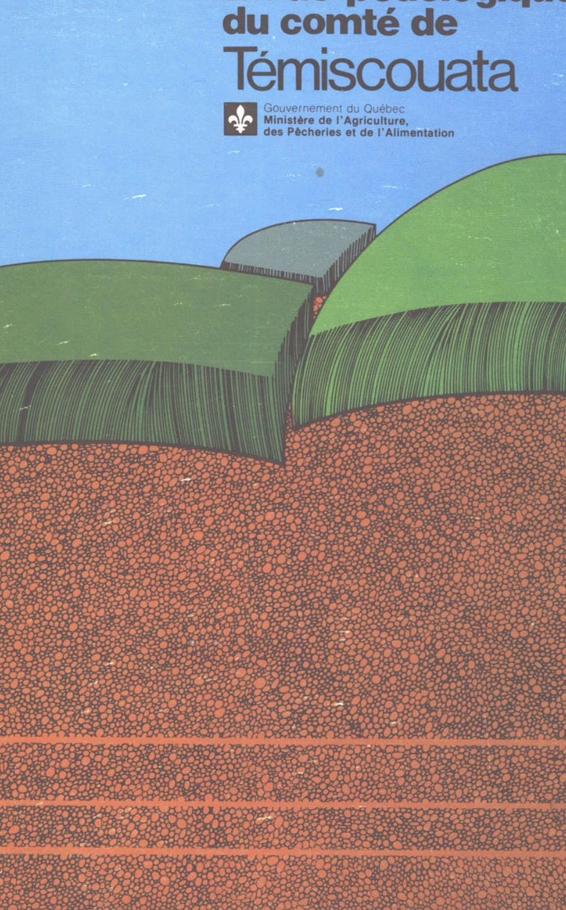
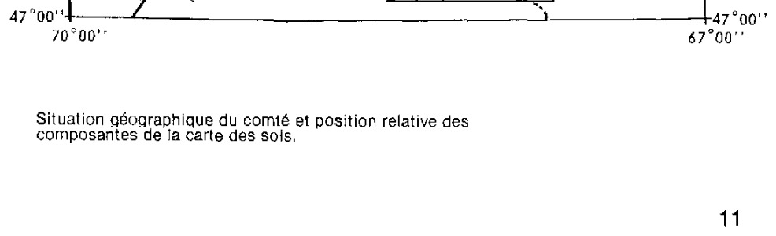

Agriculture et Agroalimentaire Canada (SISCan) — Transcription numérique haute fidélité
Table des matières (34 séries de sols répertoriées)
Étude pédologiquedu comté deTémiscouata
Gouvernement du Québec
Ministère de l'Agriculture,
des Pêcheries et de l'Alimentation

Page couverture de l'étude pédologique du comté de Témiscouata
Étude pédologiquedu comté de Témiscouata(Québec)
Bertrand Rochefort*
Agronome-pédologue
Service de recherche en sols
Direction de la recherche
Ministère de l'Agriculture,
des Pêcheries et de l'Alimentation du Québec
Québec
1981
* Chargé de recherches à la Division de pédologie du Service de recherche en sols
du ministère de l'Agriculture, des Pêcheries et de l'Alimentation du Québec.
Avant-propos
Les travaux de prospection et de cartographie des sols du comté de Témiscouata furent menés, au cours des années 1963, 1964 et 1965, grâce à la collaboration technique et financière du ministère de l'Agriculture du Canada. Soulignons toutefois que ces travaux ont été pratiquement interrompus, après 1965, par suite de notre collaboration, avec les autres pédologues du Québec, aux travaux de prospection et de cartographie des sols effectués dans toute la province, dans le cadre de l'inventaire des terres du Canada. Ces travaux, qui ont été exécutés selon les normes du système de classification des sols d'après leur aptitude à la production agricole (I.T.C., ARDA, 1965), ont pris fin en 1971. Ce n'est qu'à partir de cette date que la prospection pédologique du comté de Témiscouata fut reprise; elle s'est poursuivie épisodiquement jusqu'en 1978, cette fois sous l'égide du ministère de l'Agriculture, des Pêcheries et de l'Alimentation du Québec. Cette deuxième phase de prospection avait surtout pour but de réviser la classification et la cartographie pédologique d'un secteur important du Sud du comté. Au cours des nombreuses randonnées effectuées à cette fin sur le terrain, nous avons bénéficié des conseils et de l'expérience des pédologues René Raymond, Rolland Marcoux et Jean-Claude Dubé. Nous voulons exprimer toute notre gratitude à l'endroit des deux premiers pour leur précieuse collaboration à la corrélation et à la définition des unités taxonomiques des sols, et au troisième pour sa contribution toute particulière à l'identification des traits géologiques et géomorphologiques significatifs du territoire. Une connaissance mieux approfondie de ces éléments, qui comptent parmi les facteurs responsables de la mise en place des matériaux originels des sols et de l'orientation de leur évolution pédogénétique, a apporté à la prospection pédologique un éclairage nouveau, susceptible d'améliorer la précision de la classification et de la cartographie des sols.
Nous tenons également à remercier le Dr Marton Tabi, directeur du Service de recherche en sols, et les membres de son personnel pour leur bienveillante collaboration. Nous exprimons aussi toute notre gratitude à Mme Nicole St-Pierre, secrétaire, pour le grand dévouement et la compétence dont elle a fait preuve dans la correction et la dactylographie du texte de cet ouvrage. Nos sentiments de sincère reconnaissance s'adressent enfin au personnel de l'atelier d'arts graphiques pour le grand souci de précision et le sens esthétique qu'ils ont manifestés dans l'exécution des travaux de reproduction de la carte manuscrite des sols et autres documents d'arts graphiques, nécessaires à la publication de cette étude pédologique du comté de Témiscouata.
Introduction
Le territoire cartographié du comté de Témiscouata
Ce projet de prospection et de cartographie des sols touche une superficie approximative de 291 570 hectares. Il couvre tout le territoire compris entre les coordonnées 47°17' et 47°57' de latitude nord et celles de 68°15' et 69°24' de longitude ouest. Ces limites du comté de Témiscouata sont communes à celles des comtés de Kamouraska et de Rivière-du-Loup à l'ouest et au nord-ouest, et à celles du comté de Rimouski et de la province du Nouveau-Brunswick respectivement au nord-est et au sud-est. Cette limite interprovinciale du sud-est se prolonge au sud et au sud-ouest jusqu'à la rivière Saint-François. Cette rivière, jusqu'à l'extrémité sud du lac Saint-François, sert alors de frontière entre l'État du Maine et le comté de Témiscouata. La petite carte schématique ci-contre illustre la situation géographique du territoire cartographié du comté de Témiscouata, ainsi que les quatre sections composantes de la carte des sols.

Situation géographique du comté et position relative des composantes de la carte des sols.
LA FAÇON D'UTILISER CETTE ÉTUDE PÉDOLOGIQUE
La lecture de la carte des sols
La carte des sols qui accompagne le présent ouvrage est le résultat d'une généralisation au niveau des unités de relevé d'une première carte manuscrite originale. Cette dernière correspondait assez bien à la définition américaine (U.S.D.A. - 1951, p. 16) des cartes des sols semi-détaillées. Les aires qui y étaient délimitées n'étaient désignées que par des noms de séries, y compris dans certains cas ceux de leurs phases, ou encore par des noms de séries formant divers complexes ou associations. La carte publiée dans cette étude pédologique montre la distribution des sols dans le territoire du comté en les groupant dans des associations définies dont les composantes principales sont des séries de sols. Les délimitations figurant sur cette carte (map units) sont identifiées par des symboles numériques (gros chiffres) désignant les unités de relevé (map-ping units) auxquelles se réfèrent chacune des associations concernées. Chacune de ces unités de relevé représente des associations semblables qui sont définies par un mode particulier d'agencement et de répartition proportionnelle des sols qui les composent.
Soulignons incidemment que les sols faisant partie d'une association à un endroit déterminé de la carte peuvent se retrouver ailleurs dans une autre association, mais selon des proportions et des modes d'agencement différents.
Les symboles numériques de la carte des sols se réfèrent également à la légende de cette dernière. Chacune des associations types représentées dans les vingt unités de relevé de la carte est décrite brièvement dans cette légende.
Mentionnons aussi que les délimitations de la carte qui sont de même couleur et de même symbole numérique appartiennent toutes à la même unité de relevé et représentent, par conséquent, des associations semblables de sols. On notera également, dans chacune des séparations ou délimitations de la carte, la présence de chiffres minuscules accompagnant ceux (gros chiffres) des symboles numériques. Ces petits chiffres indiquent la superficie approximative en hectares de l'ensemble des composantes de l'association concernée. À partir de la superficie totale d'une association, il est possible d'évaluer approximativement la superficie de ses composantes, puisqu'on connaît par la légende le pourcentage de cette superficie totale de l'associaiton qui est attribué à chacune de ces composantes principales.
Les utilisateurs de cette carte pédologique ou carte des sols sont invités à faire une lecture très attentive de la section de cet ouvrage concernant la description des sols, afin de se familiariser avec les caractéristiques des sols et de leurs associations, lesquelles sont représentées par les unités de relevé de cette carte des sols.
Remarques à l'intention des utilisateurs de cette étude pédologique
Les renseignements contenus dans cet ouvrage ne portent que sur la planification de l'utilisation des grands ensembles de sols. En effet, les données de cette cartographie généralisée sont représentées sur une carte, dont l'échelle (1:50 000) ne permet pas de montrer la répartition de la plupart des sols normalement présents dans l'aire habituelle d'une ferme. Ajoutons aussi qu'à une telle échelle les unités de relevé (mapping units) de la carte ne peuvent représenter adéquatement que des associations; or,
1 La prospection pédologique du comté de Témiscouata
Les objectifs et les méthodes
Conformément à ses objectifs, qui étaient de connaître la nature des sols et leur répartition dans tout le territoire du comté de Témiscouata, cette prospection pédologique fut menée de façon systématique sur tous les terrains normalement accessibles. Au cours de nombreuses randonnées en auto ou à pied, plusieurs observations ont été faites en ce qui concerne la déclivité, la longueur et l'allure des pentes, l'altitude, le relief relatif, le modelé du terrain et son régime hydrique, aussi bien que tout autre trait géomorphologique ou géographique susceptible de servir de repère au tracé des séparations à faire sur les cartes des sols. On a constaté notamment que le mode d'agencement et de répartition proportionnelle des sols était souvent lié très étroitement à des traits géomorphologiques particuliers, qui révélaient la texture, le mode de mise en place et la distribution des dépôts meubles constituant les matériaux originels des sols. Soulignons incidemment que dans un même environnement climatique, les matériaux originels, par leur compositon et leur modelé, jouent un rôle déterminant dans l'orientation des divers processus qui concourent à la formation des sols. Les nombreuses relations ainsi observées, entre la distribution de sols et celle des dépôts meubles, se confirment généralement dans un choix plus judicieux des sites témoins destinés à l'étude des sols sur place. Une telle étude requiert, au préalable, le creusage de fosses de dimensions appropriées permettant l'observation des horizons en place dans les profils des sols concernés. C'est à l'intérieur de chacun de ces horizons que le pédologue doit identifier les principales propriétés caractéristiques de la nature et du degré d'évolution de ces sols. Le profil désigne la séquence des couches horizontales, appelées horizons, qui apparaissent dans la coupe verticale du sol exposé. Ce profil s'étend en profondeur de la couche de surface du sol à son matériau originel, c'est-à-dire à cette partie du dépôt meuble qui depuis la mise en place de ce dernier a été peu modifiée par l'action du lessivage ou des racines des plantes.
Au cours de la prospection on a procédé à l'examen de nombreux profils et à l'évaluation critique des corrélations possibles entre les propriétés caractéristiques de leurs principaux horizons de diagnostic. On a ainsi déterminé quels profils présentaient un degré suffisant de similitude pour être considérés comme appartenant à une même série de sols. On considère, en effet, que les horizons principaux ou de diagnostic de tous les sols d'une même série doivent être semblables quant à leur épaisseur, à leur mode d'arrangement dans le profil ou à toute autre caractéristique importante. Chaque série est identifiée par le nom du lieu (ville, village ou
autre trait géographique) près duquel un sol de cette série a été reconnu et cartographié pour la première fois.
Les sols d'une même série, bien que semblables dans tous les autres horizons de leur profil, peuvent différer entre eux par la texture de leur horizon de surface (le type, dans la classification antérieure). Ils peuvent aussi être distincts par leur pente, leur charge de pierres (pierrosité) ou par toute autre caractéristique pouvant modifier l'utilisation de tels sols par l'homme. C'est d'ailleurs sur de telles différences, entre les sols d'une même série, que reposent les subdivisions, appelées phases, qui sont faites de cette dernière catégorie du système taxonomique que constitue la série. Au sujet de la phase, soulignons les considérations suivantes des auteurs de la taxonomie canadienne (C.C.P. — 1978, p. 31): «Une phase est une unité de sol en dehors du système de taxonomie des sols. C'est une unité fonctionnelle qui peut être désignée selon le besoin de la prospection. Des phases de taxons peuvent être définies pour tous les niveaux de catégories, de l'ordre à la série.»
Cependant, lorsque des phases sont définies au dernier niveau catégorique, c'est-à-dire à celui de la série, elles représentent des propriétés qui influent sur le mode de gestion des sols concernés. De telles phases ne peuvent être séparées convenablement sur des cartes détaillées, soit celles qui ont une échelle minimale d'environ 1:15 000. Sur de telles cartes, les unités de relevé (mapping units) se réfèrent à des délinéations ou unités de la carte (map units) dont la grandeur est appropriée. Dans ce cas, les unités de relevé sont définies de telle sorte qu'elles sont pratiquement équivalentes à des phases de la série de sols et qui représente effectivement cartographiées, sur le terrain, comme représentatives de propriétés caractéristiques qui influencent de façon significative le mode de gestion des sols concernés.
Toute unité de relevé doit être établie en fonction des besoins particuliers de l'utilisation des terres. Ces besoins sont définis, au préalable, dans un projet spécifique de cartographie des sols. Toute interprétation rationnelle des cartes pédologiques devrait normalement se référer aux unités de relevé identifiant les diverses délinéations de telles cartes. En ce qui concerne l'unité de relevé de la carte des sols accompagnant cette étude pédologique, il faut souligner qu'elle a été établie en fonction d'objectifs plus généraux. Ces objectifs étaient de donner un aperçu général de la nature des sols et de leur distribution dans le territoire du comté et aussi, de connaître les propriétés caractéristiques particulières aux sols de chacune des séries reconnues et cartographiées; ces propriétés caractéristiques des séries de sols devant être interprétées en vue de déterminer les possibilités d'utilisation de grands ensembles de sols, et non de fermes ou de champs particuliers. Il s'agit donc de l'unité de relevé qui ne peut être équivalente à des phases de la série de sols et qui représente effectivement des associations de sols, telles celles qui sont définies dans la légende, ainsi que dans le texte qui précède sous la rubrique: «La lecture de la carte des sols». Cette unité de relevé ne peut donc servir à établir des plans de gestion pour les sols d'une ferme, puisque seules les unités de relevé qui sont équivalentes à des phases de la série permettent de repérer sur le terrain, à l'aide des cartes appropriées, ces caractéristiques particulières des sols qui influencent leur mode de gestion. En effet, seules les unités de relevé de cartes détaillées permettent de définir les unités de gestion (management units) à partir desquelles des plans de gestion de fermes peuvent être établis.
Le tracé des limites des sols du comté de Témiscouata s'est effectué d'abord sur des photographies aériennes, en noir et blanc, à une échelle approximative de 1:40 000. Ces délinéations des sols furent ensuite reportées, en vue de leur publication sur des cartes topographiques à l'échelle de 1:50 000. Le tracé préliminaire de ces délinéations des sols s'est référé essentiellement aux limites visibles, par stéréoscopie, de formes tridimensionnelles présumées identifiables à des formes de terrain typiques d'entités géomorphologiques définies et caractéristiques de pédo-paysages particuliers. Ce premier tracé effectué en laboratoire fut vérifié sur le terrain par la suite, au point de vue de l'exactitude tant des limites posées que de la nature des entités géomorphologiques et pédologiques présumées. Une telle vérification fut doublée au besoin d'un nouvel examen des relations supposées entre les formes de terrain vues sur place et leur aspect en vision stéréoscopique. Cette interprétation in situ des photos aériennes a permis, dans bien des cas, de prévoir un choix plus éclairé des sites à creuser en vue de mettre à jour les profils de sols à étudier.
Cependant, ce n'est qu'à la suite de nombreuses vérifications, au champ des propriétés caractéristiques présentes dans les horizons de plusieurs profils, qu'il fut possible de déterminer avec une certitude suffisante le tracé des limites des sols à poser sur la carte, ainsi que l'identité des sols ainsi délimités. C'est également dans le but de mieux connaître la nature et les propriétés essentielles des sols concernés qu'on a fait une description détaillée des caractéristiques morphologiques importantes de tous les horizons observables dans les profils des sols devant être identifiés à des séries connues ou à désigner.
On a procédé aussi à l'échantillonnage de chacun des horizons des profils typiques de ces sols, afin d'en étudier, en laboratoire, les caractéristiques essentielles. Les données ainsi obtenues ont ensuite été comparée aux valeurs normatives reconnues dans le système canadien de classification des sols. Ces données analytiques sont utilisées, seules ou concurremment avec celles de l'observation morphologique, pour déterminer le classement des sols dans les diverses catégories de la taxonomie canadienne.
Toutes les connaissances ainsi acquises au sujet des caractéristiques chimiques, physiques et morphologiques des sols nous aident à mieux comprendre leur comportement dans leur milieu naturel. Ajoutons aussi que toute connaissance relative au comportement d'un sol dans un site représentatif déterminé peut être étendue par extrapolation à toute aire du territoire dont les sols appartiennent à la même série. Une telle extrapolation est justifiée par l'expérience et par le principe reconnu, à savoir: «Les sols ayant le même nom de série sont essentiellement semblables, en ce qui concerne leur comportement dans un paysage non perturbé.» (U.S.D.A. 1971, p. 2.)
2 La description des sols
Cette section de l’étude pédologique du comté de Témiscouata est consacrée à la description des séries de sols, ainsi qu’à celle des unités de relevé de la carte pédologique accompagnant cette étude.
La description des séries et des sols divers qui se retrouvent dans chacune des associations est donnée selon leur ordre alphabétique. Elle est faite d’abord sous forme narrative et traite, en termes généraux, des principales propriétés caractéristiques des sols concernés. Cette première description de la série se complète par une deuxième plus détaillée et de style laconique, qui porte essentiellement sur les caractéristiques morphologiques précises et propres à chacun des horizons des profils typiques des sols appartenant à cette série. Cette deuxième description, comparativement à la première, se prête à des interprétations de caractère plus technique et s’adresse à des lecteurs plus avertis. Soulignons également que les noms et les symboles des couleurs du système Munsell, à moins d’avis contraire, se réfèrent au sol en condition humide.
Toutes les délinéations de la carte des sols qui sont identifiées par un même symbole numérique d’unité de relevé représentent des associations semblables, dont les sols forment des pédo-paysages distinctifs et reconnaissables à certaines particularités du mode d’agencement et de la distribution proportionnelle de ces sols. Étant donné que les unités de relevé de cette carte sont équivalentes à des associations de sols définies, chacune de ces unités sera décrite d’après les caractéristiques particulières à chacune des associations qu’elle représente sur la carte des sols. La description de ces unités de relevé apparaît dans ce texte selon l’ordre croissant de leurs symboles numériques. Soulignons, à l’intention des lecteurs de ces descriptions, qu’ils ne sauraient acquérir une connaissance satisfaisante des unités de relevé ci-après décrites, s’ils ne font en même temps une lecture attentive des descriptions de toutes les séries de sols comprises dans chacune des associations concernées.
Les séries et les sols divers
Les affleurements rocheux
Cette appellation désigne divers types de terrain dont la majeure partie de la superficie est occupée par le roc nu; elle comprend aussi les matériaux meubles très minces (moins de 10 cm) recouvrant la roche de fond. Ces dépôts n’ayant pas la profondeur minimale (10 cm) normative du sol sont considérés comme « non-sols » par définition. Leurs étendues peu importantes se concentrent au voisinage des affleurements rocheux. Ces dépôts minces occupent généralement le sommet des pentes fortes et drainent très rapidement.
Ces types de terrains sont utilisables à des fins généralement restreintes à la récréation. Les aires de minces recouvrements peuvent supporter une maigre végétation arborescente, dont les essences s'apparentent généralement à celles qui croissent dans les sols environnants plus profonds.
Les alluvions non différenciées
Les alluvions non différenciées désignent un groupe de terrains divers, issus d'alluvions plus ou moins différenciées et généralement peu évoluées au plan génétique. L'expression « non différenciées » s'applique à leurs coupes-témoins qui sont peu ou pas différenciées en couches horizontales, dites « horizons » pédogénétiques.
Compte tenu de la variation extrême observée dans la texture et la composition lithologique de leurs matériaux originels, ainsi que de la faible étendue de chacune de ces variations en valeur absolue ou relativement à l'échelle (1:50 000) de la carte utilisée, aucune série n'a été définie pour ces sols et, par conséquent, aucune place ne leur a été formellement attribuée dans la systématique canadienne actuelle; cependant, on peut dire que la plupart de ces alluvions se classeraient dans les sous-groupes régosoliques de l'ordre gleysolique ou dans les sous-groupes gléyifiés de l'ordre régosolique.
Certaines de ces alluvions sont très fertiles, particulièrement celles d'origine récente. Leur productivité est parfois limitée périodiquement par les dommages causés lors des crues saisonnières des cours d'eau. De plus, vu leur mode de distribution en bandes relativement étroites, rares sont les fermiers pouvant disposer d'étendues suffisantes de ces sols. Leur degré de limitation est très variable en ce qui concerne leur utilisation pour l'agriculture ou pour la construction routière et domiciliaire.
La série Cabano
La série Cabano comprend un ensemble de sols argileux modérément bien drainés et modérément profonds sur une argile stratifiée d'origine glacio-lacustre. Ces sols occupent les sommets de buttes, ainsi que la partie supérieure des pentes très douces (2 à 5 %) du microrelief, dans les vallées des lacs Témiscouata, Touladi, Des Aigles et Beau Lac et de leurs principaux tributaires.
Dans le profil typique, la couche superficielle, d'une épaisseur d'environ 5 centimètres, est constituée d'une couche organique noire à gris très foncé, dont le degré de décomposition est faible à sa surface et légèrement meilleur à sa base. La couche sous-jacente à celle de la surface est intermittente et consiste en un loam gris à gris clair, friable et de 1 à 2 centimètres d'épaisseur. Le sous-sol, friable à ferme, a une épaisseur totale d'environ 60 centimètres. Sa partie supérieure est formée d'une argile brun-jaune, fortement acide, friable et de structure granulaire; sa partie médiane comporte une argile olive pâle à jaune pâle, fortement acide, friable à ferme et de structure speudo-lamellaire dans laquelle commencent à apparaître quelques marbrures fines et peu visibles; la partie inférieure du sous-sol est une argile lourde ou une argile de couleur olive pâle à jaune pâle avec des marbrures fréquentes, fines et faibles, dont la réaction varie de moyennement acide à neutre.
La couche sous-jacente au sous-sol est une argile ou une argile lourde, neutre à faiblement alcaline, ferme et de couleur olive à olive pâle à l'état humide et jaune pâle à l'état sec. Elle est parsemée de marbrures distinctes, fines et moyennes. Ce dépôt glacio-lacustre est constitué de lits d'argile interstratifiée de lames (moins de 1 cm d'épaisseur) de sable très fin loameux. Cette structure originelle s'estompe graduellement sous l'effet de l'évolution pédogénétique pour faire place à une structure modérée, granulaire, à la partie supérieure du sous-sol.
La perméabilité des sols de cette série est modérée à faible; quant à l'eau disponible aux plantes, elle s'y trouve en quantités modérées. La profondeur de pénétration des racines est d'environ 40 centimètres. La fertilité naturelle des sols de cette série est assez élevée. Comme ils sont très fortement acides en surface, ils ont besoin d'un bon amendement calcaire. Grâce à leur texture de surface, qui est généralement voisine de celle du loam, ainsi qu'à l'absence de pierres, ils se prêtent très bien à la plupart des façons culturales et aux productions de grande culture. Cependant, compte tenu de leurs étendues relativement restreintes, ils sont peu utilisés pour l'agriculture.
Profil typique de la série Cabano en terrain vierge
Horizon
Profondeur (cm)
Description
L-H
5-0
Matière organique peu décomposée; noire (10 YR 3/1 h), gris foncé (10 YR 3/1 s); racines abondantes, fines et moyennes; limite abrupte, régulière; épaisseur de 2 à 5 cm; très fortement acide.
Ae
0-1
Loam; gris (10 YR 6/1 h), gris clair (10 YR 7/1 s); structure modérée, moyenne, granulaire; consistance peu collante, friable, tendre, peu plastique; racines abondantes, fines et moyennes; quelques graviers; limite abrupte, brisée; épaisseur de 1 à 2 cm; très fortement acide.
Bfj1
1-12
Argile; brun-jaune (10 YR 5,5/7 h) brun très pâle à jaune (10 YR 7/5 s); structure modérée, moyenne à fine, granulaire; consistance peu collante, friable, tendre, peu plastique; racines abondantes, moyennes et grossières; quelques graviers, limite diffuse, anduleuse; épaisseur de 10 à 12 cm; fortement acide.
Bfj2
12-17
Argile; brun-jaune clair à jaune olive (2,5 Y 6/5 h), jaune pâle à jaune (2,5 Y 3/5 s); structure modérée, moyenne, granulaire; consistance collante, faible, tendre, plastique; racines abondantes, fines; quelques graviers; limite nette, régulière; épaisseur de 4 à 5 cm; fortement acide.
Bm
17-22
Argile; olive pâle (5 Y 6/3 h), jaune pâle (5 Y 7/3 s); structure pseudolamellaire moyenne à grossière; consistance collante, friable, peu dure, plastique; racines abondantes, fines à très fines; enrobements argileux rares, très minces; limite nette, régulière; épaisseur de 4 à 5 cm; fortement acide.
Bmgj1
22-37
Argile; olive pâle (5 Y 6/3 h), jaune pâle (5 Y 7/3 s); marbrures rares, fines, faibles; structure faible, pseudolamellaire, laminée de sable très fin; consistance collante, peu dure, plastique; racines rares, fines à très fines; enrobements argileux rares, minces; limite nette, régulière; épaisseur de 14 à 15 cm; fortement acide.
Bmgj2
37-47
Argile lourde; olive pâle (5 Y 6/3 h), jaune pâle (5 Y 7/3 s); marbrures fréquentes, fines et moyennes, faibles; structure pseudolamellaire grossière, laminée de sable très fin; consistance collante, ferme, peu dure, plastique; enrobements argileux rares, minces; limite diffuse, régulière; épaisseur de 10 à 12 cm; moyennement acide.
Bmgj3
47-62
Argile; olive pâle (5 Y 6/3 h), jaune pâle (5 Y 7/3 s); marbrures fréquentes, fines à moyennes, faibles; structure pseudolamellaire grossière, laminée de sable très fin; consistance collante, ferme, peu dure, plastique; enrobements argileux rares, minces; limite diffuse, régulière; épaisseur de 12 à 15 cm; neutre.
Cgj1
62-96
Argile; olive à olive pâle (5 Y 5,5/3 h), jaune pâle (5 Y 7,5/3 s); marbrures fréquentes, fines à moyennes, distinctes; structure pseudolamellaire grossière, laminée de sable très fin; consistance collante, ferme, peu dure, plastique; limite graduelle, régulière; épaisseur de 12 à 14 cm; neutre.
Cgj2
96-125
Argile lourde; olive à olive pâle (5 Y 5,5/3 h), jaune pâle (5 Y 7/3 s); marbrures fréquentes, fines à moyennes, distinctes; structure pseudolamellaire grossière, laminée de sable très fin; consistance collante, ferme, peu plastique; limite diffuse, régulière; épaisseur supérieure à 30 cm; faiblement alcalin.
La série Caldwell
La série Caldwell comprend un groupe de sols bien drainés, de texture loameuse moyenne à grossière et modérément profonds sur sables et graviers stratifiés. Ils occupent les parties élevées d'un microrelief vallonné, à pentes très douces (3 à 5%), caractéristique des plaines d'épandage glacio-lacustres, dans les vallées des principaux lacs du comté, notamment celles des lacs Témiscouata, Beau Lac, Squatteck, Touladi et Des Aigles ou de leurs tributaires.
Dans le profil typique en sol vierge, la couche de surface est constituée de matière organique, gris très foncé à brun-gris, extrêmement acide et d'une épaisseur d'environ 10 centimètres; cette couche superficielle est très peu décomposée à sa partie supérieure, et modérément bien décomposée et légèrement minéralisée (mélangée au sol minéral) au contact de la couche sous-jacente. Cette dernière, également extrêmement acide, a une texture de loam et une couleur gris-rose à blanc-rose; elle est intermittente et son épaisseur est d'environ 4 centimètres. Le sous-sol, dont l'épaisseur totale est d'environ 40 centimètres, est très friable et de structure faible, granulaire; sa partie supérieure comprend un loam sableux moyen, très friable, brun foncé à brun vif, extrêmement acide, et un loam limoneux sous-jacent, brun-jaune à jaune-brun tendre, granulaire et fortement acide; la partie médiane est un loam limoneux brun-olive clair à brun-jaune clair, granulaire, très friable à meuble et fortement acide. Quant à sa partie inférieure, sa structure et sa réaction sont les mêmes que celles de la partie médiane décrite ci-dessus; elle diffère toutefois par sa couleur brun-jaune olive à jaune pâle, sa consistance meuble, ainsi que par la présence de quelques lits ou poches de gravier près de son contact avec le matériau sous-jacent. Ce matériau sous-jacent au sous-sol est meuble et sans structure, et renferme quelques marbrures faibles et fines; il se compose d'un sable loameux moyen graveleux, fortement acide, d'une épaisseur d'environ 15 centimètres, reposant sur un sable moyen graveleux, fortement à moyennement acide.
La perméabilité est modérée dans le sous-sol et très grande dans le matériau graveleux sous-jacent. L'eau disponible aux plantes est modérément déficiente dans ces sols de la série Caldwell. La profondeur moyenne de pénétration des racines y est d'environ 75 centimètres. La fertilité naturelle des sols de cette série est plutôt faible, quoiqu'ils répondent bien aux amendements calcaires et aux engrais, et se prêtent facilement aux façons culturales.
Ces sols sont utilisés pour la grande culture. Ils conviennent bien aux cultures sarclées, notamment à celle de la pomme de terre. Leur limitation principale, pour la culture des petits fruits, consiste surtout dans le risque de gel, assez fréquent au fond des vallées glacio-lacustres. À certains endroits où ces sols Caldwell sont suffisamment profonds, ils sont parfois utilisés comme source de sables et de graviers.
Horizon
Profondeur (cm)
Description
L-H
10-0
Matière organique peu décomposée; gris très foncé à brun-gris très foncé (10 YR 3/1,5 h), gris à brun-gris (10 YR 5/1,5 s); racines très abondantes, fines et moyennes; limite abrupte, régulière; épaisseur de 8 à 10 cm; extrêmement acide.
Ae
0-4
Loam; gris-rose (7,5 YR 7/2 h), blanc-rose (7,5 YR 8/2 s); structure faible à très faible, fine, granulaire; consistance peu coilante, très friable, tendre, peu plastique; racines abondantes, fines et moyennes; limite nette, brisée; épaisseur de 2 à 5 cm; extrêmement acide.
Bf1
4-6
Loam sableux moyen brun foncé (7,5 YR 4/4 h), brun vif (7,5 YR 5/6 s); structure faible, fine, granulaire; consistance non collante, très friable, tendre, non plastique; racines abondantes, fines et moyennes; limite nette, ondulese; épaisseur de 2 à 3 cm; extrêmement acide.
Bf2
6-19
Loam limoneux; brun-jaune (10 YR 5/6 h), jaune-brun (10 YR 6/6 s); structure faible, fine, granulaire; consistance peu collante, très friable, tendre, peu plastique; racines peu abondantes, fines; limite graduelle, régulière; épaisseur de 12 à 14 cm; fortement acide.
Bfj1
19-32
Loam limoneux; brun olive clair à brun-jaune clair (2,5 Y 5,5/4 h), jaune olive à jaune (2,5 Y 6,5/4 s); structure faible, fine, granulaire; consistance non collante, très friable à meuble, non plastique; limite nette, onduleuse; épaisseur de 10 à 13 cm; fortement acide.
Bfj2
32-45
Loam limoneux; brun-jaune olive (2,5 Y 6/4 h), jaune pâle (2,5 Y 7/4 s); structure faible, fine, granulaire; consistance non collante, meuble, non plastique; quelques graviers; limite nette; épaisseur de 12 à 14 cm; fortement acide.
II Cgi1
45-60
Sable loameux moyen graveleux; brun olive clair (2,5 Y 5/4 h), olive (2,5 Y 5/3 s); marbrures rares, fines, faibles; structure particulaire; consistance non collante, meuble, non plastique; graviers; limite graduelle, régulière; épaisseur de 14 à 16 cm; fortement acide.
II Cgi2
60-100
Sable moyen graveleux; olive (5 Y 5/4 h), gris olive (5 Y 5/2 s); marbrures rares, fines, faibles; structure particulaire; lits de graviers et de sable; consistance non collante, meuble, non plastique; moyennement acide.
La série Chabot
La série Chabot comprend un groupe de sols profonds, très mal drainés, aux couleurs sombres et de texture moyenne loameuse. Ils occupent les parties planes et les creux des plaines, coteaux et collines de tills, dont les éléments figurés proviennent des formations géologiques du groupe de Québec. Ce till de fond, à caractère surtout régional, appartient aux mêmes tills glaciaires que ceux qui recouvrent la partie sud du plateau des Appalaches dans les comtés limitrophes de Kamouraska et de Rivière-du-Loup. Ces tills s'étendent vers le sud et pénètrent dans le comté de Témiscouata, à l'ouest jusqu'à la vallée de la rivière Cabano et à l'est un peu au-delà des extrémités sud des lacs Touladi et Pain de Sucre.
Dans le profil typique, la couche de surface est fortement acide et son épaisseur est d'environ 18 centimètres. Elle consiste en un loam à cherts (fragments rocheux anguleux et de forme irrégulière) friable, granulaire, très pierreux et de couleur noire à gris très foncé. La couche sous-jacente à cette couche de surface est d'un brun-gris très foncé à gris clair, accompagnée de marbrures marquées, fines et fréquentes. Sa réaction est neutre et son épaisseur, d'environ 7 centimètres.
Le sous-sol, un loam à cherts pierreux d'une épaisseur totale d'environ 60 centimètres, est de réaction neutre. Sa partie supérieure est friable à ferme et sa couleur, brun-jaune foncé à jaune pâle, s'accompagne de marbrures marquées, moyennes à grossières; quant à sa partie inférieure, elle est ferme, massive, neutre et d'une couleur brun-jaune foncé à gris clair, qui s'accompagne de marbrures marquées et fréquentes.
La partie du profil qui est sous-jacente au sous-sol est ferme, massive et de réaction faiblement alcaline. Sa couleur brun-gris à jaune pâle est accompagnée de marbrures marquées, moyennes et fréquentes.
Les sols de la série Chabot sont très peu perméables, particulièrement dans la partie inférieure de leur profil qui est sous-jacent au sous-sol. L'humidité disponible aux plantes y est très abondante et, à cause de la présence d'une nappe phréatique élevée, la zone des racines y est peu profonde. De plus, les eaux d'infiltration et de ruissellement des pentes adjacentes s'accumulent fréquemment à la surface de ces sols.
Le niveau de fertilité naturelle y est assez élevé et seule leur couche de surface nécessite quelques amendements calcaires. Néanmoins, la plupart d'entre eux sont laissés en forêt, alors que certaines étendues sont utilisées comme prairies ou pâturages d'appoint. Les principaux obstacles à leur mise en culture proviennent de l'abondance des pierres en surface et dans leur profil, et aussi de leurs conditions de drainage très mauvaises. Leur assainissement par drainage de surface ou souterrain est rendu difficile en raison de la présence d'un till compact et pierreux dans leur solum et leur substratum, et aussi de la position peu favorable qu'ils occupent dans le relief.
Profil typique de la série Chabot en terrain cultivé
Horizon
Profondeur (cm)
Description
Ap
0-18
Loam à cherts; noir (5 YR 2/1 h), gris très foncé (5 YR 3/1 s); structure modérée, fine à moyenne, granulaire et faible, fine, polyédrique, subangulaire; consistance peu collante, très friable, tendre, peu plastique; racines abondantes, très fines à fines; cherts; limite nette, régulière; épaisseur de 18 à 20 cm; fortement acide.
Aeg
18-25
Loam à cherts; brun-gris foncé (10 YR 4/2 h), gris clair (10 YR 7/3 s); marbrures fréquentes, fines, marquées, brun-jaune (10 YR 5/6 h); structure amorphe (massive); consistance peu collante, ferme, peu dure, peu plastique; cherts; limite nette, régulière; épaisseur de 5 à 7 cm; neutre.
Bgf1
25-41
Loam à cherts; brun-jaune foncé (10 YR 4/4 h); jaune pâle (2,5 Y 7/3 s); marbrures nombreuses, moyennes à grossières, marquées; structure amorphe (massive) à polyédrique grossière; consistance peu collante, friable à ferme, peu dure, peu plastique; cherts; limite nette, régulière; épaisseur de 14 à 16 cm; neutre.
Bgf2
41-86
Loam à cherts; brun-jaune foncé (10 YR 4/5 h), gris clair (2,5 Y 7/2 s); marbrures nombreuses, moyennes, marquées; structure amorphe (massive); consistance collante, ferme, dure, plastique; cherts; limite nette, régulière; épaisseur de 40 à 45 cm; neutre.
Ckg
86-100
Loam à cherts; brun-gris (2,5 Y 5/2 h), gris clair à jaune pâle (2,5 Y 7/3 s); marbrures fréquentes, moyennes, marquées; structure massive (amorphe); consistance collante, ferme, dure, plastique; cherts; limite diffuse, régulière; faiblement alcalin.
La série Chapais
La série Chapais comprend des sols loameux fins, peu profonds sur till et dont le drainage est bon, ainsi que des sols très minces à contact lithique (roche en place appartenant aux formations du groupe de Québec), dont le drainage est rapide. Ces sols occupent le sommet et la partie supérieure de pentes modérées à fortes (10 à 31%) ou douces (6 à 9%) des collines ou des coteaux surbaissés, dans l'aire de ces tills glaciaires compris entre la limite nord du comté et la vallée de la rivière Cabano.
Les sols très minces sur roc (contact lithique à moins de 50 cm) ont été considérés antérieurement comme une phase de la série Chapais, lors de la cartographie des trois comtés limitrophes de L'Islet, de Kamouraska et de Rivière-du-Loup. Ce même concept de « phase » a été maintenu, au cours de la prospection de ce comté, dans le seul but d'assurer l'uniformité des cartes, relativement à ces sols minces, avec les deux comtés mentionnés ci-dessus. Il faut néanmoins signaler que de tels sols minces devraient faire l'objet d'une série distincte de celle comprenant les sols profonds et modérément profonds de la série Chapais; ceci, au même titre que leurs homologues, les sols Quisibis de la partie sud du comté, relativement aux sols profonds de la série Holmesville. Cette obligation d'établir une série distincte découle, en effet, de l'introduction récente (C.C.P. — 1978) dans la systématique canadienne de familles lithiques dont les normes reposent sur diverses profondeurs du sol au roc.
Dans le profil typique, la couche de surface est d'une épaisseur d'environ 5 cm et se compose de matière organique peu décomposée, très fortement acide et de couleur gris très foncé à brun-gris foncé. La couche sous-jacente est un loam à cherts, pierreux, friable, granulaire et extrêmement acide, dont la couleur varie du brun-gris au blanc.
Le sous-sol est constitué d'un loam à cherts, pierreux, d'une épaisseur totale d'environ 53 centimètres; dans les 7 premiers centimètres de la partie supérieure, ce loam à cherts est friable, granulaire, extrêmement acide, et sa couleur varie du brun-jaune foncé au jaune-brun. La partie médiane, de même texture, a une épaisseur d'environ 13 centimètres. Elle est friable, granulaire, de couleur olive à brun-jaune clair et très fortement acide; à la partie inférieure du sous-sol, le loam à cherts prend une couleur gris-brun à brun-jaune clair, qui s'accompagne de marbrures nombreuses, fines et faibles. Il a une réaction fortement acide et une épaisseur d'environ 33 centimètres au-dessus du roc.
Cette dernière partie du sous-sol présente certaines caractéristiques des couches fragiques, notamment une consistance dure et apparemment cimentée à l'état sec, et modérément à faiblement fragile à l'état humide, ainsi que la propriété de se désagréger dans l'eau que possèdent ses mots-séchées à l'air.
La perméabilité des sols de la série Chapais est modérée dans la partie supérieure et très faible dans la partie inférieure du sous-sol. La quantité d'humidité disponible aux plantes est modérée. La profondeur des racines est limitée à environ 40 centimètres par la couche de till compact constituant la partie inférieure du sous-sol. Dans ladite « phase » très mince de ces sols, la zone des racines est limitée par la faible profondeur du roc. De plus, à cause de leur manque de profondeur et de leur position dans le profil, ces sols sont généralement plus susceptibles de souffrir de la sécheresse que ceux qui sont représentés par le profil typique. Les sols Chapais, notamment ceux de ladite « phase très mince », sont sujets à l'érosion lorsqu'on les soumet à des cultures intensives et à des façons culturales inappropriées. Ils ont une fertilité naturelle moyenne, mais répondent bien à une
fertilisation appropriée, précédée des amendements calcaires requis pour corriger l'acidité de leur surface et de leur sous-sol. La majeure partie des sommets élevés et des hauts de pentes fortes occupés par ces sols sont en forêts. Les étendues cultivées les plus importantes se confinent généralement aux pentes modérées ou douces des collines et principalement des coteaux surbaissés. Les sols Chapais conviennent assez bien aux grandes cultures et à la pomme de terre, pourvu que les travaux d'épierrement nécessaires précèdent leur mise en culture.
Profil typique de la série Chapais en terrain vierge
Horizon
Profondeur (cm)
Description
L-H
5-0
Horizon organique peu décomposé; gris très foncé (10 YR 3/1 h), brun-gris foncé (10 YR 4/2 s); racines très abondantes, moyennes à grossières; quelques cherts; limite nette, régulière; épaisseur de 4 à 5 cm; très fortement acide.
Ae
0-13
Loam à cherts; brun-gris (10 YR 5/2 h), blanc (10 YR 8/2 s); structure faible, fine, granulaire; consistance peu collante, friable, tendre, peu plastique; racines abondantes, moyennes à fines; cherts; limite abrupte, brisée; épaisseur de 12 à 16 cm; extrêmement acide.
Bf1
13-20
Loam à cherts; brun-jaune foncé (10 YR 4/4 h), brun-jaune clair à jaune-brun (10 YR 6/5 s); structure modérée, fine, granulaire; consistance peu collante, friable, tendre, peu plastique; racines peu abondantes, fines; cherts; limite nette, ondulée; épaisseur de 5 à 8 cm; extrêmement acide.
Bf2
20-33
Loam à cherts; olive (2,5 Y 4/4 h), brun-jaune clair (2,5 Y 6/4 s); structure faible, fine, granulaire; consistance peu collante, friable, tendre, peu plastique; cherts; limite graduelle, régulière; épaisseur de 12 à 14 cm; très fortement acide.
Btjxgi
33-66
Loam à cherts; gris-brun clair (2,5 Y 6/2 h), brun-jaune clair (2,5 Y 6/4 s); marbrures nombreuses, fines, faibles; structure primaire forte, très grossière, polyédrique angulaire, et structure secondaire modérée, moyenne, lamellaire; consistance peu collante, ferme, dure, peu plastique; pores très abondants, très fins, verticaux, endo-peds, continus, simples, tubulaires; fentes très abondantes, fines, verticales, exo-peds, continues, simples, interstratitielles; enrobements argileux brun pâle, peu nombreux, minces à très minces, dans les fentes interstratitielles des polyèdres, et enrobements argileux brun pâle, communs, minces à très minces, dans les vides et/ou les lacunes tubulaires; cherts, cailloux anguleux; limite diffuse dans les tills très profonds (plus de 130 cm)); fortement acide.
R
66*
Roc constitué de grès gris à gris foncé, de schistes ardoisiers, de quelques schistes brun-rouge et de quartz blanc.
* Une profondeur au roc supérieure à 100 centimètres serait plus conforme au profil typique de la série.
La série Des Aigles
Les sols de la série Des Aigles sont très mal drainés et de texture loameuse grossière. Ils sont généralement peu profonds et reposent sur des sables moyens d'origine glacio-lacustre. Ils occupent les parties planes et les creux peu profonds du relief des plaines d'épandage qui se trouvent principalement dans les vallés des lacs Témiscouata, Beau Lac, Touladi et Des Aigles ou dans celles de leurs principaux tributaires.
Le profil typique présente une couche de surface d'une épaisseur d'environ 10 centimètres, peu décomposée, extrêmement acide et de couleur noire à brun-gris foncé. Elle surmonte une couche de sable moyen loameux, très friable, granulaire, extrêmement acide et de couleur grise à gris clair.
Le sous-sol, d'une épaisseur approximative de 10 centimètres, est constitué d'un sable moyen très friable, granulaire et extrêmement acide; sa couleur varie du brun-gris foncé au brun-gris et s'accompagne de marbrures marquées, nombreuses et grossières.
Le matériau sous-jacent, d'une épaisseur d'environ 10 centimètres, est un sable moyen loameux extrêmement acide, dont la couleur brun-gris foncé à gris-brun clair s'accompagne de marbrures marquées, fréquentes et grossières. Il est très friable et possède une pseudo-structure lamellaire grossière. Cette première couche du matériau sous-jacent repose sur deux autres couches, stratifiées et fortement acides, dont les couleurs s'accompagnent de marbrures marquées, fréquentes, moyennes à grossières. La première de ces couches est mince (environ 5 cm) et se compose d'un loam sableux brun-gris à gris-brun clair ferme et sans structure, tandis que la seconde est plus épaisse (plus de 67 centimètres) et consiste en un sable moyen, meuble et sans structure (particulaire), dont la couleur varie du gris au gris olive clair.
La perméabilité ainsi que l'humidité disponible aux plantes sont élevées dans les sols Des Aigles. La profondeur des racines y est limitée par l'excès d'eau dans le sol, causé par la présence d'une nappe phréatique élevée, qui remonte très fréquemment au-dessus ou près de la surface.
Ces sols sont très acides et leur fertilité naturelle est plutôt faible. Les étendues non drainées artificiellement fournissent des prairies et pâturages de peu de qualité; celles qui sont étroitement associées géographiquement aux sols Touladi peuvent servir à la grande culture, moyennant des correctifs importants apportés aux conditions de drainage, d'acidité et de fertilité de ces sols.
Profil typique de la série Des Aigles en terrain vierge
Horizon
Profondeur (cm)
Description
L-H
10-0
Horizon organique peu décomposé; noir (10 YR 2/1 h), brun-gris très foncé à brun-gris foncé (10 YR 3,5/2 s); racines abondantes, fines et moyennes; limite abrupte, régulière; épaisseur de 8 à 12 cm; extrêmement acide.
Aeg
0-2
Sable moyen loameux; gris (10 YR 6/1 h), gris clair (10 YR 7/1 s); structure faible, fine, granulaire; consistance non collante, très friable, non plastique; racines peu abondantes, fines et moyennes; limite abrupte, brisée; épaisseur de 2 à 4 cm; extrêmement acide.
Bg
2-18
Sable moyen; brun-gris foncé (10 YR 4/2 h), brun-gris (10 YR 5/2 s); marbrures nombreuses, grossières, marquées; structure très faible, fine, granulaire; consistance non collante, meuble, non plastique; limite nette, régulière; épaisseur de 14 à 16 cm; extrêmement acide.
Cg1
18-28
Sable moyen loameux; brun-gris foncé à brun-gris (2,5 Y 4,5/2 h), gris-brun clair (2,5 Y 6,5/2 s); marbrures fréquentes, moyennes à grossières, marquées; structure très faible, grossière, pseudolamellaire; consistance peu collante, très friable, peu dure, peu plastique; limite nette, régulière; épaisseur de 10 à 12 cm; fortement acide.
Cg2
28-33
Loam sableux; brun-gris à gris-brun clair (2,5 Y 5,5/2 h), gris-brun clair à gris clair (2,5 Y 6,5/2 s); marbrures fréquentes, moyennes à grossières, marquées; structure amorphe (massive); consistance peu collante, ferme, peu dure, peu plastique; limite nette, régulière; épaisseur de 4 à 5 cm; fortement acide.
Cg3
33-100
Sable moyen; gris (5 Y 5/1 h), gris à gris olive clair (5 Y 5,5/1,5 s); marbrures fréquentes, moyennes à grossières, marquées; structure particulaire; consistance non collante, meuble, non plastique; limite diffuse, régulière; épaisseur de 60 à 70 cm; fortement acide.
La série Glassville
La série Glassville est constituée de sols minces à contact lithique et de texture loameuse, moyenne à modérément fine, dont les conditions de drainage varient de rapides à très rapides. Ces sols reposent à des profondeurs de 60 à 85 centimètres sur une roche en place de structure générale ardoisière appartenant à la formation de Témiscouata. Les sols Glassville qui la recouvrent sont issus d'un till à caractère surtout local, comme en fait foi la présence dominante dans leur profil de nombreux fragments d'ardoises identiques à ceux de cette roche en place. Ils occupent les sommets de collines à pentes fortes (16 à 30%) et très fortes (35 à 45%) ou encore les reliefs à pentes modérées à fortes (10 à 16%) de terrains perchés contre les hauteurs de ces collines. Le till constituant leur matériau originel fait partie d'un ensemble de tills glaciaires dont l'aire s'étend de la région du Nouveau-Brunswick, qui est limitrophe à la frontière sud du comté, jusqu'à la vallée de la Cabano, dans le nord-ouest du comté, et jusqu'aux environs des lacs Touladi et Pain de Sucre, dans sa partie nord-est.
La partie supérieure du profil typique comprend une couche de surface et une couche sous-jacente qui ont respectivement environ 10 et 5 centimètres d'épaisseur. La surface se compose d'une couche de matière organique, noire à brun très foncé, qui est modérément bien décomposée et fortement acide. Elle contient des fragments abondants d'ardoises et quelques fragments de cherts. La couche sous-jacente est de couleur gris-brun clair à gris clair et elle a une réaction extrêmement acide. Elle est friable, granulaire et renferme de nombreux fragments d'ardoises, ainsi que des plaquettes, moins nombreuses, de schistes ardoisiers et quelques cherts.
Le sous-sol, qui forme une épaisseur totale d'environ 70 centimètres, repose sur la roche en place. Il est constitué d'une terre fine dont la texture est celle du loam sablo-argileux, exception faite du loam argileux de sa partie médiane. Cette terre fine, relativement peu abondante, renferme des fragments d'ardoises en grandes quantités et, en quantités moindres, des plaquettes de schistes ardoisiers et quelques cherts. Plusieurs des fragments d'ardoises sont de diamètres assez grands pour être classés parmi les fragments en dalles (15 à 38 cm). Ce sous-sol est parfois infiltré profondément par des quantités relativement importantes de matières organiques liées aux particules minérales. Sa partie supérieure est épaisse d'environ 15 centimètres, extrêmement acide, friable, granulaire et de couleur brun-jaune foncé à jaune-brun. Sa partie médiane consiste en un loam argileux très friable, granulaire et très fortement acide, dont la couleur ressemble beaucoup à celle de la partie supérieure. Elle a une réaction très fortement acide et une épaisseur d'environ 25 centimètres. La partie inférieure de ce sous-sol, qui repose sur la roche en place, a une profondeur d'environ 30 centimètres. Elle se compose d'un loam sablo-argileux, meuble et granulaire, de couleur brun-jaune foncé à brun-jaune et dont la réaction est fortement acide.
La perméabilité du sol est modérée, de même que la qualité d'humidité disponible aux plantes, chez les sols Glassville. La profondeur des racines s'y trouve limitée souvent par des quantités excessives d'ardoises ou par le roc sous-jacent. Enfin, dans certaines positions du relief, ces sols souffrent de sécheresse lorsqu'ils sont trop minces.
Les sols Glassville occupent généralement les parties les plus accidentées ou les plus élevées du relief du comté; de plus, leur solum renferme une très grande proportion de fragments grossiers d'ardoises, ainsi que de nombreuses plaquettes de schistes ardoisiers. Les caractéristiques qui précèdent suffiraient à expliquer le fait que de tels sols, pour la plupart, soient demeurés sous couvert forestier; on pourrait aussi ajouter qu'ils sont naturellement peu fertiles, modérément bien pourvus en humidité disponible aux plantes et fortement à extrêmement acides.
Profil typique de la série Glassville en terrain vierge
Horizon
Profondeur (cm)
Description
L-H
10-0
Matière organique modérément bien décomposée; noire (7,5 YR 2/0 h), brun très foncé (10 YR 2/2 s); racines très abondantes, moyennes à grossières; fragments d'ardoises tres abondants et quelques cherts; limite nette, régulière; épaisseur de 8 à 10 centimètres; fortement acide.
Ae
0-5
Loam limoneux à fragments d'ardoises très abondants et à plaquettes de schistes ardoisiers; gris-brun clair à gris clair (10 YR 6,5/2 h), gris clair à blanc (10 YR 7,5/2 s); structure faible, fine à moyenne, granulaire; consistance peu collante, friable, peu dure, peu plastique; racines abondantes, fines; fragments d'ardoises très abondants, plaquettes de schistes ardoisiers et quelques cherts; limite abrupte, brisée; épaisseur de 4 à 7 centimètres; extrêmement acide.
Bf1
5-20
* Loam sablo-argileux à fragments d'ardoises très abondants et à plaquettes de schistes ardoisiers; brun-jaune foncé (10 YR 4/4 h), brun-jaune à jaune-brun (10 YR 6,5/2 s); structure faible, fine, granulaire; consistance peu collante, très friable, tendre, peu plastique; racines abondantes, fines; fragments d'ardoises très abondants, plaquettes de schistes ardoisiers et quelques cherts; limite nette, régulière; épaisseur de 14 à 16 centimètres; extrêmement acide.
Bf2
20-45
* Loam argileux à fragments d'ardoises très abondants et à plaquettes de schistes ardoisiers; brun-jaune foncé (10 YR 3,5/4 h), brun-jaune à jaune-brun (10 YR 5,5/5 s); structure faible, fine, granulaire; consistance peu collante, très friable, tendre, peu plastique; racines abondantes, fines; fragments d'ardoises très abondants, plaquettes de schistes ardoisiers et quelques cherts; limite diffuse, régulière; épaisseur de 22 à 25 centimètres; très fortement acide.
Bf3
45-75
* Loam sablo-argileux à fragments d'ardoises très abondants; brun-jaune foncé (10 YR 3/4 h), brun-jaune (10 YR 4,5/4 s); structure faible, fine, granulaire; consistance non collante, meuble, non plastique; racines rares, très fines; fragments d'ardoises, dont plusieurs sont en dalles, et rares cherts; limite nette, onduleuse; épaisseur de 25 à 30 centimètres; fortement acide.
R
75*
Roche en place constituée surtout de lits relativement épais de schistes ardoisiers assez durs, légèrement calcaire et de schistosité très faible, qui se débitent en ardoises et, bon nombre, en dalles.
* Des analyses granulométriques, plus nombreuses et plus pertinentes à cette série, pourraient démontrer que les textures normales des sous-sols de ses profils typiques sont en réalité plus proches de celles des loams ou des loams sableux, textures plus conformes à celles observées sur le terrain.
La série Grandfalls
Les sols de la série Grandfalls ont été reconnus et cartographiés pour la première fois dans la province du Nouveau-Brunswick. Ce sont des sols loameux modérément profonds, modérément grossiers et graveleux, reposant sur un substratum de sables grossiers et graveleux, ce qui leur confère une perméabilité élevée et des conditions de drainage très rapide. Leur matériau originel provient d'alluvions fluvio-glaciaires, dont la lithologie s'apparente à celle des tills glaciaires avec lesquels ils sont en association géographique dans la partie sud du comté. Ces sols Grandfalls ont un relief à pentes douces (6 à 9 %) dans les vallées à traînées fluvio-glaciaires et sur les terrasses de kame, et un relief à pentes modérées (10 à 15 %) ou fortes (16 à 30 %) aux flancs des kames et des eskers.
Leur profil typique présente ordinairement une couche de surface, d'une épaisseur de près de 12 centimètres, dont la couleur est noire à gris très foncé. Les débris végétaux constituant cette surface sont peu décomposés, de couleur noire à brun très foncé, et ils ont une réaction très fortement acide. La couche qui lui est sous-jacente est d'une épaisseur d'environ 8 centimètres. Elle est extrêmement acide et de couleur brun-gris à gris-brun clair. Sa terre fine est un loam friable et granulaire, qui contient de nombreux graviers et cailloux.
Le sous-sol du profil typique comprend une épaisseur totale d'environ 42 centimètres d'un loam sableux et d'un sable loameux, grossiers et très graveleux, dont les réactions respectives sont extrêmement et très fortement acides. La partie supérieure de ce sous-sol, dont l'épaisseur est d'environ 12 centimètres, a une couleur brun-jaune foncé à jaune-brun. Elle consiste en un loam sableux grossier, très friable, granulaire, très graveleux et caillouteux, dont la réaction est extrêmement acide; quant à sa partie inférieure, elle est constituée d'une épaisseur d'environ 30 centimètres d'un sable loameux grossier, friable, granulaire, très graveleux et caillouteux, qui est de couleur brun-olive à brun-jaune clair et dont la réaction est très fortement acide. Ce sous-sol repose sur un substratum, à litage oblique, de sables grossiers, très friables et particulaires, qui sont très graveleux et caillouteux. La couleur de ce matériau, sous-jacent au sous-sol, varie du brun-gris foncé au gris-brun clair dans une première couche d'environ 25 centimètres, et du brun-gris très foncé à brun-gris foncé dans les couches plus profondes. Pareillement à la couleur, la réaction de ce substratum varie avec la profondeur, passant de la classe très fortement acide à la classe fortement acide.
La perméabilité des sols Grandfalls est élevée dans leur sous-sol et très élevée dans leur substratum. Ils ont une quantité faible d'humidité disponible aux plantes et souffrent souvent de sécheresse. La profondeur de l'enracinement y est limitée aux sables et graviers grossiers de leur substratum.
La plupart des sols de la série Grandfalls demeurent en forêt, s'ils se situent sur les pentes fortes aux flancs des kames et des eskers. Les meilleures étendues de pentes douces, dans les vallées à traînées fluvio-glaciaires ou sur les terrasses à kames, sont utilisées pour la culture de la pomme de terre et, plus rarement, pour les grandes cultures. Vu leur perméabilité élevée, les plantes y souffrent régulièrement d'un manque d'humidité et particulièrement au cours des périodes sèches des mois de juillet et août. Les sols Grandfalls se caractérisent par un faible niveau de fertilité naturelle et une réaction très fortement à extrêmement acide. Ils requièrent des apports répétés et dûment contrôlés d'amendements et de fertilisants, vu le peu de pouvoir de rétention de leur complexe absorbant.
défaut attribuable à leur structure faible et à leur texture grossière. Cette condition peut être améliorée, en augmentant la teneur du sol en matière organique, par l'application de fumier de ferme et par l'enfouissement d'engrais verts. Soulignons aussi que les sols Grandfalls sont une bonne source de sable et de gravier.
Profil typique de la série Grandfalls en terrain vierge
Horizon
Profondeur (cm)
Description
L-H
12-0
Horizon constitué de débris végétaux à demi décomposés; noir (7,5 YR 2/1 h), brun très foncé (10 YR 2/2 s); racines très abondantes, moyennes à fines; cailloux et graviers; limite nette, régulière; épaisseur de 10 à 12 centimètres; très fortement acide.
Ae
0-8
Loam graveleux, brun-gris à gris-brun clair (10 YR 5,5/2,5 h), gris clair à gris-brun clair (10 YR 6,5/1,5 s); structure faible à modérée, fine à moyenne, granulaire; consistance collante, friable, peu dure, peu plastique; racines abondantes, fines; cailloux et graviers abondants; limite abrupte, irrégulière, brisée; épaisseur de 2 à 8 cm; extrêmement acide.
Bf
8-20
Loam sableux grossier très graveleux; brun-jaune foncé (10 YR 3,5/4 h), brun-jaune à jaune-brun (10 YR 5,5/5 s); structure faible, fine, granulaire; consistance non collante, très friable, tendre, non plastique; racines peu abondantes, très fines; cailloux et graviers très abondants; limite diffuse, ondulée; épaisseur de 12 à 14 cm; extrêmement acide.
Bfj
20-50
Sable loameux grossier très graveleux; brun-olive (2,5 Y 4,5/4 h), brun-jaune clair (2,5 Y 6,5/4 s); structure faible, très fine à fine, granulaire; consistance non collante, très friable, tendre, non plastique; cailloux et graviers très abondants; limite graduelle, régulière; épaisseur de 25 à 30 cm; très fortement acide.
BC
50-75
Sable grossier très graveleux; brun-gris foncé (2,5 Y 5/2 h), gris-brun clair (2,5 Y 6/2 s); structure particulaire; consistance non collante, meuble, non plastique; cailloux et graviers très abondants; limite diffuse; épaisseur de 20 à 30 cm; très fortement acide.
C
75-100
Sable grossier très graveleux et caillouteux; brun-gris très foncé (2,5 Y 3/2) à brun-gris foncé (2,5 Y 4/2); structure particulaire; consistance non collante, meuble, non plastique; graviers et cailloux très nombreux; fortement acide.
La série Holmesville
Les sols de la série Holmesville sont identifiables à ceux de la série du même nom dans la parti limitrophe de la province voisine du Nouveau-Brunswick. Ils sont bien drainés, peu profonds sur till glaciaire et de texture moyenne loameuse. Ces sols occupent les sommets et la partie supérieure des coteaux surbaissés à pentes douces (6 à 9%), ainsi que ceux des collines à pentes modérées à très fortes (10 à 31%) que recouvre le till régional. Ce till est plus épais que le till local et il contient, en plus des roches du substratum local, plusieurs autres éléments des roches de la formation régionale de Témiscouata. Au voisinage de la formation géologique régionale du groupe de Québec, associée aux tills des sols des séries Chapais, Painchaud et Chabot, le till régional, dont sont issus les sols Holmesville, contient souvent un plus grand nombre d'éléments empruntés aux roches de cette formation du groupe de Québec. La répartition des sols Holmesville dans le comté va de pair avec celle de ce grand ensemble de tills glaciaires qui, partant de la province du Nouveau-Brunswick, pénètrent dans la partie sud du comté de Témiscouata jusqu'à la hauteur de la vallée de la rivière Cabano et des lacs Touladi et Pain de Sucre.
Dans le profil typique, la surface se compose d'une couche, d'environ 8 centimètres d'épaisseur, de matière organique peu décomposée, de couleur noire à brun-gris foncé et dont la réaction est très fortement acide. La couche sous-jacente à cette matière organique a une épaisseur d'environ 6 centimètres. Elle est formée d'un loam limoneux à cherts et à schistes ardoisiers en plaquettes, de couleur gris foncé à gris-rose, friable, granulaire et dont la réaction est extrêmement acide.
Le sous-sol, d'une épaisseur totale d'environ 26 centimètres, est constitué d'un loam limoneux et d'un loam, mêlés de cherts, d'abondantes plaquettes de schistes ardoisiers et de quelques grès en plaquettes. La partie supérieure de ce sous-sol est composée d'un loam limoneux très friable, granulaire, extrêmement acide et de couleur brun foncé à brun-jaune. Quant à sa partie inférieure, elle est constituée d'un loam friable, granulaire, également extrêmement acide, mais de couleur brun-jaune foncé à brun-jaune.
Le matériau sous-jacent à ce sous-sol est un loam brun-gris foncé à gris-brun clair, avec des marbrures faibles et fréquentes. Il contient des fragments de cherts et de nombreux schistes ardoisiers en plaquettes. Sa structure est massive, sa consistance, ferme à l'état humide ou dure à l'état sec et sa réaction, fortement acide.
Chez les sols de la série Holmesville, la perméabilité est modérée dans le sous-sol et faible dans le substratum formé d'un matériau relativement compact et sans structure.
Ces sols, bien qu'ils soient très acides, ont une fertilité naturelle modérément élevée et répondent bien aux engrais chimiques, lorsqu'ils sont suffisamment chaulés. Les sols des sommets élevés ou des hauts de pentes fortes sont généralement laissés en forêt, car dans de telles conditions ils se prêtent mal aux façons culturales et sont fort sujets à l'érosion. La grande culture et la culture de la pomme de terre se font principalement dans les aires à pentes douces ou modérées des coteaux surbaissés ou des collines basses. L'épierrement est nécessaire avant leur mise en culture, bien que l'abondance des pierres soit souvent moins grande chez leurs homologues de la série Chapais.
Profil typique de la série Holmesville en terrain vierge
Horizon
Profondeur (cm)
Description
L-H
8-0
Matière organique peu décomposée; noir à gris très foncé (10 YR 2,5/1 h), brun-gris très foncé à brun-gris foncé (10 YR 3,5/2 s); racines très abondantes, fines à très fines; limite nette, régulière; épaisseur de 8 à 10 cm; très fortement acide.
Ae
0-6
Loam limoneux à cherts et schistes ardoisiers; gris foncé à gris (7,5 YR 4,5/1 h), gris clair à gris-rose (7,5 YR 7/1 s); structure faible, fine à moyenne, granulaire; consistance peu collante, friable, peu dure, peu plastique; racines abondantes, fines à très fines; cherts, schistes ardoisiers et grès en plaquettes; limite abrupte, brisée; épaisseur de 6 à 8 cm; extrêmement acide.
Bf1
6-18
Loam limoneux à cherts et schistes ardoisiers, brun foncé (7,5 YR 3,5/2 h), brun-jaune foncé à brun-jaune (10 YR 4,5/4 s); structure faible, fine à très fine, granulaire; consistance peu collante, très friable, tendre, peu plastique; racines abondantes, fines et moyennes; cherts, schistes ardoisiers et grès en plaquettes; limite nette, régulière; épaisseur de 12 à 14 cm; extrêmement acide.
Bf2
18-32
Loam à cherts et schistes ardoisiers; brun-jaune foncé (10 YR 3,5/4 h), brun-jaune (10 YR 5/5 s); structure modérée à faible, moyenne, polyédrique subangulaire et faible, fine, granulaire; consistance collante, friable, tendre, plastique; racines peu abondantes, fines; cherts, schistes ardoisiers et grès en plaquettes; limite nette, régulière; épaisseur de 12 à 14 cm; extrêmement acide.
Cgj
32-100
Loam à cherts et schistes ardoisiers; brun-gris foncé (2,5 Y 4/2 h), gris-brun clair (2,5 Y 6/2 s); marbrures fréquentes, fines, faibles; structure amorphe (massive); consistance collante, ferme, dure, plastique; nombreux fragments de cherts, schistes ardoisiers en plaquettes; limite diffuse; fortement acide.
La série Johnville
La série Johnville, comme celles de Holmesville et de Poitras décrites ailleurs dans ce texte, comprend un groupe de sols semblables à ceux qui ont été reconnus et cartographiés antérieurement dans la province du Nouveau-Brunswick. Ce sont des sols modérément profonds, de texture moyenne loameuse et dont le drainage varie d'imparfait à mauvais. Cet état de drainage, qui est leur caractère distinctif principal relativement aux sols Holmesville et Poitras, est attribuable surtout à leur position dans le relief. En effet, on les voit en bas de la zone d'écoulement des eaux d'infiltration, à la partie inférieure de pentes très douces à modérées (5 à 10%) ou modérées à fortes (10 à 25%) de coteaux surbaissés et de collines que recouvre le till régional de la formation de Témiscouata. Ce till régional, dont sont issus également les sols des séries Holmesville et Poitras, fait partie de cet ensemble précédemment décrit de tills glaciaires occupant la partie sud du comté.
Dans le profil typique, la couche de surface, dont l'épaisseur est d'environ 15 centimètres, consiste en un loam à cherts et à schistes ardoisiers en plaquettes, brun très foncé à brun-gris, friable, de structure polyédrique subangulaire et dont la réaction est moyennement acide.
Le sous-sol est relativement mince (environ 24 cm) et se compose d'un loam à cherts et à schistes ardoisiers en plaquettes. À sa partie supérieure, d'une épaisseur d'environ 13 centimètres, ce loam est très friable, granulaire, moyennement acide et de couleur brun-jaune foncé à brun pâle. Sa partie inférieure se compose d'environ 11 centimètres d'un loam semblable, d'une couleur brun-gris foncé à gris-brun clair qu'accompagnent des marbrures distinctes et fréquentes. Ce loam est très friable, de structure polyédrique subangulaire et sa réaction, comme celle de la partie supérieure, est moyennement acide.
Le matériau sous-jacent à ce sous-sol a également une réaction moyennement acide. Il est formé d'un loam dont la couleur, grise ou gris olive à gris clair, s'accompagne de marbrures marquées et fréquentes. Sa structure massive et sa consistance, ferme ou dure selon l'état sec ou humide du sol, contrastent nettement avec celles du sous-sol.
La perméabilité des sols de la série Johnville est modérée dans leurs sous-sols et faible dans leurs matériaux sous-jacents. La quantité d'humidité disponible aux plantes est élevée. Elle provient en partie du ruissellement, moyen à lent, de l'eau à la surface des sols, et surtout du suintement au-dessus du matériau compact sous-jacent à leur sous-sol des eaux qui se sont infiltrées plus haut dans les pentes. Au printemps, ces sols se réchauffent plus lentement que les sols mieux drainés de la série Holmesville.
Cependant une fois drainés, les sols Johnville, ayant un solum moyennement acide, nécessitent des amendements calcaires relativement peu importants, en comparaison des sols Holmesville, et possèdent un niveau de fertilité naturelle également plus élevé. Comme dans le cas de ces derniers, ce sont surtout les aires à pentes douces ou modérées des coteaux surbaissés et des collines basses qui servent aux pâturages et aux productions de grande culture.
Profil typique de la série Johnville en terrain cultivé
Horizon
Profondeur (cm)
Description
Ap
0-15
Loam à cherts et schistes ardoisiers; brun très foncé à brun-gris très foncé (10 YR 2,5/2 h), brun-gris foncé à brun-gris (10 YR 4,5/2 s); structure modérée à forte, fine à moyenne, polyédrique subangulaire; consistance peu collante, friable, peu dure, plastique; racines abondantes, fines; cherts, schistes ardoisiers et grès en plaquettes; limite abrupte, régulière; moyennement acide.
Bf
15-28
Loam à cherts et schistes ardoisiers; brun-jaune foncé (10 YR 3,5/4 h), brun à brun pâle (10 YR 5,5/3 s); structure modérée, fine à moyenne, granulaire et fine, polyédrique subangulaire; consistance peu collante, très friable, peu dure, plastique; racines très peu abondantes, fines à très fines; cherts, schistes ardoisiers et grès en plaquettes; limite nette, régulière; épaisseur de 12 à 15 cm; moyennement acide.
Bmgj
28-39
Loam à cherts et schistes ardoisiers; brun-gris foncé (2,5 Y 4,5/1 h), gris à gris-brun clair (2,5 Y 6,5/1 s); marbrures fréquentes, fines, distinctes; structure très faible, moyenne à grossière; polyédrique subangulaire; consistance collante, friable, tendre, plastique; cherts, schistes ardoisiers et grès en plaquettes; limite nette, régulière; moyennement acide.
Cg1
39-60
Loam sableux à cherts et schistes ardoisiers; gris (5 Y 5,5/1 h), gris clair (5 Y 7/1 s); marbrures fréquentes, moyennes, marquées; structure amorphe (massive); consistance peu collante, ferme, dure, plastique; nombreux fragments de cherts, de schistes ardoisiers et de grès en plaquettes; limite graduelle, régulière; épaisseur de 18 à 20 cm; moyennement acide.
Cg2
60-100
Loam sableux à cherts et schistes ardoisiers; gris à gris olive (5 Y 4,5/1,5 h), gris clair (5 Y 6,5/1 s); marbrures fréquentes, moyennes, marquées; structure amorphe, massive; consistance peu collante, ferme, dure, plastique; fragments nombreux de cherts, de schistes ardoisiers et de grès en plaquettes; limite diffuse; moyennement acide.
La série McGee
Les sols de la série McGee sont les mêmes que ceux que l'on trouve dans la province du Nouveau-Brunswick. Ces sols loameux, modérément grossiers et peu profonds, reposent sur un substratum généralement sableux et présentent des conditions de drainage rapides à très rapides. Ils se sont formés à même une colluvion de till ou un till remanié par l'eau, qui recouvrent çà et là les tills des sols des séries Glassville ou Quisibis. On les trouve souvent en association géographique avec les sols de ces dernières séries, auxquelles ils sont apparentés par leur composition lithologique. Ces sols McGee se rencontrent sur les pentes modérées (10 à 15%), accrochés aux flancs de certaines collines situées en bordure de vallées morainiques.
Dans le profil typique, les 5 premiers centimètres sont extrêmement acides et de couleur grise à gris très foncé. Cette surface est formée de colluvions minérales et organiques. Sa terre fine est un loam sableux, friable et de structure faible, fine, granulaire à polyédrique subangulaire, qui se mêle à de nombreux fragments de cherts et de schistes ardoisiers en plaquettes. La matière organique qui s'y infiltre est relativement bien décomposée et renferme un certain nombre de particules minérales, dont les couleurs grises sont semblables à celles de la couche éluviale sous-jacente. Cette dernière couche, extrêmement acide, est d'environ 5 centimètres d'épaisseur et de couleur gris clair à blanche. Elle se compose d'un loam limoneux très friable et granulaire, entremêlé de nombreux fragments de cherts et de schistes ardoisiers en plaquettes.
Le sous-sol du profil typique est formé d'une couche de sol, très fortement acide et de couleur brun-jaune foncé à brun-jaune, formant une épaisseur d'environ 20 centimètres. Sa terre fine est un loam sableux, friable et granulaire, contenant des fragments très nombreux de cherts et de schistes ardoisiers en plaquettes.
Le matériau sous-jacent au sous-sol est de couleur brun-gris très foncé à brun-gris et sa réaction est fortement acide. C'est un sable moyen loameux, meuble et sans structure (particulaire), qui contient des fragments très abondants de cherts et de schistes ardoisiers en plaquettes.
La perméabilité des sols McGee est modérément élevée. Les quantités d'humidité disponible aux plantes y sont modérées à faibles. Ces sols sont enclins à souffrir de la sécheresse, notamment lorsqu'ils sont situés sur des pentes fortes.
La nature sableuse et meuble de leur substratum contribue pour beaucoup à ce manque d'humidité, qui est un facteur limite important de leur productivité. La fertilité naturelle de ces sols est inférieure à celle des sols environnants, tels ceux de la série Quisibis; elle s'explique, en grande partie, par un moindre pouvoir de rétention des éléments fertilisants, aussi bien que de l'eau, résultant de la texture plus légère de leur solum. Les propriétés défavorables décrites ci-dessus, ainsi que leur modèle de répartition sur le terrain en très petites unités, font que ces sols McGee sont très gravement limités dans leur utilisation pour l'agriculture ou d'autres fins.
Profil typique de la série McGee en terrain vierge
Horizon
Profondeur (cm)
Description
Ahe
0-5
Loam sableux à schistes ardoisiers et cherts; gris très foncé (10 YR 3/1 h), gris foncé à gris (10 YR 4,5/1 s); structure faible, fine, granulaire à polyédrique subangulaire; consistance non collante, très friable, tendre, non plastique; racines abondantes, fines; fragments nombreux de schistes ardoisiers en plaquettes et de cherts; limite nette, régulière; épaisseur de 2 à 7 cm; extrêmement acide.
Ae
5-10
Loam limoneux à schistes ardoisiers et cherts; gris à gris clair (5 Y 6,5/1 h), blanc (5 Y 8/1 s); structure faible, fine, granulaire; consistance collante, très friable, tendre, plastique; racines peu abondantes, très fines à fines; fragments nombreux de schistes ardoisiers en plaquettes et de cherts; limite abrupte, brisée; épaisseur de 0 à 10 cm; extrêmement acide.
Bf
10-30
Loam sableux à cherts et ardoises; brun-jaune foncé (10 YR 3,5/4 h), brun-jaune foncé à brun-jaune (10 YR 4,5/5 s); structure faible, fine, granulaire; consistance non collante, friable, tendre, non plastique; racines peu abondantes, fines à très fines; fragments très nombreux de cherts et de schistes ardoisiers en plaquettes; limite graduelle, ondulée; épaisseur de 12 à 20 cm; très fortement acide.
C
30-100
Sable moyen loameux à cherts et ardoises; brun-gris très foncé (2,5 Y 3/2 h), brun-gris (2,5 Y 5/2 s); structure particulaire; consistance non collante, meuble, non plastique; fragments très nombreux de cherts et de schistes ardoisiers en plaquettes; limite diffuse; fortement acide.
La série Painchaud
La série Painchaud comprend un groupe de sols imparfaitement drainés, minces sur till et de texture moyenne loameuse. Ces sols occupent les parties comprises en bas de la zone d'écoulement des eaux d'infiltration dans les pentes longues et unies de coteaux et collines que recouvre le till régional renfermant des roches du groupe de Québec. Ce till, qui occupe les pentes douces (6 à 9%) ou modérées à fortes (10 à 25%) du relief, est semblable à celui dont sont issus les sols des séries, précédemment décrites, de Chabot et de Chapais.
Dans le profil typique, la couche de surface, dont l'épaisseur est d'environ 10 centimètres, est constituée d'une matière organique mêlée à de nombreux fragments de cherts et de cailloux anguleux. De couleur noire à brun-gris très foncé, elle est peu décomposée et sa réaction est très fortement acide. La couche qui lui est sous-jacente se compose d'un loam à cherts et cailloux dont l'épaisseur est d'environ 5 centimètres et dont la couleur est gris foncé à gris pâle. Elle est friable et granulaire, et sa réaction est très fortement acide.
Le sous-sol de profil typique est constitué d'un loam contenant de nombreux fragments de cherts et des cailloux anguleux. Il a une épaisseur totale d'environ 63 centimètres au-dessus de la roche en place. Sa partie supérieure est d'une épaisseur d'environ 13 centimètres. Elle est très friable, granulaire, moyennement acide et de couleur brun-jaune foncé à brun foncé.
La partie médiane de ce sous-sol, formée du même loam, est faiblement acide et les diverses couleurs observées s'accompagnent toutes de marbrures distinctes et fréquentes. Dans les 10 centimètres supérieurs de cette partie médiane, le loam est friable, granulaire et de couleur brun-jaune foncé à brune, tandis que dans les 10 centimètres inférieurs, ce loam est de couleur brun olive à gris-brun clair, de consistance friable, et de structure composée, granulaire et polyédrique subangulaire.
La partie inférieure de ce sous-sol, constituée du même loam, forme une épaisseur totale d'environ 30 centimètres au-dessus du roc. Elle a une réaction neutre et sa couleur, qu'accompagnent des marbrures distinctes, fines et fréquentes, varie du brun olive au gris clair. Les quelque 8 centimètres supérieurs de ce loam sont friables et de structure composée, granulaire et polyédrique, tandis que les 22 centimètres qui restent à la base se caractérisent par une consistance ferme ou dure, selon l'état humide ou sec du sol, et par une structure composée, polyédrique angulaire et lamellaire faible. Dans cette dernière couche de loam à cherts, on observe aussi plusieurs autres propriétés caractéristiques des sols fragiques ou à fragipan, propriétés semblables à celles précédemment décrites dans le cas du profil typique de la série Chapais.
Les sols de la série Painchaud, comme leurs homologues de la série Johnville, ont une perméabilité modérée dans la partie supérieure du sous-sol et faible dans sa partie inférieure. La quantité d'humidité disponible aux plantes y est également élevée. Elle a sa source dans un ruissellement moyen à lent, mais surtout dans le suintement des eaux d'infiltration au-dessus de la partie inférieure, compacte et fragique du sous-sol. Au printemps, ces sols se réchauffent plus lentement que les sols mieux drainés de la série Chapais.
La fertilité naturelle des sols Painchaud est légèrement supérieure à celle des sols Chapais. En effet, comparativement à ces derniers, ils possèdent une couche organique de surface généralement plus humifiée, bien qu'ayant à peu près la même réaction; quant à la partie supérieure de leur sous-sol, elle est généralement moins acide.
Cependant, avant leur mise en culture, ils doivent être chaulés adéquatement après avoir été épierrés, puis assainis par un bon drainage de surface, le drainage souterrain n'étant pas très indiqué, vu la nature imperméable, dure et pierreuse de leur sous-sol. Ces sols répondent bien aux applications de chaux et d'engrais chimiques. Rarement exploités sur les pentes fortes des collines, on les cultive surtout sur les pentes modérées ou douces, en même temps que les sols Chapais et Chabot auxquels ils sont associés géographiquement. On les utilise principalement pour les grandes cultures et les pâturages. Sur les pentes fortes, il est important de prévenir les dangers d'érosion par de bons labours, le plus possible de niveau et en contour de pente, ainsi par d'autres façons culturales appropriées.
Profil typique de la série Painchaud en terrain vierge
Horizon
Profondeur (cm)
Description
L-H
10-0
Matière organique peu décomposée; noir (10 YR 2/1 h), brun-gris très foncé (10 YR 3/2 s); racines abondantes, fines et moyennes; cherts et cailloux anguleux; limite abrupte, régulière; épaisseur de 10 à 12 cm; très fortement acide.
Ae
0-5
Loam à cherts; gris foncé (10 YR 4/1 h), gris pâle (10 YR 7/1 s); structure modérée, fine à moyenne, granulaire; constance peu collante, friable, tendre, peu plastique; cherts et quelques cailloux anguleux, limite abrupte, brisée; épaisseur de 4 à 7 cm; très fortement acide.
Bf
5-18
Loam à cherts; brun foncé (10 YR 4/3 h), brun-jaune foncé (10 YR 4/4 s); structure faible à modérée, fine, granulaire; consistance peu collante, très friable, tendre, peu plastique; cherts et quelques cailloux anguleux; limite abrupte, ondulée; épaisseur de 12 à 14 cm; moyennement acide.
Bfgj1
18-28
Loam à cherts; brun-jaune foncé (10 YR 4/4 h), brun (10 YR 5/3 s); marbrures fréquentes, fines, distinctes; structure faible, fine, granulaire; consistance peu collante, friable, tendre, peu plastique; cherts et quelques cailloux anguleux; limite nette, régulière; faiblement acide.
Bfgj2
28-38
Loam à cherts; brun olive (2,5 Y 4/4 h), gris-brun clair (2,5 Y 6/2 s); marbrures fréquentes, fines, distinctes; structure faible à modérée, fine, granulaire et fine à moyenne, polyédrique subangulaire; consistance peu collante, friable, tendre, peu plastique; cherts, cailloux anguleux; limite diffuse, régulière; épaisseur de 10 à 12 cm; faiblement acide.
Bfgj
38-46
Loam à cherts; brun olive (2,5 Y 4/4 h), gris clair (5 Y 7/2 s); marbrures fréquentes, fines, distinctes; structure faible, fine à moyenne, granulaire et fine à moyenne, polyédrique; consistance peu collante, friable, peu dure, peu plastique; cherts, cailloux anguleux; limite graduelle, régulière; épaisseur de 8 à 10 cm; neutre.
Btjxgj
46-68
Loam à cherts; brun olive (2,5 Y 4/4 h), gris clair (5 Y 7/2 s); marbrures fréquentes, fines, faibles; structure primaire forte, très grossière, polyédrique angulaire et structure secondaire modérée à faible, moyenne, lamellaire; consistance peu collante, ferme, dure, peu plastique; pores très abondants, très fins, verticaux, endo-peds, continus, simples, tubulaires, et fentes très peu abondantes, fines, verticales, exo-peds, continues, interstitielles; enrobements argileux peu nombreux, minces à très minces, dans les fentes interstitielles des polyèdres, brun pâle, et enrobements argileux, communs, minces et très minces, dans les vides et/ou lacunes tubulaires, brun pâle; cherts, cailloux anguleux; limite diffuse dans les tills très profonds (plus de 130 cm); neutre.
R
68
Roc constitué de schistes ardoisiers, de quartz et de grès gris clair à gris olive.
La série Pohénégamook
La série Pohénégamook représente des sols loameux profonds, modérément grossiers et graveleux, reposant sur des sables grossiers très graveleux. Ces sols ont une perméabilité élevée, qui favorise un drainage très rapide. Leur matériau originel, à l'instar de celui des sols Grandfalls décrits précédemment, est issu d'alluvions fluvio-glaciaires. Il en diffère toutefois par sa composition lithologique, qui s'apparente plutôt à celle des sols Chapais, Painchaud et Chabot. Rappelons incidemment que les sols de ces trois dernières séries se sont formés sur des tills glaciaires, dont la plupart des éléments figurés ont été empruntés à des roches faisant partie de la formation géologique du grand groupe de Québec. Les sols Pohénégamook se rencontrent dans les vallées fluvio-glaciaires; ils sont répartis à travers ces tills glaciaires qui recouvrent cette partie du territoire comprise entre la limite nord du comté et la vallée de la rivière Cabano.
Le profil typique possède une couche de surface d'environ 7 centimètres d'épaisseur et de couleur noire à brun-gris foncé. À son point de contact avec la couche minérale sous-jacente, cette couche organique est quelque peu mélangée à des particules minérales, et présente une consistance friable et une structure granulaire faible à modérée. La couche sous-jacente à cette surface est de couleur grise à gris clair. Elle est très fortement acide et constituée d'une épaisseur d'environ 7 centimètres d'un loam sableux, graveleux et caillouteux, très friable et granulaire.
Le sous-sol du profil typique se compose de loams sableux et de sables loameux, grossiers et graveleux, formant une épaisseur totale d'environ 85 centimètres. Sa partie supérieure, d'une épaisseur d'environ 8 centimètres, est de couleur brun-jaune clair à jaune-brun. Elle est formée d'un loam sableux, friable, granulaire, graveleux et caillouteux, dont la réaction est fortement acide; quant à sa partie inférieure, dont l'épaisseur est d'environ 77 centimètres, elle est formée d'un sable loameux grossier, gravelo-caillouteux, friable, granulaire à particulaire, ayant une réaction fortement acide. Ce sous-sol repose sur un substratum à litage oblique, formé de sables grossiers, sans structure (particulaire), très graveleux et caillouteux. Ces sables, fortement acides, ont une couleur variant du brun-gris foncé au gris-brun clair.
À l'instar de leurs homologues de la série Grandfalls, les sols Pohénégamook ont une perméabilité élevée dans leur sous-sol et très élevée au niveau de leur substratum. Ils ont une faible quantité d'humidité disponible aux plantes et souffrent souvent de sécheresse. Les sables graveleux de leur substratum marquent généralement la limite de la profondeur des racines.
Les sols Pohénégamook situés sur les pentes fortes des kames et des eskers sont généralement laissés en forêt; quant à ceux des reliefs plus favorables, soit ceux des terrasses à kames et des vallées à traînées fluvio-glaciaires à pentes douces ou modérées, plusieurs sont exploités pour la pomme de terre et quelques-uns, pour la grande culture. Comme leurs homologues de la série Grandfalls, les sols Pohénégamook sont une bonne source de sables et de graviers.
Profil typique de la série Pohénégamook en terrain vierge
Horizon
Profondeur (cm)
Description
L-H
7-0
Matière organique à demi décomposée; noire (10 YR 2/1 h), brun-gris très foncé (10 YR 3/2 s); structure faible à modérée, fine, granulaire; consistance peu collante, friable, tendre, non plastique; racines abondantes, fines et moyennes; cailloux et graviers; limite nette, régulière; épaisseur de 5 à 7 cm; très fortement acide.
Ae
0-7
Loam sablo-graveleux; gris (10 YR 6/1 h), gris clair (10 YR 7/1 s); structure très faible, fine, granulaire à particulaire; consistance non collante, très friable, tendre, non plastique; racines abondantes, fines et moyennes; cailloux et graviers; limite abrupte, irrégulière; épaisseur de 5 à 10 cm; très fortement acide.
Bf1
7-15
Loam sableux grossier graveleux; brun-jaune clair (10 YR 6/4 h), jaune-brun (10 YR 6/6 s); structure faible, fine, granulaire; consistance non collante, friable, peu dure, non plastique; graviers et cailloux; limite nette, ondulée; épaisseur de 8 à 10 cm; fortement acide.
Bf2
15-92
Sable loameux grossier graveleux; gris-brun clair (2,5 Y 6/2 h), jaune clair (2,5 Y 6/4 s); structure faible, fine, granulaire et particulaire; consistance non collante, très friable, tendre ou meuble, non plastique; très poreux; graviers et cailloux; limite graduelle, ondulée; épaisseur de 70 à 75 cm; fortement acide.
C
92-100
Sable grossier graveleux; brun-gris foncé (2,5 Y 4/2 h), gris-brun clair (2,5 Y 6/2 s); structure particulaire; consistance non collante, meuble, non plastique; graviers, cailloux et sables en lits obliques; limite diffuse; épaisseur moyenne de 50 cm; fortement acide.
La série Poitras
La série Poitras se compose de sols minces, de texture moyenne loameuse, dont les conditions de drainage sont très mauvaises. Cet état de drainage est dû à leur perméabilité très faible, particulièrement dans leur substratum, ainsi qu'à leur position dans les replats et les creux du relief de vallées et, souvent aussi, de coteaux surbaissés et de collines que recouvre le till régional de la formation de Témiscouata. Les sols Poitras sont associés géographiquement à ceux des séries Johnville et Holmesville, et sont issus de matériaux semblables à ceux du till; c'est pourquoi leur répartition dans la partie sud du comté est la même que celle des deux séries mentionnées ci-dessus.
Dans le profil typique, la couche de surface, dont l'épaisseur est d'environ 17 centimètres, a une couleur variant du gris très foncé au gris. Elle est constituée d'un loam argileux à cherts et à schistes ardoisiers en plaquettes; elle est friable et granulaire, et sa réaction est fortement acide. La couche sous-jacente à celle de la surface est d'une épaisseur d'environ 10 centimètres et se compose d'un loam sableux à cherts et à schistes ardoisiers en plaquettes, dont la couleur, grise à gris clair, s'accompagne de marbrures marquées et fréquentes. Elle est ferme et de structure massive, et sa réaction est moyennement acide.
Le sous-sol comprend une épaisseur d'environ 20 centimètres d'un loam contenant de nombreux fragments de cherts et de schistes ardoisiers. Il a une couleur qui varie du gris olive au gris clair et qui s'accompagne de marbrures marquées, nombreuses et grossières. Sa structure est amorphe (massive) et sa consistance est ferme à l'état humide et dure à l'état sec. Il a une réaction moyennement acide, comme celle de la couche sous-jacente à la couche de surface.
Le matériau sous-jacent au sous-sol est, à plusieurs égards, semblable à celui de ce dernier. Il lui ressemble, en effet, par sa structure amorphe (massive), sa texture de loam à cherts et ardoises, et notamment par sa couleur gris olive à gris clair; cependant, les marbrures présentes, bien qu'également marquées, y sont pourtant moins nombreuses (fréquentes) et, pour bon nombre d'entre elles, moins grossières (moyennes). De plus, le sol a une consistance plus ferme (très ferme) à l'état humide et plus dure (très dure) à l'état sec. On remarque aussi que ce substratum se distingue du sous-sol par sa réaction faiblement acide.
Les sols Poitras, comme leurs homologues de la série Chabot, ont une perméabilité très faible, notamment à la base de leur sous-sol. La quantité d'eau disponible aux plantes y est très abondante. Cet excès d'eau, dû à une nappe phréatique élevée, limite l'épaisseur de la zone d'enracinement. L'eau s'accumule périodiquement à la surface de ces sols. Elle provient des eaux de ruissellement et d'infiltration s'écoulant des pentes avoisinantes.
À l'exception de leur couche de surface, les sols Poitras ont un solum généralement peu acide. Bien que leur fertilité naturelle soit relativement élevée, les sols sont peu utilisés pour l'agriculture. En effet, la majorité d'entre eux sont laissés en forêt, les autres ne servant, la plupart du temps, que de pâturages d'appoint, notamment dans les aires contiguës à celles des sols Johnville.
Leur utilisation pour l'agriculture est entravée par des obstacles à peu près semblables à ceux de leurs homologues de la série Chabot. À l'instar de ces derniers, ils souffrent d'un excès de pierres et d'humidité, et d'une compacité trop forte. De plus, leur nappe d'eau, qui remonte souvent en surface, vient aggraver des conditions de drainage déjà très défavorables.
Profil typique de la série Poitras en terrain cultivé
Horizon
Profondeur (cm)
Description
Ap
0-17
Loam argileux à cherts et schistes ardoisiers; gris très foncé (5 Y 3/1 h), gris foncé à gris (5 Y 4.5/1 s); structure modérée, moyenne à grossière, granulaire; consistance peu collante, friable, peu dure, peu plastique; racines abondantes, fines à très fines; fragments de cherts, de grès et de schistes ardoisiers en plaquettes; limite nette, régulière; épaisseur de 15 à 18 cm; fortement acide.
Aeg
17-27
Loam sableux fin à cherts et schistes ardoisiers; gris (5 Y 5/1 h), gris clair (5 Y 7/1 s); marbrures fréquentes, fines, marquées, brun-jaune foncé (10 YR 3/4 h); structure amorphe (massive); consistance peu collante, ferme, peu dure, peu plastique; racines peu abondantes, très fines; fragments de cherts, de grès et de schistes ardoisiers en plaquettes; limite nette, régulière, épaisseur de 9 à 10 centimètres; moyennement acide.
Bg
27-47
Loam à cherts et schistes ardoisiers; gris olive à gris olive clair (5 Y 5,5/2 s), gris clair (5 Y 7/1 s); marbrures nombreuses, grossières, marquées, brun-jaune (10 YR 5/6 h); structure amorphe (massive); consistance collante, ferme, dure, plastique; fragments nombreux de cherts et d'ardoises; limite graduelle, régulière; épaisseur de 18 à 20 cm; moyennement acide.
Cg
47-100
Loam à cherts et schistes ardoisiers; gris olive à gris olive clair (5 Y 5,5/2 h), gris clair (5 Y 7/1 h); marbrures fréquentes, moyennes à grossières, marquées, brun-jaune foncé (10 YR 4/4 h); structure amorphe (massive); consistance collante, très ferme, très dure, plastique; fragments nombreux de cherts et d'ardoises; limite diffuse; faiblement acide.
La série Quisibis
La série Quisibis, reconnue antérieurement au Nouveau-Brunswick, est formé d'un groupe de sols loameux de texture moyenne dont le drainage varie de bon à rapide. Ces sols sont généralement très minces (40 à 50 cm); ils reposent sur une roche en place, de structure générale ardoisière, et font partie de la même formation géologique (formation de Témiscouata) que celle que recouvrent les sols de la série Glassville, décrite précédemment. Les sols Quisibis sont issus d'un till glaciaire, dont les éléments figurés sont des schistes ardoisiers en plaquettes, d'appartenance locale, auxquels se mêlent un certain nombre de cherts et de fragments d'ardoises, ainsi que quelques feuillets de grès microgréseux, fortement altérés, empruntés au till régional. Ces sols occupent les sommets de collines ou de coteaux surbaissés, dont les pentes varient de faibles à fortes (6 à 16%). À l'instar de ceux de la série Glassville, ils sont disséminés à travers les tills glaciaires de cette aire comprise entre la limite sud du comté et la vallée de la Cabano.
La partie supérieure du profil typique comprend une couche organique de surface et une couche minérale sous-jacente. La première, d'une épaisseur d'environ 2 centimètres, est formée d'une matière organique très peu décomposée, de couleur noire à brun-gris très foncé, et dont la réaction est très fortement acide. La deuxième couche est un loam limoneux à schistes ardoisiers en plaquettes, généralement assortis de quelques fragments de cherts. De couleur gris-brun à gris clair, elle est très friable, granulaire et sa réaction est extrêmement acide.
Le sous-sol, dont l'épaisseur totale est d'environ 36 centimètres, est constitué de loam limoneux dans sa partie supérieure et de loam dans ses couches médianes et Inférieures. Il contient, entremêlés à la terre fine, des schistes ardoisiers en plaquettes et, en quantité moindre, des fragments de cherts et d'ardoises, ainsi que de rares feuillets de grès microgréseux altérés et tendres. La partie supérieure, celle du loam limoneux, est de couleur brun-jaune foncé à brun-jaune. Elle est de 5 centimètres d'épaisseur, très friable, granulaire et sa réaction est extrêmement acide. La couche médiane consiste en un loam dont la couleur, très voisine de celle de la partie supérieure, varie du brun-jaune foncé au brun-jaune. Elle est très friable, granulaire, extrêmement acide et son épaisseur est d'environ 14 centimètres. Quant à la partie inférieure du sous-sol, elle est formée d'un loam d'environ 17 centimètres d'épaisseur, très friable, granulaire, extrêmement acide, de couleur brun-jaune à gris-brun clair et reposant sur la roche en place.
La perméabilité des sols de cette série Quisibis est forte à modérée, de même que le taux de leur humidité disponible aux plantes. La profondeur de la zone d'enracinement y est souvent limitée par le substratum rocheux. La minceur de ces sols, jointe au relief de leur socle rocheux, fait qu'ils sont susceptibles de souffrir de sécheresse, tout comme leurs homologues, les sols très minces de la série Chapais.
Comparativement aux sols Holmesville, auxquels ils sont communément associés géographiquement, ceux de la série Quisibis ont une fertilité naturelle et des besoins en chaux à peu près semblables, bien que leur productivité soit altérée plus gravement durant les périodes de sécheresse. Les aires accidentées ou des hauts sommets sont presque toujours réservées à la forêt, tandis que celles des reliefs plus doux sont affectées à la grande culture et à la pomme de terre. Les façons culturales s'y effectuent avec plus de facilité que chez les sols Glassville, du fait que dans la série Quisibis les sols contiennent très peu de fragments grossiers d'ardoises, mais surtout des schistes ardoisiers en plaquettes.
Profil typique de la série Quisibis en terrain vierge
Horizon
Profondeur (cm)
Description
L-H
2-0
Matière organique très peu décomposée; noire (10 YR 2/1 h), brun-gris très foncé (10 YR 3/2 s); racines très abondantes, fines; limite nette, régulière; épaisseur de 2 à 4 cm; très fortement acide.
Ae
0-5
Loam limoneux à schistes ardoisiers en plaquettes et à cherts; gris-brun à gris-brun clair (10 YR 5,5/2 h), gris-brun clair à gris clair (10 YR 6,5/2 s); structure faible, fine, granulaire; consistance peu collante, très friable, tendre, plastique; racines peu abondantes, fines; fragments nombreux de cherts et de schistes ardoisiers en plaquettes; limite nette, brisée; épaisseur de 0 à 5 cm; extrêmement acide.
Bf1
5-10
Loam limoneux à schistes ardoisiers en plaquettes et à cherts; brun-jaune foncé (10 YR 3,5/4 h), brun-jaune (10 YR 5/5 s); structure faible, fine, granulaire; consistance peu collante, très friable, tendre, peu plastique; racines peu abondantes, fines; fragments nombreux de schistes ardoisiers en plaquettes et quelques cherts; limite nette, ondulée; épaisseur de 4 à 6 cm; extrêmement acide.
Bf2
10-24
Loam à schistes ardoisiers en plaquettes et à cherts; brun-jaune foncé (10 YR 3/4 h), brun-jaune foncé à brun-jaune (10 YR 4,5/4 s); structure faible, fine, granulaire; consistance peu collante, très friable, tendre, peu plastique; racines peu abondantes, fines; fragments nombreux de schistes ardoisiers en plaquettes et quelques cherts; limite graduelle, régulière; épaisseur de 12 à 14 cm; extrêmement acide.
Bfj
24-41
Loam à schistes ardoisiers en plaquettes et à cherts; brun-jaune foncé (10 YR 3,5/4 h), brun-gris à gris-brun clair (10 YR 5,5/2 s); structure faible, fine, granulaire; consistance peu collante, très friable, tendre, peu plastique; racines peu abondantes, fines; fragments nombreux de schistes ardoisiers en plaquettes, quelques cherts et de rares feuillets microgréseux; limite abrupte, ondulée, épaisseur de 15 à 20 cm; extrêmement acide.
R
41
Roche en place, constituée de schistes ardoisiers faiblement calcaire et ayant une schistosté variable, avec de rares entrelits de grès microgréseux dolomitiques à forte schistosité.
La série Squateck*
Les sols de la série Squateck sont de texture loameuse fine à modérément fine et argileuse; ils reposent sur des argiles stratifiées d'origine glacio-lacustre. Ils sont peu profilés, très mal drainés et occupent les parties planes ou les creux du relief dans les vallées des lacs Témiscouata, Touladi, Des Aigles et Beau Lac ou dans celles de leurs principaux tributaires.
La couche de surface, dans le profil typique, est d'une épaisseur d'environ 20 centimètres et d'une couleur qui varie du gris très foncé au gris. Elle est formée d'un loam limoneux, friable et de structure granulaire à polyédrique subangulaire, qui a une réaction faiblement acide. La couche sous-jacente à celle de la surface est de couleur gris foncé à grise et forme une épaisseur d'environ 15 centimètres. Elle est constituée d'une argile limoneuse (réaction neutre), dont la consistance est ferme et la structure, amorphe et massive.
Le matériau sous-jacent à ces deux premières couches superficielles est de consistance ferme et se compose de lamelles stratifiées formant des lits d'une vingtaine de centimètres d'épaisseur constitués d'argile, d'argile lourde et d'argile limoneuse, dont les réactions respectives sont: faiblement alcaline, neutre et faiblement alcaline.
Ces sols sont peu perméables et l'humidité disponible aux plantes y est très élevée. La profondeur de la zone des racines est limitée par un excès d'eau dans le sol et par une nappe phréatique élevée qui se rencontre fréquemment à la surface.
La fertilité naturelle des sols Squateck se compare avantageusement à celle des sols de la série Témis. Cette supériorité est due, en grande partie, à une couche de surface d'un humus plus épais, mieux décomposé et moins acide.
Cependant, le drainage naturel très mauvais, propre à ces sols, en restreint normalement l'utilisation à la prairie et au pâturage. Ils peuvent néanmoins produire de bonnes récoltes de grande culture, moyennant des travaux d'assainissement de surface appropriés. Le drainage sous-terrain de ces sols est limité dans son efficacité par la texture lourde et la structure pseudolamellaire, laminée de sable fin, de leur substratum.
* Orthographe généralement admise, plutôt que celle (Squatteck) qui figure dans la légende de la carte des sols.
Profil typique de la série Squateck en terrain cultivé
Horizon
Profondeur (cm)
Description
Ap
0-20
Loam limoneux; gris très foncé (10 YR 3/1 h), gris (10 YR 5/1 s); structure modérée, moyenne à grossière, granulaire et fine, polyédrique subangulaire; consistance peu collante, friable, peu dure, peu plastique; racines abondantes, fines et moyennes; limite nette, régulière; épaisseur de 18 à 20 cm; faiblement acide.
Aheg
20-35
Argile limoneuse; gris foncé (2,5 Y 3,5/0 h), gris (2,5 Y 4,5/0 s); marbrures rares, fines, faibles à distinctes; structure amorphe (massive); consistance collante, ferme, dure, plastique; racines peu abondantes, fines; limite abrupte, régulière; épaisseur de 14 à 15 cm; neutre.
Cg1
35-62
Argile; brun-gris très foncé à brun-gris foncé (2,5 Y 4,5/2 h), brun-gris à gris-brun clair (2,5 Y 5,5/2 s); marbrures fréquentes, fines à moyennes, marquées; structure pseudolamellaires moyenne à grossière, laminée de sable fin à très fin; consistance collante, ferme, dure, plastique; limite nette, régulière; épaisseur de 25 à 30 cm; faiblement alcalin.
Cg2
62-86
Argile lourde; brun-gris foncé (2,5 Y 4/2 h), gris (2,5 Y 6/2 s); marbrures nombreuses, moyennes, marquées; structure pseudolamellaire, laminée de sable gris; consistance collante, ferme, dure, plastique; limite graduelle, régulière; épaisseur de 14 à 15 cm; neutre.
Cg3
86-100
Argile limoneuse; grise (5 Y 5/1 h), gris clair (5 Y 6/1 s); marbrures rares, fines, marquées; structure pseudolamellaire, faiblement laminée de sable très fin; consistance collante, ferme, dure, plastique; faiblement alcalin.
La série Témis
La série Témis comprend les sols argileux reposant sur des argiles glacio-lacustres que l'on rencontre en association géographique avec ceux des séries Cabano et Squateck, décrits précédemment. Ce sont des sols peu profonds et mal drainés, qui occupent les reliefs presque plats (pentes de 1 à 2%) des vallées des lacs Témiscouata, Des Aigles, Touladi et Beau Lac ou de leurs principaux tributaires.
Dans le profil typique, la couche de surface se compose de matière organique peu décomposée et de couleur brun foncé à brun-gris foncé. Elle a une réaction très fortement acide et forme une épaisseur d'environ 5 centimètres. La couche qui est sous-jacente à cette dernière a une couleur variant du brun-gris au gris et une réaction très fortement acide. Elle est constituée d'une épaisseur, d'environ 12 centimètres, d'argile ferme et de structure faible, polyédrique.
Le sous-sol a une épaisseur totale d'environ 16 centimètres. De couleur gris olive à gris clair, il se compose d'une argile très fortement acide, ferme, amorphe et massive, présentant des marbrures marquées et nombreuses. Ce sous-sol repose sur un matériau originel ferme et amorphe (massif), qui est constitué de lits successifs d'argile, de loam limono-argileux et d'argile limoneuse, dont les réactions respectivas, variables avec la profondeur, sont fortement, moyennement et faiblement acides.
La perméabilité du sol est faible. L'humidité disponible aux plantes y est élevée et la profondeur de la zone des racines, limitée par un excès d'eau dans le sol. Au printemps, ces sols Témis se drainent et se réchauffent plus lentement que les sols mieux drainés de la série Cabano avec lesquels ils forment souvent une association géographique.
La fertilité naturelle des sols Témis est assez élevée, bien que ces argiles très fortement acides requièrent normalement d'importants amendements calcaires. De tels sols conviennent surtout aux productions de grande culture et se prêtent bien aux façons culturales propres à ce genre de culture. Toutefois, leur condition de drainage, imparfaite à mauvaise, a grand besoin d'être améliorée par un assainissement en surface, le drainage souterrain étant peu efficace à cause de la texture argileuse et de la structure massive du matériau sous-jacent de ces sols.
Profil typique de la série Témis en terrain vierge
Horizon
Profondeur (cm)
Description
L-H
5-0
Matière organique peu décomposée; brun foncé (10 YR 3/3 h), brun-gris foncé (10 YR 4/3 s); racines abondantes, fines et moyennes; limite abrupte, régulière; épaisseur de 4 à 5 cm; très fortement acide.
Aegj
0-12
Argile; gris olive (5 Y 5/2 h), gris clair (5 Y 7/2 s); marbrures fréquentes, fines, faibles; structure faible, moyenne, polyédrique; consistance collante, ferme, dure, plastique; racines peu abondantes, fines; limite graduelle, régulière; épaisseur de 4 à 5 cm; très fortement acide.
Bg
12-28
Argile; gris olive(5 Y 5/2 h), gris clair (5 Y 7/2 s); marbrures nombreuses, moyennes et grosses, marquées, jaune olive (5 Y 6/6 h); structure amorphe (massive); consistance collante, ferme, dure, très plastique; limite graduelle, régulière; épaisseur de 14 à 16 cm; très fortement acide.
Cg1
28-56
Argile; gris olive (5 Y 4,5/2 h), gris clair (5 Y 7/2 s); marbrures nombreuses, fines et moyennes, marquées, olive (5 Y 5/5 h); structure amorphe (massive); consistance collante, ferme, dure, plastique; limite nette, régulière; épaisseur de 26 à 28 cm; fortement acide.
Cg2
56-71
Loam limono-argileux; gris (5 Y 5/1 h), jaune pâle (5 Y 7/3 s); marbrures nombreuses, moyennes, marquées, brun olive clair (2,5 Y 5/6 h); structure amorphe (massive); consistance collante, ferme, dure, plastique; limite graduelle, régulière; épaisseur de 14 à 16 cm; moyennement acide.
Cg3
71-100
Argile limoneuse; gris foncé (5 Y 4/1h), gris olive clair (5 Y 6/2 s); marbrures nombreuses, grossières et moyennes, marquées, brun olive clair (2,5 Y 5/6 h); structure amorphe (massive); consistance collante, ferme, dure, plastique; limite diffuse; épaisseur de plus de 30 cm; faiblement acide.
Les terres noires
Les terres noires forment un groupe de sols constitués de matières organiques bien décomposées, notamment dans la couche de surface de leur coupe-témoin. Ces sols présentent un état de drainage très mauvais ou mauvais. Ils sont profonds ou minces (moins de 60 cm) et reposent sur un substratum terreux, dont la texture, l'origine et la composition lithologique sont très diverses. Ces sols proviennent de sédiments organiques et tourbeux se répartissant dans tout le territoire du comté. À la faveur de conditions d'humidité excessives, ces dépôts organiques se sont accumulés dans les creux ou sur les parties planes ou presque planes (pentes de 9 à 2,5%) du relief. Ces terres noires occupent les anciens chenaux fluvio-glaciaires ou morainiques, les dépressions morainiques, les emplacements d'étangs et de lacs proglaciaires, les fonds lacustres et les bras morts anciens, les basses terrasses, ainsi que les plaines d'inondation le long des principaux cours d'eau. Ces terres noires et leurs phases minces (TN-m*) sont ainsi désignées selon un système de classification antérieur à celui de la systémique canadienne actuelle (C.C.P. 1978, p. 83) des sols organiques. Cet ancien système de classification utilisé lors de la prospection dans ce comté, bien que sommaire, fournit quand même des renseignements généraux fort utiles en ce qui trait aux possibilités d'utilisation des sols. L'application d'un tel système à la classification des sols organiques ne comporte pas leur définition en séries. Cette classification se fonde simplement sur quelques caractéristiques morphologiques, notamment la couleur, la consistance et la finesse des résidus organiques, pour définir de façon approximative trois stades de l'évolution des matériaux originels organiques. Selon l'ordre décroissant de l'état de décomposition de ces matériaux organiques, on distingue trois grandes classes de sols : les terres noires (TN1*), les terres noires tourbeuses (TN2*) et les tourbes (T3*). Ces classes sont plus ou moins équivalentes à certains sous-groupes de la taxonomie actuelle des sols organiques. Les sols de ces trois classes sont généralement associés géographiquement. Certains d'entre eux, particulièrement les terres noires, se rencontrent également en association avec des séries de sols minéraux dont le drainage est mauvais ou très mauvais. Souvent ces terres noires occupent aussi des aires importantes de fonds plats ou de plaines d'épandage des vallées fluvio-glaciaires, où elles sont associées aux sols à drainage rapide à très rapide, tels ceux des séries Grandfalls et Pohénégamook.
À défaut de descriptions techniques de profils réels de séries typiques, on trouvera dans le texte qui suit une description généralisée et sous forme narrative d'un profil théorique de chacune des trois classes de sols organiques mentionnées ci-dessus.
Profil théorique des terres noires
Le profil théorique des terres noires se caractérise par une couche organique de surface, noire, bien décomposée et d'une épaisseur de 30 à 60 centimètres, se changeant graduellement en une couche tourbeuse (peaty) modérément bien décomposée et de couleur brune à brun-rouge, à des profondeurs comprises entre 60 et 90 centimètres. Un contact terrique apparaît au sein de la coupe-témoin à toute profondeur sise entre 90 et 160 centimètres.
* Symboles de référence aux cartes pédologiques publiées antérieurement à celle qui accompagne la présente étude pédologique.
La nappe phréatique est élevée en tout temps chez ces sols et on les trouve en surface au printemps ou en période de pluies. La quantité d'humidité disponible aux plantes y est très élevée. Quant à la perméabilité, elle est modérée dans les couches organiques et généralement faible dans le substratum terreux, bien qu'elle puisse varier selon la texture et la compacité de ce dernier.
Ces terres noires nécessitent d'importants travaux de drainage avant d'être utilisables pour l'agriculture. Elles sont déficientes en phosphore et en potasse, et répondent favorablement à l'application de tels éléments fertilisants. À cause de la lenteur de ces sols à se drainer au printemps, une fertilisation appropriée, à l'aide d'un engrais chimique à base d'azote, favorise un départ plus rapide de la croissance des plantes. Un bon amendement calcaire est aussi à recommander. Certaines étendues des terres noires profondes pourraient être utilisées pour la production de la menthe et de légumes verts. En ce qui trait à la phase mince de ces sols, plusieurs de ces étendues servent aux pâturages, ainsi qu'à la production de plantes fourragères cultivées en rotation avec les grains, notamment l'avoine et l'orge.
Les terres noires tourbeuses
Les terres noires tourbeuses comprennent un ensemble de sols organiques dont la couche supérieure est modérément bien décomposée (peaty muck). Ces sols sont très mal drainés et généralement profonds. À l'instar des terres noires, ils recouvrent un substratum terreux dont la texture, l'origine et la composition lithologique sont très variées. Leur répartition dans le territoire du comté est la même que celle des terres noires et des tourbes, puisqu'elles forment des associations géographiques étroitement liées à ces dernières.
Profil théorique des terres noires tourbeuses
Dans le profil théorique de ces terres noires tourbeuses, la couche supérieure se compose de sédiments organiques modérément bien décomposés (peaty muck), dont la couleur est généralement d'un brun très foncé. Cette couche, dont l'épaisseur varie de 30 à 60 centimètres, se change graduellement en une couche tourbeuse (peaty) peu décomposée et de couleur brune à brun-rouge, vers des profondeurs de 60 à 90 centimètres. Un contact terrique (substratum terreux) apparaît dans la coupe-témoin à toute profondeur comprise entre 90 et 160 centimètres.
La nappe phréatique est élevée en tout temps de l'année. Elle se maintient près de la surface au cours du printemps et au début de la saison d'été. La quantité d'humidité disponible aux plantes est très élevée, bien qu'elle soit moins grande, en surface, au milieu de l'été. La perméabilité est modérée à faible dans la première couche de surface et faible dans la couche tourbeuse sous-jacente; elle est généralement très faible dans le substratum, mais variable selon la texture et le degré de compacité de ce dernier.
Ces terres noires tourbeuses sont rarement mises en culture dans le contexte agricole de la région. Elles sont, pour la plupart, recouvertes de boisés peu productifs dans lesquels dominent l'épinette noire (Picea mariana) et le mélèze (Larix laricina). Advenant des conditions de marché plus favorables, les meilleures d'entre elles pourraient être utilisées pour la production de certains légumes verts. Cependant leur mise en valeur nécessiterait d'importants travaux de drainage, très onéreux et souvent très difficile à réaliser dans certaines situations géographiques. Elles requièrent les mêmes amendements calcaires et fertilisants phosphatés et potassiques que les terres noires, mais en quantités plus considérables.
Les tourbes
Les tourbes constituent la catégorie la moins bien décomposée des trois classes reconnues dans le comté chez les sols organiques. En effet, à part une mince couche superficielle faiblement décomposée, l'ensemble de leur coupe-témoin se compose d'une tourbe brute et fibreuse très peu décomposée. Ces sols sont très mal drainés, sauf parfois à la toute surface et durant une courte période de sécheresse à la mi-été. Ils sont généralement très profonds et aucun contact terrique n'apparaît dans leur coupe-témoin. On les rencontre surtout à l'emplacement d'anciens étangs et lacs proglaciaires, de fonds lacustres ou de certains bras morts anciens. Ils sont associés géographiquement aux deux autres classes de sols organiques mentionnées précédemment et principalement à celle des terres noires tourbeuses.
Profil théorique des tourbes
Dans le profil théorique de ces tourbes, on remarque que la couche superficielle est relativement mince (4 à 15 cm) et constituée de mousses, de sphaignes, d'éricacée, etc., très peu ou pas décomposées et de couleur brune à brun-jaune. La couche qui lui est sous-jacente se compose d'une tourbe brute (peat), très peu décomposée et de couleur brun-rouge foncé à brun-rouge, et comprend quelques lits où alternent des couleurs variant du brun-jaune au brun vif. La profondeur de tels dépôts tourbeux excède généralement la profondeur de 160 centimètres, qui est celle admise compressive maximale pour la coupe-témoin des sols organiques dans la systématique actuelle (C.C.P. 1978).
À cause de l'absence de substrat terreux dans la coupe-témoin de ces tourbes, leur nappe phréatique, sauf au début du printemps, est comparativement moins élevée que celle des terres noires tourbeuses et des terres noires. Leur perméabilité est relativement faible à cause de la grande abondance des sphaignes, qui possèdent une forte capacité d'absorption de l'eau. La quantité d'humidité disponible aux plantes est généralement très élevée et limite la profondeur de pénétration des racines; cependant, on remarque à plusieurs endroits que la couche superficielle (4 à 15 cm) de ces sols est susceptible de souffrir de la sécheresse à la mi-été.
Ces tourbes supportent parfois, à leur périphérie, de clairs boisés d'épinettes noires et de mélèzes rabougris. Elles ne sont pas utilisables pour l'agriculture, du moins dans le contexte économique et agro-technique actuel. Elles servent généralement à diverses fins commerciales et industrielles lorsqu'elles sont de profondeur et d'étendue suffisantes.
La série Touladi
La série Touladi comprend un ensemble de sols loameux, peu profonds et de texture moyenne, dont le drainage est généralement mauvais. Ils reposent sur un matériau originel de loams limoneux et de loams sableux fins, d'origine glacio-lacustre. Leur topographie est typique des reliefs presque plats ou à pentes très douces (2 à 3%) qui se rencontrent dans les plaines d'épandage de vallées de lacs, tels ceux de Témiscouata, Beau Lac, Squatteck, Touladi et Des Aigles ou de certains de leurs cours d'eau tributaires. Ces sols Touladi forment des associations géographiques avec ceux des séries Caldwell et Des Aigles.
Leur profil typique, en surface, est constitué d'une matière organique peu décomposée, extrêmement acide et d'un gris très foncé à brun-gris foncé. Cette couche de surface a une épaisseur d'environ 5 centimètres. Sous-jacente à cette dernière, apparaît une épaisseur d'environ 3 centimètres d'un loam limoneux gris clair, très friable et granulaire, dont la réaction est extrêmement acide. Le sous-sol, d'une épaisseur d'environ 10 centimètres, est formé d'un loam limoneux, gris-brun à gris, comportant de nombreuses marbrures marquées, moyennes à fines. Il est de consistance très friable, de structure faible, granulaire et a une réaction extrêmement acide. Le matériau originel, qui est sous-jacent à ce sous-sol, est de consistance plutôt ferme. Il se compose de trois lits, dont les deux premiers sont des loams limoneux amorphes, massifs, très fortement acides et respectivement gris-brun clair et gris olive; le troisième est constitué d'un loam limoneux amorphe, massif et fortement acide. Ce matériau originel repose, en discontinuité lithologique, sur un loam sableux fin, gris à gris clair, avec des marbrures fréquentes petites et marquées. La réaction de ce substratum est fortement acide.
Les sols Touladi ont une perméabilité modérément faible et renferment une quantité d'eau disponible aux plantes relativement élevée. L'excès d'humidité limite la profondeur de pénétration des racines dans le sol. Au printemps, les sols Touladi se drainent et se réchauffent plus lentement que les sols bien drainés de la série Caldwell.
Leur fertilité naturelle, bien que plus élevée que celle des sols Caldwell, bénéficie grandement d'amendements calcaires appropriés, vu la réaction extrêmement à très fortement acide de tout le profil. Après chaulage, ils répondent très bien à l'apport d'engrais chimiques. Ces sols Touladi conviennent bien aux grandes cultures et aux cultures sarclées. La culture des petits fruits comporte cependant un risque de gel assez élevé aux creux de certaines vallées glacio-lacustres. On pourrait améliorer facilement leur régime hydrique par des travaux de drainage souterrain et de surface.
Profil typique de la série Touladi en terrain vierge
Horizon
Profondeur (cm)
Description
L-H
5-0
Matière organique peu décomposée; gris très foncé à brun-gris très foncé (10 YR 3/1,5 h), brun-gris foncé (10 YR 4/1 s); racines abondantes, fines; limite nette, régulière; épaisseur de 4 à 5 cm; extrêmement acide.
Aegj
0-3
Loam limoneux; gris clair (2,5 Y 7/2 h), marbrures rares, fines, faibles à distinctes; structure faible, fine, granulaire; consistance peu collante, très friable, tendre, peu plastique; racines abondantes, fines; limite nette, irrégulière; épaisseur de 3 à 5 cm; extrêmement acide.
Bg
3-13
Loam limoneux; gris à gris-brun (10 YR 4/1,5 h), gris (10 YR 5/1,5 h); marbrures nombreuses, moyennes et fines, marquées, brun-jaune foncé (10 YR 4/5 h); structure faible, fine et moyenne, granulaire; consistance peu collante, très friable, tendre, non plastique; limite graduelle, onduleuse; épaisseur de 12 à 14 cm; extrêmement acide.
Cg1
13-21
Loam limoneux; gris (5 Y 5/1 h), gris-brun clair (2,5 Y 6/2 s); marbrures fréquentes, moyennes, marquées; structure amorphe (massive); consistance peu collante, ferme, peu dure, peu plastique; limite graduelle, régulière; épaisseur de 6 à 8 cm; très fortement acide.
Cg2
21-48
Loam limoneux; gris (5 Y 5/1 h), gris olive (5 Y 4/2 s); marbrures fréquentes, moyennes, marquées; structure amorphe (massive); consistance peu collante, ferme, peu dure, peu plastique; limite graduelle, régulière; épaisseur de 24 à 28 cm; très fortement acide.
Cg3
48-87
Loam limoneux; gris (5 Y 5/1 h), gris clair (5 Y 7/1 s); marbrures fréquentes, moyennes et grossières, marquées; structure amorphe (massive); consistance peu collante, ferme, peu dure, peu plastique; limite nette, régulière; épaisseur de 38 à 40 cm; fortement acide.
II Cg
87-100
Loam sableux fin; gris (5 Y 5/1 h), gris à gris clair (5 Y 6,5/1 s); marbrures fréquentes, petites, marquées et distinctes; structure particulaire; consistance non collante, très friable, meuble; limite diffuse; fortement acide.
La série Undine
Les sols de la série Undine ont été reconnus et cartographiés antérieurement dans la province voisine du Nouveau-Brunswick. Ils ont une texture moyenne loameuse et présentent de bonnes conditions de drainage. Les sols Undine sont minces sur roc.
Ils recouvrent une roche en place appartenant à la formation de Témiscouata, la même que celle qui est sous-jacente aux sols des séries Glassville et Quisibis décrits précédemment. Les matériaux originels des sols Undine proviennent, d'une part, d'un till dont les éléments figurés sont empruntés aux assises du till local et à celle du till régional et, d'autre part, de l'altération in situ de certains lits de la roche en place. Ces lits se composent principalement de grès microgréseux dolomitiques de très forte schistosité. Les sols Undine occupent les pentes douces (6 à 9%) de coteaux surbaissés et les pentes modérées (10 à 15%), notamment celles des talus du rebord supérieur de certaines vallées, telles celles des rivières Cabano et Squatteck ou des lacs Long et Méruimticook.
Dans le profil typique, la couche de surface a une texture variant du loam au loam limoneux. Elle est mélangée à une matière organique modérément bien décomposée, dont l'épaisseur est d'environ 8 centimètres. Elle est de couleur noire à gris foncé, friable, granulaire et fortement acide, vraisemblablement du fait qu'elle est mélangée à une quantité assez importante du matériau extrêmement acide de la couche éluviale sous-jacente. Cette couche sous-jacente se compose d'un loam limoneux gris à gris clair, friable, granulaire, dont l'épaisseur approximative est de 7 centimètres. Le matériau originel de ces deux couches de surface décrites ci-dessus est issu d'un till à caractère très local, qui s'entremêle à quelques éléments du till régional. Cependant, les éléments figurés de ce till diminuent rapidement à mesure qu'on descend dans le sous-sol. On peut dire, en effet, qu'ils sont déjà très rares dans sa partie médiane et qu'ils sont complètement absents de sa partie inférieure. Des quelque 40 centimètres constituant son épaisseur totale, les 10 premiers centimètres de la partie supérieure de ce sous-sol consistent en un loam limoneux brun-jaune à jaune-brun, très friable, granulaire et dont la réaction est extrêmement acide. La partie médiane, de même épaisseur que la partie supérieure, se compose d'un loam limoneux très friable, pseudogranulaire et pseudolamellaire, dont la réaction est très fortement acide et la couleur, brun-jaune foncé à brun-jaune. Quant à la partie inférieure du sous-sol, elle est constituée d'une couche, d'une épaisseur d'environ 20 centimètres, d'un loam fortement acide et de couleur brun foncé à brun pâle. Ce loam friable présente une structure plus ou moins verticale, qui s'apparente beaucoup à celle des grès microgréseux de la roche en place. Cette caractéristique de l'origine, en grande partie résiduelle, de ce profil apparaît encore plus nettement dans la couche sous-jacente au sous-sol qui repose sur la roche en place. En effet, la structure en lamelles verticales de cette roche y est conservée à peu près intacte, en dépit d'une altération sur place qui est très poussée. De couleur brune à brun pâle, cette dernière couche, dont l'épaisseur est d'environ 25 centimètres, est d'un matériau très tendre, dont la dureté est inférieure à 3 suivant l'échelle de Mohs, et qui se broie facilement entre les doigts en un loam limoneux fortement acide.
La perméabilité du sol et son humidité disponible aux plantes sont modérées dans cette série Undine. De plus, en comparaison des sols Quisibis, la profondeur de l'enracinement y est beaucoup plus rarement limitée par la présence du socle rocheux, ce qui est dû à l'épaisseur relativement plus considérable du sol, aussi bien qu'au caractère très altérable et très friable de la roche en place sous-jacente.
Les sols Undine ont une fertilité naturelle relativement plus élevée que celle des sols Quisibis, leurs associés au plan géographique. Bien que le degré d'acidité des sols de ces deux séries soit comparable, une consistance plus friable et une texture plus fine, qui s'étendent à une profondeur plus grande dans le solum des sols Undine, confèrent à ces derniers un pouvoir plus grand de rétention de l'humidité, de la chaux et des engrais. Les sols à pentes fortes des rebords de vallées sont généralement laissés en forêt; ceux des reliefs à pentes douces ou modérées des coteaux surbaissés et des collines basses sont utilisés pour la grande culture et la pomme de terre. Ces aires cultivées sont généralement de faible étendue et représentent de petites superficies de quelques hectares et souvent de quelques mètres carrés, qui se disséminent au sein d'étendues plus vastes des sols Quisibis ou Holmesville. Les sols Undine sont dépourvus de pierres, tant en surface que dans leur sous-sol, ce qui facilite beaucoup les façons culturales. Soulignons également la très grande friabilité de leur substratum, lequel consiste dans un socle rocheux, ordinairement si tendre à sa surface qu'il ne gêne pas les labours profonds.
Profil typique de la série Undine en terrain vierge
Horizon
Profondeur (cm)
Description
Ahe
0-8
Loam à loam limoneux enrichi de matière organique modérément bien décomposée; noir à gris très foncé (10 YR 2,5/1 h), gris foncé à gris (10 YR 4,5/1 s); structure faible à modérée, fine et moyenne, granulaire; consistance peu collante, friable, peu plastique; racines abondantes, fines; limite nette, régulière; épaisseur de 6 à 8 cm; très fortement acide.
Ae
8-15
Loam limoneux; gris (10 YR 5,5/1 h), gris à gris clair (10 YR 6,5/1 s); structure faible, fine, granulaire; consistance peu collante, très friable, tendre, peu plastique; racines peu abondantes, fines; rares fragments de cherts et de schistes ardoisiers en plaquettes et feuilletés; limite abrupte, brisée; épaisseur de 0 à 8 cm; extrêmement acide.
Bf1
15-25
Loam limoneux à grès microgréseux en feuilletés très tendres et à schistes ardoisiers en plaquettes; brun-jaune (10 YR 5/5 h), brun-jaune clair à jaune-brun (10 YR 6/5 s); structure faible, fine, granulaire; consistance collante, très friable, tendre, plastique; racines peu abondantes, fines; petites plaquettes de grès microgréseux feuilletées, plaquettes peu abondantes de schistes ardoisiers et quelques fragments de cherts; limite nette, ondulée; épaisseur de 10 à 12 cm; extrêmement acide.
Il Bf2
25-35
Loam limoneux de lithologie fortement apparentée à la roche en place; brun-jaune foncé à brun-jaune (10 YR 4,5/4 h), brun pâle (10 YR 6/3 s); structure primaire fine, pseudolamellaire, en fines lamelles de grès microgréseux, très altérés, en feuilletés très minces et originairement dolomitiques; structure secondaire fine (par émiettement des feuillets), pseudogranulaire; consistance peu collante, très friable, très tendre, peu plastique; avec plaquettes de grès microgréseux plus ou moins altérés et rares plaquettes de schistes ardoisiers peu altérés; limite graduelle, ondulée; épaisseur de 10 à 12 cm; très fortement acide.
Il Bm
35-55
Loam très fortement apparenté à la roche en place; brun foncé (10 YR 3,5/3 h), brun à brun pâle (10 YR 5,5/3 s); structure fine, pseudolamellaire (grès microgréseux très altérés, en lamelles très minces plus ou moins verticales); consistance peu collante, friable, très tendre, peu plastique; limite graduelle, régulière; fortement acide.
li C (r*)
55-80
Loam limoneux provenant du broyage de la roche en place, fortement altérée en surface et de dureté inférieure à 3 suivant l'échelle de Mohs; brun (10 YR 4,5/3 h), brun à brun pâle (10 YR 5,5/3 s); structure (de la roche en place) moyenne, pseudolamellaire (lamelles verticales, feuilletées, de 2 à 5 mm d'épaisseur); consistance peu collante, friable, tendre, peu plastique; limite diffuse, irrégulière; épaisseur de 20 à 30 cm; fortement acide.
R
80
Roc constitué surtout de grès microgréseux dolomitiques en partie altérés et de quelques schistes ardoisiers calcaires, dont le degré d'altération varie avec le degré de schistosité.
* r: lettre suffixe minuscule empruntée à la nomenclature américaine pour indiquer que l'horizon principal C est constitué de couches de la roche en place fortement altérées et suffisamment tendres (dureté inférieure à 3 suivant l'échelle de Mohs) pour être creusées à la pelle. (cf. Soil Survey Manual, p. 44 Draft (1/79).
La série Victoria
La série Victoria comprend un ensemble de sols graveleux modérément profonds et de texture loameuse moyenne à grossière, dont les conditions de drainage sont rapides. Les profils de ces sols comportent généralement des lits ou un substratum à textures variables de loams, de loams sablograveleux ou de sables loameux graveleux. Leurs matériaux originels sont issus d'alluvions fluvio-glaciaires, plus ou moins stratifiées, qui s'entremêlent d'apports variables de tills remaniés ou de colluvions de tills. Les sols Victoria occupent les reliefs à pentes douces (6 à 9%) de certaines vallées à traînées fluvio-glaciaires ou de terrasses de kames, ainsi que quelques reliefs à pentes modérées (10 à 15%) aux flancs de kames et d'eskers. Ils sont généralement associés géographiquement aux sols de la série Grandfalls décrits précédemment.
Dans le profil typique, la couche superficielle a une épaisseur d'environ 9 centimètres et se compose de matière organique peu décomposée, dont la couleur varie du brun très foncé au brun. Sa réaction est très fortement acide. La couche de couleur grise à gris clair qui lui est sous-jacente a une réaction extrêmement acide. Elle est constituée d'un loam limoneux d'une épaisseur de 3 à 5 centimètres, à graviers anguleux et à cherts, à consistance friable et dont la structure est faible et granulaire.
Le sous-sol est constitué de matériaux de loams et de loams sableux mal triés et présentant une stratification peu marquée et irrégulière. Ce sous-sol, dont l'épaisseur totale est d'environ 55 centimètres, contient une grande quantité de graviers et de cailloux plus ou moins anguleux, ainsi que des cherts et des schistes en plaquettes. La partie supérieure de ce sous-sol, sur une épaisseur d'environ 37 centimètres, a une couleur qui varie du brun-jaune foncé au brun jaunâtre. Elle a une réaction extrêmement acide et consiste en un loam très friable et granulaire contenant une grande quantité de graviers assez anguleux, ainsi que des cherts et des schistes en plaquettes. La partie médiane, d'une épaisseur d'environ 10 centimètres, a une réaction très fortement acide. Elle est formée d'un loam sableux ferme, granulaire à particulaire, dont la couleur varie du brun-jaune foncé au brun. Ce loam contient bon nombre de petits schistes en plaquettes et de graviers anguleux. Quant à sa partie inférieure, elle est formée d'une couche d'environ 8 centimètres d'un loam sableux, ferme en place et de structure amorphe particulaire. Ce loam sableux, fortement acide, contient un grand nombre de gros cherts parmi de petits schistes ardoisiers en plaquettes. Sa couleur varie du brun-gris très foncé au brun-gris clair.
Le matériau sous-jacent à ce sous-sol est également fortement acide et sa couleur varie du brun-gris foncé au gris-brun clair. Il est constitué d'un loam sableux, meuble et particulaire, dans lequel abondent de gros cherts semblables à ceux de la partie inférieure du sous-sol, lesquels sont mêlés à de petits schistes ardoisiers en plaquettes.
Dans le profil typique des sols Victoria, les 50 premiers centimètres de la coupe-témoin constituent assez bien la profondeur optimale propice à la croissance des plantes. On remarque, en effet, que la perméabilité du sol y est modérément élevée et le taux d'humidité disponible aux plantes modérément faible, tandis qu'à des profondes plus grandes les valeurs respectives de ces mêmes paramètres sont élevées et faibles. C'est aussi à l'intérieur de ces mêmes 50 centimètres que se situe la profondeur de l'enracinement.
Cependant, rappelons incidemment que des valeurs de tels paramètres varient considérablement, selon l'importance et la localisation d'apports de matériaux de tills remaniés et/ou de colluvions de tills, dans la profondeur de la coupe-témoin de ces sols Victoria. C'est d'ailleurs la présence de tels apports, au sein des éléments stratifiés fluvio-glaciaires, qui constitue un des critères distinctifs les plus importants de ces sols relativement à ceux de la série Grandfalls.
Mis à part quelques petites étendues utilisées surtout comme pâturages, les sols Victoria sont partout recouverts de forêts. On en tire parfois un gravier de mauvaise qualité, dont les matériaux, fort mal calibrés, renferment une surabondance de terre fine et de matériaux rocheux de toute forme et de toute grosseur. Ils sont étroitement associés géographiquement aux sols de la série Grandfalls et, bien que leur fertilité naturelle et leur réaction soient comparables à celles de ces derniers, ils sont cependant plus difficilement utilisables pour l'agriculture, vu la présence, dans ces sols Victoria, de pierres plus abondantes et plus grossières.
Profil typique de la série Victoria en terrain vierge
Horizon
Profondeur (cm)
Description
L-H
9-0
Matière organique semi-décomposée; brun très foncé à brun-gris très foncé (10 YR 2,5/2 h), brun-gris très foncé à brun (10 YR 3,5/2 s); racines très abondantes, fines; limite abrupte; épaisseur de 7 à 9 cm; très fortement acide.
Ae
0-3
Loam limoneux à graviers anguleux et à cherts; gris à gris rosé (7,5 YR 5,5/1 h), gris à gris clair (7,5 YR 6,5/1 s); structure faible, fine, granulaire; consistance collante, friable, tendre, plastique; racines abondantes, fines à très fines; fragments nombreux de graviers anguleux et de cherts; limite abrupte, brisée; épaisseur de 0 à 5 cm; extrêmement acide.
Bf1
3-15
Loam à graviers anguleux, à cherts et schistes en plaquettes; brun-jaune foncé (10 YR 4/5 h), brun-jaune à jaune brunâtre (10 YR 5,5/5 s); structure faible, fine, granulaire; consistance peu collante, très friable, tendre, peu plastique; racines abondantes, fines; fragments abondants de graviers anguleux, de cherts et de schistes en plaquettes; limite abrupte, irrégulière; épaisseur de 10 à 12 cm; extrêmement acide.
Bf2
15-40
Loam à graviers anguleux, à cherts et schistes en plaquettes; brun-jaune foncé à brun-jaune (10 YR 4,5/5 h), brun-jaune à jaune brunâtre (10 YR 5,5/5 s); structure très faible, fine, granulaire à particulaire; consistance non collante, très friable à meuble, non plastique; racines peu abondantes, fines; fragments abondants de graviers anguleux, de cherts et de schistes en plaquettes; limite nette, irrégulière, épaisseur de 10 à 25 cm; extrêmement acide.
Bf3
40-50
Loam sableux à graviers anguleux, schistes en plaquettes et cherts; brun-jaune foncé (10 YR 3,5/4 h), brun (10 YR 5/3 s); structure très faible, fine, granulaire à particulaire; consistance non collante, ferme, non plastique; racines peu abondantes, très fines; fragments abondants de graviers et cailloux anguleux, de cherts et de schistes en plaquettes; limite nette, onduleuse; épaisseur de 20 à 25 cm; très fortement acide.
Bfj
50-58
Loam sableux à graviers anguleux, cherts et schistes en plaquettes; brun-gris très foncé à brun-gris foncé (2,5 Y 3,5/2 h), brun-gris à brun-gris clair (2,5 Y 5,5/2 s); structure particulaire; consistance non collante, ferme, non plastique; fragments abondants de graviers et cailloux anguleux, de cherts et de schistes en plaquettes; limite abrupte, régulière; épaisseur de 8 à 10 cm; fortement acide.
C
58-100
Loam sableux à graviers anguleux, cherts et schistes en plaquettes; brun-gris foncé à brun-gris (2,5 Y 4,5/2 h), gris-brun clair (2,5 Y 6/2 s); structure particulaire; consistance non collante, meuble, non plastique; fragments abondants de graviers et cailloux anguleux, de cherts et de schistes en plaquettes; limite diffuse; fortement acide.
Tableau 1
Superficies approximatives des unités de relevé du territoire cartographié
Unités de relevé
Superficies des unités de relevé
Hectares*
Pourcentage
1
2 730
0,94
2
1 404
0,48
3
14 643
5,02
4
437
0,15
5
294
0,10
6
26 740
9,17
7
2 419
0,83
8
1 173
0,40
9
16 770
5,75
10
7 559
2,59
11
10 330
3,55
12
53 280
18,29
13
32 188
11,04
14
9 836
3,37
15
25 406
8,71
16
57 142
19,60
17
14 777
5,07
18
11 329
3,88
19
2 398
0,82
20
715
0,24
TOTAL
291 570
100,00
* 1 hectare = 2,4710 acres = 0,003861 mille carré
Les unités de relevé (associations de sols)
1. Association: Caldwell — Touladi — Des Aigles
Sols à drainage bon, mauvais et très mauvais, dont les sous-sols sont des loams sableux, des loams limoneux et des sables, qui reposent sur des substratums de sables et de loams sableux de plaines d'épandage des vallées glacio-lacustres.
Cette association comprend des terrains vallonnés à pentes très douces et des terrains plats ou presque plats exempts de pierres, qui se situent dans les vallées glacio-lacustres de lacs, tels ceux de Témiscouata, Beau Lac, Squateck, Touladi et Des Aigles ou de leurs tributaires. Elle représente environ 0,94 pour cent de la superficie du comté.
Les sols dominants en étendue, dans cette association, sont ceux de Caldwell, Touladi et Des Aigles. Les sols Caldwell, qui forment environ 40 pour cent de cette association, ont une couche de surface de couleur brun-gris très foncé et un sous-sol brun foncé à brun-jaune. Les sols Touladi constituent environ 30 pour cent de l'association; leur couche de surface varie du gris très foncé au brun-gris très foncé et leur sous-sol, du gris au brun-gris. Les sols Des Aigles représentent environ 15 pour cent de la même association. Ils ont une couche de surface noire et un sous-sol brun-gris foncé. Les sols Caldwell sont issus de dépôts vallonnés de loams sableux et/ou de loams limoneux sur sables graveleux; ceux de la série Touladi se sont formés sur des loams limoneux à reliefs plats ou presque plats reposant sur un substratum de loams sableux fins; quant aux sols Des Aigles, ils occupent les parties planes ou subhorizontales de plaines d'épandage de sables et de sables moyens loameux.
Les sols de faible étendue dans l'association comprennent des terrains dans les creux profonds des vallonnements et dans les bras morts ou encore dans les plaines de débordement des tributaires des lacs. Ces sols, qui représentent environ 15 pour cent de l'association, comportent des terres noires et des alluvions non différenciées. Soulignons incidemment que de petites aires des vallées, notamment celles du lac Des Aigles et de la rivière Cabano, renferment certains sols identifiables par leurs sous-sols aux séries Caldwell, Touladi et Des Aigles, mais dont le substratum est une argile glacio-lacustre de couleur généralement brune à brun-rouge. Ces variantes des séries mentionnées ci-dessus ne font pas partie comme telles de l'association. Elles ne sont signalées ici qu'à titre d'inclusions cartographiques dans certaines délimitations de cette association.
La plus grande partie des sols dominants de cette association est utilisée pour la grande culture. Les sols Caldwell, s'ils sont suffisamment profonds, sont parfois utilisés comme source de sables et de graviers. Les sols de cette série, ainsi que les étendues convenablement assainies appartenant à la série Touladi, conviennent bien à la culture de la pomme de terre. Quant à la culture des petits fruits, elle pourrait se pratiquer sur nombre de ces sols, si ce n'était des risques fréquents de gel dans les bas-fonds de certaines vallées. Les sols de faible étendue occupant les dépressions ont une table d'eau élevée; ils ont besoin d'assainissement et parfois de protection contre l'inondation.
2. Association: Témis — Squateck — Terres noires
Sols à drainage mauvais et très mauvais, dont les sous-sols sont constitués d'argiles, d'argiles limoneuses et de dépôts organiques bien décomposés. Ils se sont formés sur des sédiments stratifiés, argileux et argilo-limoneux dans le cas des sols minéraux, et sur des débris végétaux accumulés sur les mêmes sédiments argileux dans le cas des sols organiques. Ces sols sont associés géographiquement dans les vallées glacio-lacustres.
Cette association, qui occupe environ 0,48 pour cent de la superficie du comté, se compose surtout de terrains libres de pierres, presque plats ou horizontaux et subhorizontaux, dans les vallées glacio-lacustres des lacs Témiscouata, Touladi, Des Aigles et Beau Lac ou dans celles de leurs principaux tributaires.
Les sols des séries Témis et Squateck, ainsi que ceux des terres noires, représentent les sols dominants en étendue dans cette association. Les sols Témis forment environ 40 pour cent de l'association; leur couche de surface est de couleur brun foncé et celle de leur sous-sol est gris olive. Les représentants de la série Squateck constituent environ 25 pour cent de la même association; ils ont une surface gris très foncé et un sous-sol brun-gris foncé. Le reste, soit 15 pour cent de l'association, comprend des terres noires, dont la couche de surface est bien décomposée et de couleur noire, tandis que leur sous-sol, modérément bien décomposé, est brun et/ou brun-rouge. Les sols Témis occupent les reliefs presque plats des sédiments argileux et argilo-limoneux sur lesquels ils se sont formés, tandis que ceux de Squateck se trouvent sur les reliefs plats ou subhorizontaux de ces mêmes sédiments glacio-lacustres. Le troisième groupe des sols dominants, celui des terres noires, tire son origine de la décomposition de plantes hydrophiles accumulées dans les creux du relief des mêmes sédiments argileux. Le substratum argileux de ces sols organiques se situe à des profondeurs variant de 40 à moins de 160 centimètres.
Les sols de faible étendue de l'association comprennent des sols sableux très mal drainés, des loams limoneux mal drainés et des loams sableux bien drainés provenant de vestiges de plaines d'épandage, en plus d'îlots d'argiles modérément bien drainées. Environ 10 pour cent de la superficie de l'association est représentée par la série Des Aigles, alors que le reste (10 pour cent) est occupé par les sols Touladi, Caldwell et Cabano réunis.
Sols aux conditions de drainage rapide à très rapide et sols mal drainés. Leurs sous-sols sont constitués respectivement de loams sableux et/ou de sables loameux grossiers et très graveleux, de matériaux organiques et enfin de loams à cherts et ardoises contenant beaucoup de pierres. Ces sols se sont formés sur des alluvions fluvio-glaciaires grossières, ou sur des débris végétaux accumulés dans les creux du relief, ou enfin sur des tills glaciaires à reliefs plats ou sub-horizontaux. L'ensemble de ces sols est compris dans des vallées morainiques.
Cette association, qui représente environ 5,02 pour cent de la superficie du comté, se caractérise principalement par d'importantes aires de terrains graveleux offrant une topographie de kames et d'eskers à pentes fortes ou de terrasses à kames de pentes modérées. Cette association comporte également des étendues de sols de relief plat et subhorizontal. Elle occupe les vallées morainiques et les rives des lacs glaciaires de la région des tills recouvrant la partie sud du comté. Cette région est limitée, au nord-ouest, par la vallée de la rivière Cabano et s'étend, au nord-est, jusque dans la région environnant la partie sud des lacs Touladi et Pain de Sucre.
Les sols dominants de cette association sont ceux de la série Grandfalls, des terres noires et de la série Poitras. Les sols les plus importants, ceux de la série Grandfalls, représentent environ 60 pour cent de l'association. Ils ont une couche de surface de couleur noire à brun très foncé et un sous-sol brun-jaune foncé à jaune-brun. Cette association comporte également 20 pour cent de terres noires, dont la couche de surface se compose de matière organique, bien décomposée et de couleur noire, et dont le sous-sol est fait de débris végétaux peu décomposés et de couleur brune à brun-rouge. Quant aux sols Poitras, qui forment seulement 10 pour cent des sols dominants, on les reconnaît à la couleur noire à gris très foncé de leur surface et au gris olive à gris clair de leur sous-sol. Les sols Grandfalls se trouvent sur des terrains graveleux grossiers et pierreux, d'origine fluvio-glaciaire, dont les pentes sont généralement fortes dans les aires de kames et d'eskers, et modérées dans celles des terrasses de kames. Les terres noires occupent les creux relativement profonds du relief, ainsi que les étangs de barrage et les bras morts des chenaux de drainage des vallées morainiques. Le substrat de ces terres noires est généralement fait de tills remaniés, que recouvrent souvent de minces alluvions fluviatiles. Les sols Poitras se rencontrent dans les replats des tills glaciaires dont les reliefs sont plats ou déprimés. Ces tills recouvrent les rebords des vallées morainiques ou bien certaines plages d'érosion longeant les chenaux de drainage des mêmes vallées. À ces derniers endroits, les sous-sols des représentants de cette série se composent de tills glaciaires plus ou moins remaniés, tandis que dans le rebord des vallées ils sont plutôt constitués de tills de fond.
Les sols de faible étendue de cette association se composent principalement de sols très mal drainés et de quelques sols à drainage rapide. Ces derniers consistent dans des graviers loameux mal stratifiés et entremêlés de tills remaniés et/ou de colluvions de tills appartenant à la série Victoria. On les trouve accrochés à la côte des tills bordant la vallée morainique et s'appuyant aux graviers fluvio-glaciaires des terrasses à kames. Quant aux sols très mal drainés, ils se réfèrent à de petites étendues de sols organiques, très peu décomposés et à prédominance de sphaignes cartographiées sous le nom de tourbes. Ces sols recouvrent les sites d'anciens lacs et étangs proglaciaires; ils concernent également d'étroites bandes d'alluvions fluviatiles, de textures variées et plus ou moins saturées d'eau, qui bordent certains cours d'eau au fond des vallées. L'ensemble de ces sols de faible étendue représente environ 10 pour cent de la superficie de l'association.
La majeure partie des sols de cette association sont peu utilisables pour les productions de grande culture, soit à cause de leur faible niveau de fertilité et de leur extrême porosité, soit aussi à cause des conditions naturelles de drainage très mauvaises, ou encore de la nature compacte et pierreuse de certains sous-sols. De petites étendues des sols mal drainés peuvent cependant être aménagées en pâturages permanents. Soulignons que les dépôts fluvio-glaciaires (série Grandfalls) de cette association sont une source importante de sables et de graviers.
4. Association: Cabano — Témis — Squateck
Sols dont les conditions de drainage sont modérément bonnes, mauvaises et très mauvaises. Ils ont des sous-sols dont les textures varient de l'argile au loam argileux ou à l'argile limoneuse. Ces sols se sont formés à même les sédiments argileux ou argilo-limoneux et stratifiés des vallées glacio-lacustres.
Cette association ne représente qu'environ 0,15 pour cent de la superficie du comté. Elle forme un ensemble de terrains vallonnés aux pentes très douces et de terrains presque plats, plats et/ou subhorizontaux, se situant dans les vallées d'argiles glacio-lacustres des lacs Témiscouata, Touladi, Des Aigles et Beau Lac ou de leurs principaux tributaires.
Les sols dominants de cette association appartiennent aux séries Cabano, Témis et Squateck. Les sols Cabano, qui forment environ 35 pour cent de cette association, ont une couche de surface noire ou d'un brun-gris très foncé, tandis que la couleur de leur sous-sol varie du brun-jaune au brun-jaune clair. La série Témis, dont les sols constituent près de 25 pour cent de l'association, a une couche de surface gris très foncé et un sous-sol gris olive. En ce qui a trait à la série Squateck, dont les sols constituent environ 15 pour cent de l'association, on y remarque les couleurs caractéristiques noires ou gris très foncé de leurs couches de surface et brun-gris foncé ou brun-gris très foncé de leurs sous-sols. Les sols Cabano recouvrent les sommets des buttes et les parties supérieures des pentes très douces du microrelief des vallées d'argiles glacio-lacustres, tandis que les sols des séries Témis et Squateck en occupent respectivement les parties presque planes et les petites étendues de relief plat ou subhorizontal.
Les sols de faible étendue de cette association comprennent des loams sableux bien drainés de plaines d'épandage, ainsi que des terrains très mal drainés, représentés par des sols organiques relativement bien décomposés et des sables d'épandage. Ces sols au drainage très mauvais reposent généralement sur un substratum d'argile glacio-lacustre. Les sols bien drainés de la série Caldwell constituent environ 10 pour cent de l'association. Ils se présentent en petites étendues, géographiquement
associées aux sols très mal drainés de la série Des Aigles et des terres noires, dont l'ensemble représente environ 15 pour cent de l'association.
Les sols argileux, qui forment la majeure partie de cette association, sont exempts de pierres et conviennent bien aux productions de grande culture. Ces sols ont tous besoin de bonnes applications de pierre à chaux et de fertilisants, tandis que près de la moitié d'entre eux nécessitent des travaux de drainage importants pour être exploités de façon rentable. Soulignons aussi que bon nombre de petites étendues de ces sols très mal drainés pourraient être aménagées en pâturages permanents.
5. Association: Cabano — Pohénégamook — Témis
Sols dont les conditions de drainage sont modérément bonnes, rapides et mauvaises. Les textures de leurs sous-sols sont celles d'argiles ou de loams argileux, et celles de gravier de loams sableux et de sables loameux. Ils se sont formés à partir de sédiments glacio-lacustres de texture fine, ainsi que de dépôts fluvio-glaciaires deltaïques ou de terrasses de kames ou encore de plaines d'épandage recouvrant les vallées glacio-lacustres.
Cette association ne représente qu'environ 0,10 pour cent de la superficie du comté. Se compose d'un ensemble d'argiles vallonnées aux pentes très douces et d'argiles dont le relief est presque plat ou horizontal; elle comporte également des superficies importantes de graviers de loam sableux et sables loameux dans un relief de pentes douces à modérées. Cette association de sols se confine aux vallées contiguës du petit lac Touladi et de son tributaire principal de l'est.
Les sols dominants de cette association appartiennent aux séries Cabano, Pohénégamook et Témis. Les sols Cabano représentent environ 40 pour cent des sols compris dans cette association. La couleur de leur couche de surface est noire ou d'un brun-gris très foncé, tandis que leur sous-sol est brun-jaune et/ou brun-jaune clair. Les sols de la série Pohénégamook ont une couche de surface de couleur noire et/ou brun-gris très foncé, et un sous-sol brun-jaune clair et gris-brun clair. La proportion relative de ces sols Pohénégamook dans l'association est d'environ 25 pour cent. Quant aux sols Témis, dont les couleurs respectives de la surface et du sous-sol sont gris très foncé et gris olive, ils forment environ 15 pour cent de cette même association. Les sols Cabano recouvrent les sommets des buttes et les parties supérieures des pentes très douces du relief des argiles glacio-lacustres. Les sols Pohénégamook occupent les reliefs à pentes douces ou modérées des dépôts de graviers de loams sableux et sables loameux, d'origine fluvio-glaciaire, sous forme de deltas, de terrasses de kames et de plaines d'épandage. Ces sols bordent ordinairement la limite nord de la vallée comprenant le petit lac Touladi et son tributaire principal. Les sols Témis, pour leur part, représentent de petites étendues d'argiles, au relief presque plat, entre les buttes argileuses des sols Cabano.
Les sols de faible étendue de cette association comprennent quelques argiles très mal drainées, dont la topographie est plane ou subhorizontale. Ces argiles forment environ 10 pour cent de l'association et sont identifiées aux sols de la série Squateck. D'autres sols de faible étendue, dont l'ensemble constitue près de 10 pour cent de cette association, sont des représentants des terres noires et des séries Des Aigles, Touladi et Caldwell. Les terres noires occupent les sites très mal drainés de bras morts et d'étangs de barrage. Les sols Des Aigles et Touladi recouvrent
respectivement les parties déprimées ou subhorizontales très mal drainées, ainsi que les aires mal drainées et presque planes du relief des sables de plaine d'épandage; quant aux sols Caldwell, la plupart d'entre eux se présentent, dans cette vallée, sous forme d'étroites bandes de loams sableux et/ou de loams limoneux de plaine d'épandage. Ces derniers sont bien drainés et de relief vallonné; ils s'intercalent souvent, dans cette association, entre les sols Pohénégamook et ceux de la série Cabano. Outre les sols dûment désignés dans l'association des sols recouvrant ces vallées contiguës du lac Touladi et de son tributaire, on doit mentionner la présence de très petites étendues considérées comme des inclusions cartographiques de sols, dont le sous-sol et/ou le substratum sont formés d'une argile brune à brun-rouge. De tels sols sont traités, dans ce cas, comme des variations ou «variants» des séries Cabano, Témis et Squateck.
Les sols dominants de cette association, particulièrement les sols argileux, se prêtent très bien aux productions de grande culture. Quant aux sols graveleux Pohénégamook, ils sont utilisables surtout comme source de graviers. En ce qui a trait aux sols de faible étendue, la plupart servent de pâturages ou sont utilisés comme boisés.
6. Association: Pohénégamook — Terres noires
Sols dont le drainage est rapide ou très rapide et qui sont associés à des étendues de terrains très mal drainés comprenant surtout des sols organiques. Des graviers de loams sableux et/ou de sables loameux, ainsi que des dépôts organiques, constituent les matériaux de leurs sous-sols respectifs. Sols dont l'évolution pédogénétique s'est faite à partir d'alluvions fluvio-glaciaires grossières pour les premiers et de débris végétaux accumulés dans les creux peu profonds du relief dans le cas des seconds.
Cette association représente environ 0,17 pour cent de la superficie du comté. Elle se caractérise principalement par la présence de terrains graveleux, de pentes fortes ou modérées, correspondant respectivement soit à des reliefs de kames et d'eskers, soit à ceux d'alluvions fluvio-glaciaires, de terrasses de kames, d'épandage ou d'entraînement dans les vallées morainiques. Elle comporte aussi des étendues, beaucoup moins importantes, de sols organiques au relief uni, horizontal et subhorizontal. Cette association représente les sols rencontrés principalement dans les chenaux morainiques et dans les vallées d'épandage ou à traînées fluvio-glaciaires, ainsi qu'à kames, terrasses de kames et eskers. Ces sols sont répartis à travers la grande aire des tills appalachiens située au nord de la rivière Cabano. Ils se rencontrent également dans certains segments des vallées glacio-lacustres, telles celles de la rive nord des rivières Saint-François et Cabano ou des lac Témiscouata et Touladi.
Les sols Pohénégamook et les terres noires dominent dans cette association. Les premiers représentent environ 60 pour cent de l'association; ils ont une couche de surface de couleur noire à brun-gris très foncé et un sous-sol, brun-jaune clair à gris-brun clair. Les seconds, sols organiques, forment environ 20 pour cent de l'association. Ces derniers se caractérisent par une couche de surface formée de matières organiques bien décomposées et de couleur noire, tandis que leur sous-sol se compose de débris végétaux, peu décomposés, de couleur brune à brun-rouge. Les sols Pohénégamook se sont formés sur des loams sableux et des sables loameux, graveleux et d'origine fluvio-glaciaire; ils sont de pentes fortes ou modérées, selon que leur relief est celui des kames et eskers ou celui des terrasses à kames, des vallées d'épandage ou à traînées fluvio-glaciaires. En ce qui a trait aux terres noires, elles occupent les dépres-
sions peu profondes des lits d'anciens lacs et étangs proglaciaires ou de bras morts le long des chenaux de drainage des vallées morainiques. Le substratum de ces sols organiques se compose généralement de tills de fond compacts, pierreux et parfois légèrement remaniés en surface par les eaux fluviales.
Les sols de faible étendue forment environ 20 pour cent de cette association. Ils comprennent des sols très mal drainés appartenant à la série Chabot, ainsi qu'aux tourbes, terres noires tourbeuses et alluvions non différenciées. Les sols Chabot sont ceux des creux du relief, dans les tills compacts et pierreux. Les tourbes et les terres noires tourbeuses recouvrent les sites de lits, profonds à très profonds, d'anciens lacs et étangs proglaciaires aujourd'hui disparus.
La plupart des sols dominants de cette association sont inaptes à la culture et son demeurés en forêt. Les sites accessibles des sols Pohénégamook sont couramment utilisés comme sources de gravier. Certaines étendues sur les reliefs les plus favorables, notamment celles des terrasses de kames ou d'épandage fluvio-glaciaire des vallées des rivières Saint-François et Cabano, servent à la culture de la pomme de terre et parfois à certaines productions de grande culture. En ce qui concerne les terres noires, on les utilise quelquefois comme compléments de pâturages, lorsqu'elles sont contiguës à des sols minéraux propres à la culture et, de préférence quand l'épaisseur de leur couche organique reposant sur le substratum minéral ne dépasse pas les 60 centimètres.
Les sols de faible étendue de cette association sont rarement utilisables à des fins agricoles. En effet, ils sont tous très mal drainés et comportent des sols très pierreux et très compacts ou de toutes textures, ainsi que des sols organiques peu décomposés et tourbeux. À ces limitations, très graves, s'ajoute encore celle de leur mode de distribution en très petites étendues dispersées dans un environnement géographique peu favorable. Certaines tourbes pourraient être exploitées commercialement, à condition que leurs sites soient d'étendues et de profondeurs suffisantes et d'accès assez facile pour qu'elles deviennent économiquement rentables.
Sols dont les conditions de drainage sont bonnes, rapides à très rapides et très mauvaises. En ce qui a trait aux sols minéraux, leurs sous-sols ont respectivement des textures soit de loams sableux et/ou de loam limoneux, soit de loams sableux et/ou de sables loameux graveleux; quant aux sols organiques, les moins importants des sols dominants, leurs sous-sols se composent de dépôt organiques bien à modérément bien décomposés. Ces sols organiques proviennent des débris végétaux qui se sont accumulés sur les sites d'anciens étangs proglaciaires, étangs de barrage et bras morts des chenaux de drainage des vallées glacio-lacustres. Pour ce qui est des sols minéraux, leurs matériaux originels proviennent soit de dépôts superficiels formés de loam sableux et de loams limoneux d'épandages glacio-lacustres, soit d'alluvions fluvio-glaciaires des dépôts deltaïques, des plaines d'épandage et des terrasses de kames.
L'ensemble des sols de cette association représente environ 0,83 pour cent de la superficie du comté. Ils comprennent principalement des terrains vallonnés, de pentes très faibles et aux textures de loams sableux et/ou de sables loameux, dont les reliefs, plus fortement vallonnés, sont de pentes généralement modérées. Cette association comporte aussi des étendues moins importantes de sols organiques dont la topographie est
plane ou subhorizontale. Elle recouvre la plus grande partie de la vallée de la rivière Cabano, ainsi que des secteurs moins étendus d'autres vallées, notamment celle du lac Témiscouata et de ses principaux tributaires et celle de la rivière Bleue.
Les sols dominants appartiennent aux séries Caldwell et Pohénégamook, ainsi qu'aux terres noires. Dans cette association, leurs pourcentages respectifs sont de 40, 25 et 15 pour cent. Les sols Caldwell ont une couche de surface de couleur brun-gris très foncé et un sous-sol brun foncé à brun-jaune. Les sols Pohénégamook offrent une couche de surface noire à brun-gris très foncé et un sous-sol de couleur brun-jaune clair à gris-brun clair. Quant aux terres noires, leur couche de surface est constituée de matériaux organiques bien décomposés et de couleur noire, et leur sous-sol, de débris végétaux peu décomposés et de couleur brune à brun-rouge. Les matériaux originels des sols Caldwell sont ceux des loams sableux et des loams limoneux des plaines d'épandage dont les matériaux dominants sont d'origine glacio-lacustre. Les sols Pohénégamook sont identifiables aux alluvions fluvio-glaciaires des terrasses de kames, ainsi qu'à celles des dépôts deltaïques et des plaines d'épandage. En ce qui a trait aux terres noires, leurs matériaux originels consistent dans des débris végétaux qui se sont accumulés sur les sites d'étangs pro-glaciaires, d'étangs de barrage et de bras morts anciens longeant les chenaux de drainage des vallées glacio-lacustres. Dans cette association, le substratum minéral de ces sols organiques a une texture variant du sable à l'argile et une couleur généralement grise qui, par endroits, prend des teintes de brun et de brun-rouge.
Les sols de faible étendue, dans leur ensemble, représentent approximativement 20 pour cent de l'association. Ils comprennent des alluvions glacio-lacustres à textures de loams limoneux ou d'argiles mal drainés et de sables fins et moyens ou d'argiles à drainage très mauvais. Ces alluvions glacio-lacustres sont constituées de très petites superficies éparpillées en bordure des chenaux de drainage. La plupart d'entre elles appartiennent aux séries Touladi, Des Aigles, Témis et Squateck. Soulignons également que, dans certaines vallées comme celle de la rivière Cabano, on remarque la présence d'étendues non cartographiables de terrains non identifiés dans cette association. Ces derniers ont un sous-sol et/ou un substratum de couleur brune à brun-rouge. On les considère ici comme des inclusions cartographiques dont les sols pourraient être assimilés à des variantes des séries ci-dessus mentionnées.
La superficie cultivable de cette association ne dépasse guère 40 pour cent. Elle est constituée en grande partie des sols de la série Caldwell et de quelques étendues des sols Pohénégamook situées sur les terrasses de kames, les plaines d'épandage fluvio-glaciaires et sur certains dépôts deltaïques. Les sols Pohénégamook a topographie de kames et d'eskers sont utilisés comme sources de graviers ou sont laissés en forêt. En ce qui a trait aux terres noires, certaines servent parfois de pâturages d'appoint, quand elles sont minces (moins de 60 cm) et contiguës aux terres cultivées. Ces terres noires, ainsi que bon nombre des sols de faible étendue de cette association, ont une nappe d'eau élevée. Ces sols organiques, de même que tous les sols minéraux de faible étendue qui les accompagnent, ont besoin d'être drainés avant leur mise en culture. Ces derniers sont utilisés, par endroits, comme pâturages ou pour quelques productions de grande culture, lorsque le permettent leur étendue et leur mode de distribution dans cette association.
Sols dont les conditions de drainage sont rapides à très rapides, bonnes ou très mauvaises. Leurs sous-sols sont constitués respectivement de graviers de loams sableux et/ou de sable loameux, de matériaux d'épandage à texture de loam sableux et/ou de loams limoneux, enfin de débris végétaux bien à modérément bien décomposés; sols formés respectivement sur les alluvions fluvio-glaciaires deltaïques ou de plaines d'épandage, sur les matériaux à textures de loams et/ou de loams limoneux de plaines d'épandage glacio-lacustres, enfin sur les dépôts organiques accumulés dans les creux peu profonds du relief des vallées glacio-lacustres que recouvrent les sols de cette association.
Cette association occupe environ 0,40 pour cent de la superficie du comté. Elle comprend des sols minéraux et des sols organiques. Les premiers sont représentés par des graviers de loams sableux et de sables loameux de relief vallonné et de pentes modérées à fortes, et les seconds par des terrains organiques, peu profonds, au relief plat ou subhorizontal.
La superficie la plus importante de cette association est celle de la vallée de la rivière Madawaska, émissaire sud du lac Témiscouata. Deux autres étendues, moins considérables, occupent une partie des vallées des tributaires des lacs Méruimticook et Squateck, soit la portion de ces vallées qui est attenante à celle de ces lacs.
Les sols dominants de cette association appartiennent aux séries Grandfalls et Caldwell, ainsi qu'aux terres noires. Ils occupent respectivement environ 40, 25 et 15 pour cent de l'association. Les premiers ont une couche de surface de couleur noire à brun très foncé et un sous-sol brun-jaune foncé à jaune-brun; les seconds présentent une couche de surface d'un brun-gris très foncé et un sous-sol brun foncé à brun-jaune. Quant aux terres noires, leur couche de surface est formée de matières organiques noires bien décomposées, tandis que leur sous-sol est formé de débris végétaux peu décomposés, dont les teintes sont brunes à brun-rouge. La série Grandfalls identifie les sols graveleux, grossiers et pierreux dont les pentes sont généralement modérées dans cette association. Les matériaux originels des sols de cette série proviennent d'alluvions fluvio-glaciaires deltaïques ou de plaines d'épandage. Le nom de Caldwell désigne la deuxième série dominante, celle des loams sableux et des loams limoneux d'épandages glacio-lacustres. Ces derniers sont souvent contigus aux plages d'alluvions fluvio-glaciaires. En ce qui concerne les terres noires de cette association, elles occupent les creux peu profonds du relief, sites anciens d'étangs de barrage et de bras morts longeant les chenaux de drainage. Ces sols organiques, dans ce contexte géographique, reposent sur un substratum formé surtout de matériaux d'épandage de texture légère et d'épaisseur variable, bien qu'à certains endroits ce substratum soit constitué d'argiles glacio-lacustres.
Les sols de faible étendue de cette association représentent, au total, environ 20 pour cent de la superficie de cette dernière. Les plus importants consistent dans des loams limoneux d'épandages glacio-lacustres, dont le relief est plat ou presque plat et qui sont identifiés aux sols mal drainés de la série Touladi; ils concernent environ 10 pour cent de l'association. Le reste, c'est-à-dire environ 10 pour cent, comprend des sols disparates et de petite superficie qui longent les chenaux de drainage. Ces sols comprennent des sables moyens très mal drainés et des argiles glacio-lacustres mal drainées, ainsi que des alluvions fluviatiles de drainage et de texture très variables. Ces sols divers et disparates sont les représentants
respectifs, plus ou moins typiques, des séries Des Aigles et Témis, ainsi que des alluvions non différenciées, terme cartographique réservé à ces alluvions fluviatiles non définies comme séries.
Les aires cultivables, parmi les sols dominants de cette association, sont représentées surtout par les sols de la série Caldwell et par quelques étendues des sols de la série Grandfalls ayant un relief relativement uni et des quantités de pierres peu importantes. Ces terres peuvent servir à la culture de la pomme de terre et de quelques petits fruits, ainsi qu'à un choix restreint de productions de grande culture. Elles sont acides et leur fertilité naturelle, ainsi que leur pouvoir de rétention pour l'eau et les engrais, est respectivement faible et très faible en ce qui concerne les sols de la série Caldwell et ceux de la série Grandfalls. Les sols de cette dernière série, ainsi qu'un certain nombre de ceux de la série Caldwell ayant un substratum graveleux relativement peu profond, sont souvent employés comme sources de sables et de graviers ou bien sont laissés en forêt. Les sols de ces deux séries sont susceptibles de souffrir de sécheresse au cours des mois d'été, en particulier ceux de la série Grandfalls. En ce qui trait aux terres noires, entremêlées qu'elles sont aux superficies faibles et disparates que forment les sols de faible étendue de cette association, elles demeurent très souvent en bois et en friche, ou encore servent de pâturages naturels d'appoint.
9. Association: Holmesville — Johnville — Poitras
Sols dont l'état de drainage naturel respectif est bon, imparfait et très mauvais. Les textures de leurs sous-sols sont de loam ou de loam limoneux pour les sols de la série Holmesville, et de loam pour ceux des séries Johnville et Poitras. Sols formés sur tills de fond, dont les éléments figurés dominants (cherts, schistes ardoisiers et ardoises) proviennent de l'ensemble des lits de la formation de Témiscouata.
Cette association représente environ 5,75 pour cent de la superficie du comté. Elle se compose de tills, parfois très pierreux, recouvrant la plus grande partie des coteaux surbaissés à pentes faibles (6 à 9%) et des collines basses à pentes modérées (10 à 15%). Ces tills appartiennent au même ensemble que celui de l'aire limitrophe de la province du Nouveau-Brunswick; c'est cet ensemble qui pénètre la partie sud du comté jusqu'à la hauteur de la rivière Cabano et des lacs Touladi et Pain de Sucre.
Les sols dominants de cette association appartiennent aux séries Holmesville, Johnville et Poitras. Leurs superficies respectives représentent environ 40, 25 et 15 pour cent de l'étendue de l'association. Les sols Holmesville présentent ordinairement une couche de surface noire à brun-gris foncé et un sous-sol de couleur brun foncé à brun-jaune foncé. La couche de surface des sols Johnville est brun foncé à brun-gris très foncé, tandis que leur sous-sol est de couleur brun-jaune foncé à brun-gris foncé; quant aux sols Poitras, ils possèdent une couche de surface d'un gris très foncé et un sous-sol de couleur gris olive à gris olive clair. Les sols Holmesville de cette association occupent les sommets et la partie supérieure des pentes de coteaux surbaissés ou de collines basses. La partie inférieure de ces mêmes pentes, c'est-à-dire celle qui se situe en bas de la zone d'écoulement des eaux d'infiltration qui suintent à la surface du till de fond, est occupée par les sols de la série Johnville. Quant aux sols Poitras, on les observe sur les replats et dans les creux du relief des sommets et des pentes, mais surtout en bas de pente et au fond des vallées glaciaires. Les sols de ces trois séries ont en commun un matériau originel semblable, constitué d'un till de fond relativement épais (1,3 à 15 mètres) et qui s'apparente, par sa composition lithologique, à la formation géologique
régionale de Témiscouata. Soulignons que le caractère régional de ce till est ici plus accusé que dans d'autres associations désignées de ce comté. Dans ces dernières dominent des tills de caractère plus local, notamment ceux des sols des séries Quisibis, Glassville et Undine. On remarque aussi que les éléments figurés dans les tills de fond des sols des trois séries dominantes de cette association renferment plus de fragments rocheux typiques des formations du grand groupe de Québec, ainsi qu'un petit nombre de roches d'origine laurentienne, lorsqu'ils se trouvent au voisinage des sols des séries Chapais, Painchaud et Chabot.
Les sols de faible étendue, dans leur ensemble, représentent environ 20 pour cent de l'association. De ce nombre, environ 10 pour cent est représenté par les sols Quisibis, tandis que le reste se compose de petites étendues de terres noires et de superficies, encore moindres, de la série Undine. Les sols de cette dernière série, ainsi que ceux de la série Quisibis, se répartissent en de très petites superficies au sein des sols Holmesville. Ces parcelles de sols minces (généralement moins de 60 centimètres) recouvrent le socle rocheux de la formation de Témiscouata. Selon la composition lithologique dominante des lits de cette formation, qui sont exposés à l'altération et aux processus de l'évolution pédogénétique, on se trouve en présence de représentants des sols de l'une ou l'autre des série Quisibis ou Undine. Le matériau originel des sols de cette dernière série provient, en grande partie, de l'altération sur place de lits importants des grès microgréseux, de forte schistosité et très facilement altérables, de la formation de Témiscouata, tandis que le till constituant le matériel originel de la série Quisibis contient un grand nombre de fragments, assez minces et généralement en plaquettes (diamètre inférieur à 7,5 cm), empruntés aux lits de schistes ardoisiers, de schistosité plus faible et moins altérables, appartenant à la même formation.
Les terres cultivables de cette association concernent principalement les sols de la série Holmesville et secondairement les représentants des séries Johnville et Poitras. Les superficies les plus importantes des sols cultivés Holmesville se situent sur les coteaux surbaissés à pentes faibles (6 à 9%), ainsi que sur certaines collines basses à pentes modérées (10 à 15%). Malgré la présence d'un substratum compact et très peu perméable, ces sols Holmesville ont un bon drainage, grâce à leur position topographique et à la perméabilité modérée de leur sous-sol. Ils sont assez fortement lessivés de leurs éléments nutritifs naturels et sont extrêmement acides; toutefois, ils répondent bien aux amendements calcaires et aux applications de fertilisants et, grâce à une texture favorable de loam ou de loam limoneux, ils possèdent un bon pouvoir de rétention pour l'eau et les éléments fertilisants. L'abondance de cherts (jusqu'à 7,5 cm de diamètre) et de cherts grossiers (7,5 à 25 cm de diamètre) dans le profil et à la surface du sol y favorise l'infiltration de l'eau et, par le fait même, en réduit l'érosion par ruissellement. Il est bon, cependant, que ces sols Holmesville soient débarrassés de l'excès de tels fragments rocheux, en même temps que de la présence fréquente de nombreuses pierres ou bloc rocheux (diamètre de plus de 25 cm) qui en jonchent la surface. De tels sols peuvent être utilisés pour la culture de la pomme de terre, les cultures sarclées, les productions de grande culture et les pâturages. Les sols Johnville et Poitras, issus du même till de fond, présentent à peu près les mêmes limitations en ce qui trait aux pierres et aux fragments rocheux. Les sols de la série Johnville, qui ont un drainage imparfait, sont cultivés de la même façon que ceux de la série Holmesville, moyennant des travaux appropriés d'épierrage et d'assainissement; quant à certaines étendues de Johnville, de drainage plutôt mauvais, on les réserve généralement au pâturage permanent.
manent ou à la forêt, en même temps que les terres noires et les sols Poitras, qui leur sont généralement attenants. Quant aux sols Quisibis et Undine, vu leurs petites étendues disséminées parmi les sols Holmesville, ils sont cultivés de la même façon que ces derniers.
Sols minéraux, dont les conditions naturelles de drainage sont respectivement imparfaites et très mauvaises, et dont la texture des sous-sols est celle de loams à cherts et ardoises. Ces sols se sont formés sur un till de fond dans lequel les éléments figurés les plus importants sont des cherts et des fragments minces et plats de schistes ardoisiers, ainsi que des fragments d'ardoises. Ces roches appartiennent à la formation géologique régionale de Témiscouata. D'autres sols, très mal drainés, sont représentés par les terres noires, sols bien décomposés en surface, mais modérément décomposés au niveau de leurs sous-sols. Ils ont pour matériaux originels les débris végétaux accumulés sur les sites anciens de bras morts, étangs de barrage et petits lacs proglaciaires.
Cette association occupe 2,59 pour cent de la superficie cartographiée du comté. Elle est formée de tills de fond, souvent très pierreux, les uns étant de pentes très faibles (2 à 9%) et les autres, de relief horizontal et subhorizontal. Ce groupe de sols est celui qui recouvre les vallons et les petites vallées de chenaux morainiques compris dans cette zone de tills glaciaires, qui est commune au secteur sud du comté et aux territoires limitrophes de la province du Nouveau-Brunswick.
Les sols dominants de cette association sont identifiés aux séries Johnville et Poitras, ainsi qu'aux terres noires. Leurs étendues respectives sont de 45, 25 et 15 pour cent environ de la superficie de l'association. La couleur de surface des sols Johnville varie du brun-foncé au brun-gris très foncé et celle de leur sous-sol est brun-jaune foncé à brun-gris foncé. Les sols de la série Poitras ont une surface d'un gris très foncé et un sous-sol gris olive à gris olive clair. En ce qui a trait aux sols organiques connus sous le nom de terres noires, ils possèdent une couche de surface bien décomposée et de couleur noire; quant à leur sous-sol, il est formé d'une couche de dépôts organiques modérément bien décomposés et de couleur brune à brun-rouge. Les terrains de pentes très faibles à faibles (2 à 9%), situés sur les rebords des vallons ou petites vallées d'anciens chenaux morainiques, sont identifiables, pour la plupart, aux sols de la série Johnville. Dans cette association, les sols Poitras occupent les parties horizontales ou faiblement déprimées du relief et peuvent s'étendre jusqu'à proximité des rives des chenaux de drainage. Soulignons aussi que ces étendues riveraines des sols Poitras présentent souvent un till de fond recouvert de minces alluvions fluviatiles et parfois de bissailles. En ce qui a trait aux terres noires, elles occupent de petites dépressions peu profondes associées aux sols Poitras, ou encore les sites de quelques bras morts anciens, ou parfois le pourtour de certaines étendues de terres noires tourbeuses.
Ces terres noires tourbeuses forment une partie importante du total (15 pour cent) de la superficie des sols de faible étendue de cette association. À ces sols organiques, modérément bien décomposés en surface, s'ajoutent de petites superficies de sols issus d'alluvions fluviatiles, dont la texture et les conditions de drainage sont très variables. Ces sols alluvionnaires sont, pour la plupart, peu évolués au plan génétique. À cause de leur extrême variabilité, on les classe sous le terme cartographique d'alluvions non différenciées. Ils sont répartis en bandes étroites et souvent
discontinues le long des cours d'eau des réseaux de drainage anciens ou actuels de ces vallons et petites vallées. Les sols de faible étendue de l'association comprennent aussi de petites superficies des sols Holmes-ville qui se localisent principalement sur le rebord des vallées. Leur distribution sporadique correspond à celle de petites buttes ou de petits coteaux de tills, dont les formes ont été modifiées et les reliefs, surbaissés par les agents de l'érosion postglaciaires.
Les sols de cette association comportent des limitations plus graves pour la culture que ceux de l'association décrite précédemment. En effet, elle ne comprend pas, dans ses sols dominants, les terrains bien drainés de la série Holmesville, que l'on peut considérer comme les meilleurs sols parmi ceux qui sont issus de ces tills glaciaires. Les sols dominants de cette association ont des conditions de drainage imparfaites et très mauvaises, et se réfèrent respectivement aux séries Johnville et Poitras. Vu leur excès d'humidité, les sols de ces deux séries sont lents à se réchauffer au printemps. Ils requièrent des travaux d'assainissement importants et difficiles à effectuer à cause de la nature de leur sous-sol compact et pierreux. Ceci est vrai surtout des sols Poitras, dont le taux d'humidité atteint souvent la saturation sous l'effet de leur table d'eau remontant périodiquement jusqu'en surface. Ces sols de tills glaciaires sont ordinairement tellement pierreux, en surface et dans leur profil, que la plupart des façons culturales y sont grandement gênées. Les sols Johnville, lorsqu'ils sont contigus à d'autres sols cultivés, sont souvent utilisés pour des productions de grande culture. Autrement, ils servent de pâturages permanents, en même temps que certaines étendues des sols Poitras dont les conditions de drainage sont économiquement et physiquement améliorables. Cependant, bon nombre d'étendues des sols de ces séries sont laissées en forêt, avec les terres noires et les sols de faible étendue de l'association. Ces derniers sont représentés par des superficies faibles et dispersées de terres noires tourbeuses, de sols Holmesville et d'alluvions non différenciées.
Sols minéraux et sols organiques à drainage très mauvais et sols minéraux dont les conditions de drainage sont imparfaites. La texture des sous-sols est celle d'un loam à cherts et ardoises, pour les sols minéraux des séries Poitras et Johnville. Quant aux terres noires représentant les sols organiques, elles ont un sous-sol composé de débris végétaux dont le degré de décomposition est qualifié de modéré, tandis qu'il est considéré comme bon dans la couche de surface de ces sols. Les sédiments organiques qui sont à l'origine de ces derniers sont accumulés dans les creux peu profonds du relief des tills et sur les sites ou à la périphérie de petits lacs ou étangs proglaciaires. En ce qui concerne les sols minéraux des séries Poitras et Johnville, ils se sont formés sur les tills de fond qui caractérisent le secteur sud du comté et le territoire limitrophe de la province du Nouveau-Brunswick.
Cette association couvre environ 3,55 pour cent de la superficie du comté. Sa topographie horizontale comporte de faibles creux, ainsi que quelques reliefs subhorizontaux ou à pentes très faibles. Elle est caractéristique des vallons et petites vallées morainiques étroites et à fonds plats qui, pour la plupart, se ramifient à travers des collines recouvertes de tills de fond semblables à ceux des terrains bordiers de la province du Nouveau-Brunswick. Ces petites vallées débouchent ordinairement dans une vallée large comprenant des alluvions fluvio-glaciaires sous forme deltaïque, de traînées ou de plaines d'épandage. La partie amont de leurs réseaux de drainage renferme parfois de petits lacs ou des étangs proglaciaires.
La série Poitras, les terres noires et la série Johnville forment les sols dominants de cette association, qui représentent respectivement 45, 25 et 15 pour cent de sa superficie. La couche de surface des sols Poitras est d'un gris très foncé, tandis que leur sous-sol est gris olive à gris olive clair. Les terres noires sont de couleur noire dans leur couche de surface et brune à brun-rouge dans leur sous-sol. Quant aux sols Johnville, leur couche de surface varie du brun foncé au brun-gris très foncé, tandis que leur sous-sol est d'un brun-jaune foncé à brun-gris foncé. Les sols Poitras occupent les parties horizontales et les petits creux du relief. Au voisinage immédiat des rives des chenaux de drainage, leur till de fond se couvre par endroits de blocsailles en bandes étroites et discontinues. Quant aux terres noires, elles occupent les creux peu profonds du till ou les sites d'anciens lacs et étangs proglaciaires, ainsi que la périphérie de certaines étendues de sols organiques modérément bien décomposés en surface et connus sous le nom de terres noires tourbeuses. Enfin, les sols Johnville, qui sont les moins répandus des sols dominants de cette association, représentent les terrains subhorizontaux et ceux de pentes très faibles bordant les fonds plats de ces petites vallées.
Les sols de faible étendue comprennent environ 15 pour cent de la superficie de cette association. Ils consistent dans des terres noires minces, dont le contact terrique est à moins de 60 centimètres de profondeur, des terres noires tourbeuses, ainsi que de faibles étendues de graviers fluvio-glaciaires et de graviers grossiers, d'alluvions fluvio-glaciaires mal stratifiées et entremêlées d'apports variables de tills remaniés et/ou de colluvions de tills. Ces sols graveleux appartiennent respectivement aux séries Grandfalls et Victoria. On les trouve ordinairement à la partie aval de vallons morainiques débouchant dans des vallées fluvio-glaciaires.
Les sols dominants de cette association sont en grande partie laissés en forêt. Quelques étendues, peu importantes, des sols Johnville sont utilisables pour l'agriculture, lorsqu'elles sont contiguës à des aires cultivées appartenant à d'autres associations; quant aux autres, elles servent aux pâturages permanents, en même temps que de petites superficies des sols Poitras sur lesquelles il est possible d'effectuer quelques travaux d'assainissement et d'épierrage.
Parmi les sols de faible étendue, quelques terres noires minces sont aussi utilisées comme pâturages permanents moyennant un brûlage intense de la couche organique de surface. Ces terres noires deviennent ainsi plus ou moins assimilables aux sols Poitras. En ce qui concerne les autres sols de faible étendue, ils sont en général inutilisables pour l'agriculture, sauf peut-être de toutes petites superficies, parmi les meilleures, des sols Grandfalls et très rarement des sols Victoria.
Sols dont les conditions respectives de drainage sont rapides, bonnes et imparfaites. Les sous-sols des séries Quisibis et Holmesville ont une texture qui varie du loam au loam limoneux, tandis que la série Johnville a un sous-sol à texture de loam. Les sols Quisibis se sont formés sur un till glaciaire relativement mince (40 à 50 cm), dont les éléments figurés dominants proviennent de lits particuliers du socle rocheux local appartenant à la formation géologique régionale de Témiscouata. Ces éléments figurés dominants se composent de schistes ardoisiers, ordinairement en plaquettes. Le till de cette série Quisibis, renferme aussi d'autres fragments rocheux, d'importance secondaire, comprenant notamment des quantités variables d'ar-
doises et de cherts, ainsi que quelques fragments de feuillets très altérés de grès microgréseux, dolomitiques à l'origine. Ces éléments figurés secondaires transportés dans le till ont été pris à des socles rocheux, plus ou moins éloignés, constitués de divers lits de la même formation de Témiscouata. En ce qui concerne les séries Holmesville et Johnville, on remarque qu'ils sont issus d'un till glaciaire plus épais et de caractère nettement plus régional, ce qui se reflète dans la composition lithologique de ce till, dans lequel se retrouvent, sans dominance bien définie, des fragments rocheux provenant de l'ensemble des lits de la formation de Témiscouata.
Cette association occupe environ 18,29 pour cent de la superficie du comté. Elle se compose d'un ensemble de collines aux sommets plus ou moins arrondis et à pentes modérées (10 à 15%), et de coteaux surbaissés aux pentes douces (6 à 9%). La topographie générale de ces terrains se conforme à celle du socle rocheux que recouvre ce groupe de tills glaciaires, communs au secteur sud du comté et aux territoires limitrophes de la province du Nouveau-Brunswick.
Les séries Quisibis, Holmesville et Johnville représentent les divers sols dominants de cette association. Elles occupent respectivement 40, 30 et 20 pour cent de la superficie de cette dernière. Les sols Quisibis possèdent une couche de surface de couleur noire à brun-gris très foncé et un sous-sol brun-jaune foncé. Les sols de la série Holmesville présentent une couche de surface noire à brun-gris foncé et un sous-sol de couleur brun foncé à brun-jaune foncé. Quant aux sols Johnville, la couleur de leur surface varie du brun foncé au brun-gris très foncé et celle de leur sous-sol, du brun-jaune foncé au brun-gris foncé. Les sols Quisibis de cette association occupent la plupart des sommets arrondis à pentes douces, ainsi que des collines que recouvrent leurs tills minces sur roc. Quant aux sols Holmesville, ils sont situés pour la plupart sur les pentes douces des sommets de coteaux surbaissés et de quelques collines basses où le till est suffisamment épais, ainsi que sur la partie supérieure des pentes douces à modérées de leurs flancs. En ce qui trait à la partie inférieure de ces pentes, généralement douces à très douces, aux flancs de ces collines et coteaux, elle est le site principal des sols de la série Johnville.
Les sols de faible étendue constituent environ 10 pour cent de la superficie de cette association. Ils consistent dans des étendues très restreintes d'affleurements rocheux entourés de tills très minces. L'épaisseur insuffisante de ces derniers nous oblige à les considérer comme «non-sols» par définition, bien qu'ils soient sous la plupart de leurs autres aspects très semblables aux sols de la série Quisibis, leurs associés au plan géographique. Sont comprises également, parmi les sols de faible étendue de l'association, des superficies restreintes des sols Poitras et des terres noires occupant les bas de pentes et les creux du till, ainsi que les fonds de quelques chenaux morainiques peu importants.
Les aires cultivables de cette association se confinent pratiquement à celles des trois séries dominantes: Quisibis, Holmesville et Johnville. Les sols des deux premières séries peuvent être utilisés pour la culture de la pomme de terre et pour les principales productions de grande culture; quant à ceux de la troisième série, leur vocation naturelle est celle des pâturages. La productivité des sols Quisibis est limitée assez gravement par un socle rocheux trop près de la surface et par leur susceptibilité à la sécheresse de la mi-été; ils sont, de plus, sujets à l'érosion lorsqu'ils se situent sur les pentes fortes (16 à 30%) des terrains accidentés; il est alors préférable, dans ce cas, de les laisser en forêt. Ces sols Quisibis sont susceptibles de donner des rendements satisfaisants, pourvu qu'ils soient
chaulés et fertilisés convenablement. Les sols Holmesville sont comparables à ceux de la série Quisibis en ce qui concerne leur aptitude à bien répondre aux amendements calcaires et aux fertilisants; leurs rendements sont toutefois moins influencés par la sécheresse, vu qu'ils sont doués d'un substratum de till, relativement compact et imperméable, qui restreint considérablement le drainage vertical des eaux d'infiltration. La surface de ces sols Holmesville est souvent recouverte de quantités importantes de fragments rocheux, qui consistent surtout dans des fragments grossiers de cherts et d'ardoises. On y remarque aussi des quantités variables de pierres de toutes sortes, dont le diamètre dépasse parfois largement les 25 centimètres. Ces grosses roches sont souvent d'origine laurentienne et sont ordinairement plus abondantes chez les sols Holmesville qui côtoient les aires des séries Chapais, Painchaud et Chabot, dont les sols sont dérivés de tills glaciaires apparentés lithologiquement aux formations géologiques du groupe de Québec. Les sols Holmesville exigent généralement des travaux d'épierrement plus importants que n'en requièrent les sols de la série Quisibis; chez ces derniers, en effet, les opérations culturales sont souvent gênées davantage par une fréquence trop grande d'affleurements rocheux ou par un socle rocheux trop près de la surface que par une pierrosité excessive. Les sols de la série Johnville, pour leur part, présentent des limitations semblables à celles des sols de la série Holmesville en ce qui concerne leur pierrosité, ainsi que leur niveau de fertilité naturelle; leur productivité toutefois est fortement restreinte par la lenteur de ces sols à se réchauffer au printemps. Cette situation est attribuable aux conditions imparfaites de leur drainage naturel. Cet état de drainage restreint très souvent aux pâturages les possibilités d'utilisation de ces sols.
13. Association : Quisibis — Glassville — Holmesville
Sols aux conditions de drainage respectivement rapides, rapides à très rapides et bonnes. Les textures de leurs sous-sols varient généralement du loam au loam limoneux chez les sols des séries Quisibis et Holmesville, et du loam au loam sableux chez ceux de la série Glassville. Ces derniers, ainsi que ceux de Quisibis, sont issus de tills apparentés lithologiquement aux roches de la formation de Témiscouata. Ces tills, au caractère local plus ou moins marqué, contiennent des apports variables d'éléments du till régional. L'appartenance de ces sols à l'une ou l'autre de ces deux séries se détermine principalement par la lithologie des éléments figurés dans leurs tills respectifs : les sols de la série Quisibis se caractérisent surtout par une prédominance évidente de fragments, plus ou moins friables, de schistes ardoisiers en plaquettes, tandis que ceux de la série Glassville se distinguent par leurs fragments, plus durs, d'ardoises assez épaisses et, la plupart, en dalles.
Cette association est abondamment répandue parmi les tills glaciaires apparentés à la formation de Témiscouata. Elle représente environ 11,04 pour cent de la superficie du comté et se compose surtout de sols dérivés de tills relativement minces, les uns recouvrant des collines dont les sommets sont plus ou moins arrondis et les pentes, modérées à fortes, tandis que les autres occupent plutôt les sommets de collines plus accidentées, aux pentes fortes à très fortes, ainsi que les pentes fortes ou modérées de terrains perchés contre les hauteurs de ces collines. Cette association comprend également des tills plus épais, qui se distribuent inégalement sur quelques pentes douces ou modérées de collines basses ou de coteaux surbaissés.
Les sols dominants de cette association sont ceux des séries Quisibis, Glassville et Holmesville. Les représentants de chacune de ces trois séries constituent respectivement 40, 30 et 15 pour cent des sols de l'association. La couche de surface des sols Quisibis est noire à brun-gris très foncé, tandis que leur sous-sol est de couleur brun-jaune foncé. Les sols Glassville sont de couleur noire en surface et brun-jaune foncé dans leur sous-sol. Quant aux sols Holmesville, leur surface est noire à brun-jaune. La distribution des sols dominants de cette association, notamment ceux des séries Glassville et Quisibis, se conforme à celle (faite selon la loi des plissements) d'affleurements et de socles rocheux peu profonds et constitués de lits particuliers de la formation de Témiscouata. Les sols Glassville occupent les sommets, souvent accidentés et généralement les plus élevés, des collines à pentes fortes à très fortes (16 à 45%) ou encore les pentes modérées à fortes (10 à 16%) des terrains perchés contre les hauteurs de ces collines. Les sols Quisibis se situent souvent en contre-bas de ceux de Glassville, où ils recouvrent des collines aux sommets plus ou moins arrondis et dont les pentes varient de modérées à fortes (10 à 30%). En ce qui a trait aux sols Holmesville, le till de fond plus épais qui constitue leur matériau originel recouvre inégalement quelques pentes douces à modérées (6 à 15%) de collines basses ou de coteaux surbaissés.
Les sols de faible étendue de cette association forment environ 15 pour cent de l'association. Ils comprennent de petites superficies des sols des séries Johnville et Poitras, ainsi que des affleurements rocheux, y compris les non-sols (dépôts meubles d'épaisseur moindre que 10 cm) occupant leur pourtour. Les sols Johnville recouvrent la partie inférieure des pentes, en contre-bas de celles qu'occupent généralement les sols de la série Poitras situés plus bas dans les dépressions et fonds plats, le long des chenaux de drainage d'étroites vallées morainiques.
La plupart des sols de cette association sont peu favorables à l'exploitation agricole; c'est pourquoi on les utilise surtout pour la production forestière. En effet, leur topographie accidentée à pentes fortes constitue l'un des principaux obstacles à leur utilisation à des fins agricoles. Leurs pentes, souvent fortes, augmentent les risques d'érosion et de sécheresse, notamment chez les sols des séries Quisibis et Glassville. En ce qui concerne cette dernière série, on remarque que ces sols se caractérisent par une grande abondance d'ardoises grossières, aussi bien en surface que dans leur sous-sol. Soulignons à ce sujet le double obstacle que constituent ces ardoises pour l'exécution des travaux agricoles et pour la pénétration des racines dans le sol. En ce qui concerne les sols de faible étendue, c'est-à-dire ceux des séries Johnville et Poitras, ils sont à peu près tous laissés en forêt dans le contexte peu agricole de cette association.
14. Association: Holmesville — Quisibis — Undine
Sols dont les conditions de drainage sont respectivement bonnes, rapides et bonnes à rapides. La texture des sous-sols de ces trois séries varie du loam au loam limoneux, bien que le loam limoneux prédomine chez les sols Undine du comté. Les sols Holmesville se sont formés sur le till de fond régional dans lequel les éléments figurés dominants ont été empruntés à l'ensemble des lits de la formation de Témiscouata; ce till comporte également un certain nombre de fragments rocheux des formations géologiques du grand groupe de Québec, ainsi que quelques fragments d'origine laurentienne. Les sols Quisibis sont issus d'un till relativement mince (40 à 50 cm) sur roc; ce till, d'origine locale et régionale, a pour éléments figurés dominants des schistes argileux en plaquettes empruntés aux lits de schistes ardoisiers, peu dolomitiques, du socle rocheux local de la formation de
Témiscouata. Quant aux sols Undine, ils sont issus à la fois de la roche en place altérée et d'un till très local, auquel se mêlent quelques éléments du till régional. De petits fragments de grès microgréseux, minces et très friables, qui ont été arrachés au socle rocheux local apparaissent très nombreux dans les éléments figurés du till et, en plus grande abondance encore, dans les matériaux résiduels altérés sur place à même les lits de grès microgréseux dolomitiques de la formation de Témiscouata.
Cette association couvre environ 3,37 pour cent de la superficie du comté. Les sols des principales séries qu'elle représente occupent des coteaux surbaissés à pentes douces (6 à 9%), dont le relief est recoupé de vallons et chenaux morainiques rares et étroits. Soulignons aussi que la plupart des étendues de cette association comprennent des parties plus ou moins importantes des talus supérieurs de certaines vallées, notamment celles des rivières Cabano et Squateck ou celles des lacs Long et Méruimticook.
Les séries Holmesville, Quisibis et Undine identifient les sols dominants de cette association. Elles en représentent respectivement environ 40, 30 et 20 pour cent de la superficie. Les sols Holmesville possèdent une couche de surface de couleur noire à brun-gris très foncé et un sous-sol brun foncé à brun-jaune. La couche de surface des sols Quisibis est noire à brun-gris très foncé, tandis que leur sous-sol est de couleur brun-jaune foncé. Les sols de la série Undine sont de couleur noire à gris foncé en surface et brun-jaune à brun-jaune foncé dans leur sous-sol. Les sols Holmesville occupent les sommets et la partie supérieure des pentes douces à modérées des coteaux surbaissés et de quelques collines basses. Dans cette association, on remarque ordinairement la présence de petits fragments tendres de grès microgréseux, anormalement abondants dans le matériau originel de ces sols Holmesville, en particulier lorsqu'ils côtoient des affleurements de roc tendre des grès microgréseux dolomitiques ou bien des étendues des sols qui en dérivent, c'est-à-dire ceux de la série Undine. Les sols de cette dernière série forment généralement de petites étendues sporadiques, abondantes surtout en bordure de certaines vallées dont ils occupent les talus supérieurs à pentes modérées et douces. Ces sols Undine, comme d'ailleurs ceux des séries Quisibis et Glassville, se répartissent sur le terrain en conformité assez étroite avec les lois des plissements et de l'érosion glaciaire. Soulignons aussi l'étendue relativement faible de ces sols Undine dans cette association et dans toute la partie sud du comté. Elle s'explique en grande partie, sans doute, par l'épaisseur beaucoup moindre des lits de grès microgréseux dolomitiques, relativement aux autres lits, dans la formation de Témiscouata. Quant aux sols Quisibis, issus de tills à schistes ardoisiers, ils occupent la plus grande partie des collines à pentes modérées de l'association.
Les sols des séries Poitras et Johnville, ainsi que les terres noires, représentent les sols de faible étendue de cette association et forment environ 10 pour cent de sa superficie. Mentionnons aussi, à titre d'inclusions cartographiques seulement et non comme composantes désignées de cette association, les affleurements rocheux, relativement peu abondants, qui sont associés géographiquement aux sols Quisibis et Undine. Quant aux sols désignés plus haut comme composantes mineures de l'association, ils occupent diverses positions dans le relief du till régional : les sols Johnville recouvrent les pentes faibles et très faibles en contre-bas des pentes supérieures; les sols Poitras, pour leur part, se situent soit plus bas dans le relief, c'est-à-dire dans les fonds plats ou faiblement déprimés d'étroites vallées morainiques, soit plus haut, c'est-à-dire dans les quel-
ques creux peu profonds des replats des sommets et des pentes; en ce qui concerne les sols organiques représentés par les terres noires, les dépôts organiques qui en constituent les matériaux originels se sont accumulés aux sites des quelques petits lacs ou étangs de barrage anciens des chenaux morainiques.
Les sols dominants de cette association ne présentent généralement que peu d'obstacles pour l'agriculture, comparativement aux mêmes séries de sols appartenant à d'autres associations du comté. En effet, leur topographie de coteaux surbaissés et de collines basses, à pentes douces et modérées, ne gêne pas très sérieusement l'utilisation de la machinerie agricole et n'expose pas trop gravement ces sols aux dangers de l'érosion par l'eau. De plus, certains d'entre eux, notamment ceux de la série Holmesville, relativement moins pierreux lorsqu'ils sont en contact des sols de la série Undine. Au sujet de cette dernière série, mentionnons qu'elle comprend des sols dont la surface aussi bien que le sous-sol sont pratiquement dépourvus de pierres. Soulignons aussi le fait que, contrairement aux sols Quisibis, ces sols Undine peuvent être labourés sans trop de gêne en même temps que les sols plus profonds qui les entourent, grâce à la grande friabilité de la roche de fond qui constitue leur substratum. Quant aux sols de faible étendue de l'association, ils sont peu utilisés pour l'agriculture, à cause de leurs conditions de drainage imparfaites et très mauvaises et aussi de leur pierrosité. Cependant, après des travaux de drainage et d'épierrement appropriés, une partie des sols Johnville, notamment celle immédiatement en contre-bas des pentes supérieures, est souvent utilisée pour le mêmes productions agricoles que celles des sols bien drainés des pentes supérieures. Le reste des sols Johnville sert aux pâturages permanents, comme les sols très mal drainés de la série Poitras et certaines terres noires dans lesquelles la couche organique n'est pas trop épaisse.
15. Association: Chapais — Painchaud — Chabot
Sols dont les conditions de drainage sont respectivement bonnes, imparfaites et très mauvaises. La texture générale des sous-sols de ces trois séries est celle de loam, bien qu'elle soit parfois de loam sableux fin dans certains sols appartenant surtout aux séries Chapais et Painchaud. Ces sols se sont tous formés sur un till de fond semblable. Les fragments rocheux de ce till appartiennent à deux des ensembles lithologiques décrits par Saint-Julien et Hubert (1975) et ils font partie du « super-groupe » de Québec de la province géologique des Appalaches. Le premier de ces ensembles est constitué de roches clastiques et de carbonates d'âge cambrien inférieur. Dans le comté, cet ensemble est formé en grande partie de la chaîne Notre-Dame, laquelle comprend surtout des roches du groupe de Rosaire (Béland, 1957). Les roches de ce groupe constituent les éléments figurés dominants de la matrice de ce till. Elles consistent principalement dans des « phyllites » (acceptation anglaise du terme) gris foncé, qui souvent s'intercalent d'un métaquartzite gris pâle et de grès feldspathiques gris foncé alternant avec des lits minces de microgrès. La matrice de ce till renferme aussi des apports secondaires d'éléments du deuxième ensemble lithologique, lequel comprend des schistes argileux et des grès feldspathiques assimilables à la formation d'Armagh. Soulignons ici l'aspect plus métamorphisé des roches du super-groupe de Québec, comparativement à celles, également d'origine appalachienne, de la formation de Témiscouata du secteur sud du comté.
Cette association, qui occupe environ 8,71 pour cent de la superficie du comté, se compose de coteaux surbaissés, aux pentes douces (6 à 9%) et très douces (2 à 5%), que dominent ici et là quelques collines basses, de pentes modérées (10 à 15%), entrecoupées de vallons et vallées morainiques. Les sols qu'elle regroupe font partie du grand ensemble de ceux qui recouvrent les tills glaciaires du secteur nord du comté, secteur se limitant au sud-ouest à la vallée de la rivière Cabano et au sud-est aux abords des extrémités sud des lacs Touladi et Pain de Sucre.
Les série Chapais, Painchaud et Chabot identifient les sols dominants de cette association; elles représentent respectivement environ 50, 25 et 15 pour cent de l'étendue de cette dernière. Les sols Chapais possèdent une couche de surface gris très foncé et un sous-sol brun-jaune foncé à l'état humide et brun-jaune foncé à l'état sec. Quant aux sols Chabot, leur couleur est noire à gris très foncé en surface, tandis qu'elle est brun-jaune foncé à l'état humide et jaune pâle à l'état sec, au niveau de leur sous-sol. Les sols Chapais sont ordinairement ceux qui recouvrent les sommets des coteaux surbaissés et la partie supérieure de leurs flancs à pente douce, tandis que les sols Painchaud en occupent la partie inférieure, aux pentes douces à très douces, en bas de la zone d'écoulement des eaux d'infiltration qui suintent à la surface du till compact et imperméable. En ce qui concerne les sols Chabot, ils se trouvent, pour la plupart, dans les fonds plats des vallons et vallées morainiques ou, en étendues moins importantes, dans les petits creux peu profonds du till des sommets et des pentes inférieures.
Les sols de faible étendue ne forment que 10 pour cent environ de la superficie de l'association. Ils comprennent de petites superficies de terres noires, le plus souvent associées géographiquement aux sols Chabot des fonds plats des chenaux morainiques, ainsi que des étendues peu considérables de sols sur tills minces recouvrant les sommets des quelques collines basses dispersées dans le paysage de l'association. Rappelons incidemment que ces sols minces, identifiés à une phase de la série Chapais au moment de la prospection de ce comté et de ceux de Rivière-du-Loup et de Kamouraska, devraient être considérés comme les représentants d'une série distincte, suivant les normes de la systématique actuelle (C.C.P. - 1978).
Les séries dominantes de cette association peuvent être considérées, à plusieurs point de vue, comme les homologues respectifs des séries Holmesville, Johnville et Poitras de l'association 9 du secteur sud. Soulignons toutefois que, comparativement aux séries de cette dernière, celles de l'association concernée ici représentent des sols comportant, en général, des limitations plus graves en ce qui trait à leurs possibilités d'utilisations pour l'agriculture. Ces limitations se traduisent par la présence de pierres relativement plus nombreuses, plus grosses et plus dures, tant à la surface des sols qu'à l'intérieur de leurs sous-sols, ce qui entraîne la nécessité de travaux d'épierrement plus considérables. Ajoutons aussi que les sols des séries Painchaud et Chabot, tout comme leurs homologues du secteur sud, requièrent également qu'on y effectue des travaux d'assainissement importants. L'intensité plus grande de la limitation, due à une pierrosité souvent excessive, chez ces sols du secteur nord, est sans doute en partie responsable du développement moins poussé des exploitations agricoles de cette partie du comté. Soulignons aussi ce fait que, comparativement à d'autres sols de ce secteur, ceux qui sont compris dans cette association sont relativement plus favorables à l'exploitation agricole, comme en fait foi la concentration proportionnellement plus grande des terres défrichées et des paroisses agricoles, au voisinage des sols de cette association, dans le secteur nord du comté.
Sols dont les conditions respectives de drainage sont rapides, bonnes et imparfaites. La texture des sous-sols est généralement celle du loam sableux fin et parfois du loam chez les sols minces Chapais, tandis que pour les sols des deux autres séries, elle varie du loam, la texture dominante, au loam sableux fin. Les sols composant cette association sont tous issus de tills apparentés lithologiquement aux formations du «super-groupe» de Québec et surtout à celui du groupe de Rosaire. Les sols de phase mince de la série Chapais (à considérer plutôt comme appartenant à une variante de la série Chapais, c'est-à-dire à une série à reconnaître éventuellement comme distincte de cette dernière) se sont formés sur un till de faible épaisseur, d'origine locale et régionale, tandis que ceux des deux autres séries ont évolué à partir d'un till plus profond et de caractère nettement plus régional. La composition lithologique des éléments figurés de ce till est la même que celle décrite précédemment pour les sols de l'association 15.
La proportion de la superficie du comté couverte par cette association est d'environ 19,6 pour cent. Le paysage de ces sols épouse l'allure générale et le relief du socle rocheux local. Sa topographie est essentiellement celle de collines dont les pentes modérées (10 à 15%) sont recouvertes de tills minces, tandis que leurs sommets laissent très souvent apparaître des portions plus ou moins considérables de la roche de fond. Ces collines sont accompagnées d'autres semblables, mais plus basses, souvent plus petites et de pentes modérées à douces, ainsi que des coteaux surbaissés aux pentes douces (6 à 9%). Le socle rocheux de ces coteaux se cache sous un till régional plus épais, le même qui recouvre, en tout ou en partie, certaines collines les plus basses. Soulignons enfin la présence exceptionnelle de quelques collines rocheuses aux pentes très fortes, c'est-à-dire supérieures à 30%, au sein de quelques massifs, notamment celui qui borde la rive nord-est du lac Témiscouata à la hauteur de la ville de Cabano et qui se prolonge, dans la même direction, un peu au-delà du village de Squateck. Cette association regroupe la plus grande partie des sols de tills du secteur nord du comté; elle est également la plus importante, en superficie, de toutes les associations reconnues dans le territoire cartographié.
Les sols «Chapais» de famille lithique très mince (moins de 50 cm de profondeur) appartenant à une variante ou série éventuelle distincte de la série modale, ainsi que ceux de la série normale Chapais et de la série Painchaud, constituent les composantes dominantes de cette association. Ces sols représentent respectivement 40, 30 et 20 pour cent de la superficie de cette dernière. Les sols «Chapais» de famille lithique, de même que ceux de la série modale, possèdent des couches de surface de couleurs semblables, c'est-à-dire gris très foncé à l'état humide et brun-gris foncé à l'état sec; en ce qui concerne la couleur de leurs sous-sols, elle est d'un brun-jaune foncé qui, à l'état sec, devient brun-jaune clair et/ou jaune-brun. La couleur de la couche de surface des sols Painchaud est noire ou brun-gris très foncé, selon l'état humide ou sec du sol; quant à leur sous-sol, il est brun foncé en sol humide et brun-jaune foncé en sol sec. Les sols «Chapais» de famille lithique très mince, les plus répandus dans l'association, sont ceux qui occupent la partie supérieure des flancs et les sommets les moins accidentés des collines de pentes modérées, ainsi que les pentes fortes aux flancs de quelques collines plus élevées. En ce qui concerne les sols Chapais de la série modale, ils occupent plutôt les sommets et les pentes supérieures des coteaux surbaissés et de certaines collines
aux pentes douces à modérées. Quant aux sols Painchaud, leur site principal se trouve à la partie inférieure des pentes de ces mêmes coteaux et collines basses, c'est-à-dire en contre-bas des pentes supérieures, soit en bas de la zone d'écoulement des eaux d'infiltration qui suintent à la surface du till de fond compact et imperméable.
Les sols de faible étendue de cette association constituent environ 10 pour cent de la superficie de cette dernière. Ce pourcentage comprend divers affleurements de la roche de fond, ainsi que les petites étendues des dépôts meubles de moins de 10 centimètres d'épaisseur (« non-sols ») qui les entourent. Ces dépôts minces de till local sont apparentés, par leur morphologie et leur composition lithologique, aux sols « Chapais » de famille lithologique qui leur sont contigus. Ce qui reste de la superficie des sols identifiés dans cette association se réfère à des petites étendues des sols de la série Chabot et des terres noires. Cette association, à certains endroits de la carte, comporte aussi des inclusions, dites cartographiques, de certains sols non identifiés à une série particulière. De tels sols sont considérés, dans l'optique de la présente étude pédologique, comme des variantes, au plan de leur composition lithologique, des séries Chapais, Painchaud et Chabot. La plus manifeste de ces variations lithologiques consiste dans la présence de couleurs brun-rouge dans la matrice et les éléments figurés du till constituant le matériau originel de certains de ces sols. Ces derniers se rencontrent, en très petites étendues, au voisinage immédiat de pointe-ments rocheux ou d'affleurements, en bandes très étroites, composés de « silstones » brun-rouge et de grès de couleur semblable appartenant à la formation Robitaille du silurien inférieur. De telles variantes ont été observées à un certain nombre d'endroits, notamment en bordure de la première route au nord du lac Sauvagesse, ainsi qu'à quelques autres points situés en environ trois kilomètres au nord de la rivière Cabano, le long de la route qui mène au petit village de La Résurrection. Au cours de la prospection des sites accessibles environnants, les autres variations lithologiques observées ont paru peu nombreuses ou moins significatives au plan taxonomique; de plus, leurs relations paraissaient moins évidentes avec les propriétés des autres types de roche en place, notamment celles constituées de grès, de « silstones » et schistes ardoisiers gris appartenant à la formation de Cabano. Mentionnons aussi ces autres inclusions cartographiques de l'association qui concernent la présence, souvent aléatoire, de variantes calcaires dans certains substratums des sols de tills de ce massif particulier de collines rocheuses, aux pentes très fortes, qui borde la rive nord-est du lac Témiscouata à la hauteur de la ville de Cabano; ce massif, d'une largeur de trois à quatre kilomètres, se prolonge, en direction nord-est, un peu au-delà du village de Squateck. La présence de ces substratums calcaires serait due, semble-t-il, à l'apparition dans ces tills de roches dolomitiques provenant de la formation de Mont Wissick, d'âge silurien. Soulignons ici que les roches de cette formation sont celles qui forment le socle rocheux de ce massif de collines. Les sols de ce massif constituent des représentants assez particuliers, comparativement à l'ensemble des étendues des sols de cette même association; en effet, ils présentent pour l'agriculture des limitations très graves qui sont dues à leur relief excessif, ainsi qu'à la présence de pierres abondantes tant à la surface qu'à l'intérieur de leurs profils. De plus, mentionnons les grandes difficultés d'accès à ces sols, au cours de la prospection, à cause du manque de routes carrossables. Compte tenu de ces limitations et obstacles divers, aussi bien que des objectifs de ce projet de cartographie, pertinents à une échelle plus générale (1:50 000) que celle de la cartographie plus détaillée (1:15 000), les sols de cette étendue particulière ont été considérés, au point de vue pratique, comme appartenant aux mêmes séries que les autres
sols de la même association se trouvant dans d'autres parties du secteur nord du comté. Il est à noter, cependant, qu'au plan théorique ou académique certaines propriétés particulières de ces sols pourraient justifier l'établissement de séries de sols distinctes, voire même leur cartographie à une échelle détaillée. Soulignons enfin que, dans cette même optique de cartographie détaillée, des séries nouvelles pourraient être établies et cartographiées ailleurs dans le comté, en particulier dans l'aire précédemment mentionnée des sols formés sur les tills recouvrant les formations de Robitaille et de Cabano, formations qui, comme celle de Mont Wissick ne font pas partie du « super-groupe » de Québec (Lespérance et Grenier, 1969).
On remarque que la presque totalité de sols de cette association sont voués à l'exploitation forestière. Seules sont cultivées quelques enclaves plus favorables à l'agriculture, représentées généralement par des sols des séries Chapais et Painchaud dont le relief est plus doux que celui des collines recouvertes par les sols « Chapais » de famille lithique très mince qui les entourent. On constate également que seules sont cultivées les étendues favorables normalement accessibles, c'est-à-dire celles se trouvant en bordure de routes carrossables et à des distances qui ne sont pas trop éloignées des établissements agricoles. Les principaux obstacles à l'exploitation agricole des sols dominants de cette association, les sols minces « Chapais », concernent précisément leur manque de profondeur au roc, qui les rend susceptibles à la sécheresse, ainsi que leur relief souvent excessif, qui est cause d'érosion accélérée. Soulignons aussi que ce relief accentué, allié aux pierres de surface et aux affleurements fréquents de la roche en place, gêne sérieusement l'exécution des travaux agricoles. Les nombreuses limitations de ses sols font de cette association l'une des moins favorables à l'agriculture de toutes cellules du territoire cartographié; c'est pourquoi, vu l'importance de sa superficie, la plus considérable du comté, il n'est pas exagéré de dire qu'elle a été l'un des principaux facteurs responsables de l'orientation de ce territoire vers une économie à prédominance forestière.
17. Association: Painchaud — Chabot
Sols aux conditions de drainage imparfaites et très mauvaises, respectivement pour les séries Painchaud et Chabot. La texture normale de leurs sous-sols est celle du loam, bien qu'elle soit parfois de loam sableux fin dans certains sols, en particulier chez ceux de la série Painchaud. Sols formés sur un till de fond de composition semblable et dont la matrice a généralement une texture de loam. Les fragments rocheux de ce till proviennent principalement des roches du groupe de Rosaire, le plus important de l'un des deux ensembles reconnus par Saint-Julien et Hubert (1975). La composition des roches les plus importantes de ces deux ensembles lithologiques du « super-groupe » de Québec est la même que celle des roches concernées dans l'association 15 décrite précédemment.
Les sols de cette association représentent environ 5,07 pour cent de l'étendue cartographiée dans le comté. Ils forment un ensemble de terrains aux pentes douces (6 à 9 %) et très douces (2 à 5 %), et de terrains plats (0 à 0,5 %) ou presque plats (0,5 à 2%). Ces terrains sont tous compris dans les aires des sols sur tills glaciaires du secteur nord du comté, secteur dont les limites ont été définies dans la description de l'association 15 qui précède. Les premiers des terrains compris dans cet ensemble sont situés en contre-bas des pentes supérieures de coteaux surbaissés et de collines basses, que recouvrent des sols sur tills appartenant à d'autres associations; quant aux seconds terrains du même ensemble, ils sont contigus aux
premiers et occupent principalement les fonds plats des vallons et vallées morainiques de l'association.
Les sols dominants de cette association se réfèrent aux séries Painchaud et Chabot, dont les sols respectifs occupent environ 50 et 25 pour cent de l'étendue de l'association. La couleur de la couche de surface des sols Painchaud est noire à brun-gris très foncé, tandis que leur sous-sol, qui est brun foncé à l'état humide, prend une couleur brun-jaune foncé à l'état sec; en ce qui concerne les sols de la série Chabot, leur couche de surface est de couleur noire à gris très foncé et leur sous-sol est brun-jaune foncé à l'état humide et jaune pâle à l'état sec. Les sols Painchaud sont ceux qui occupent les terrains aux pentes douces et très douces en contre-bas des pentes supérieures, soit en bas de la zone d'écoulement des eaux d'infiltration qui suintent à la surface du till compact et imperméable; quant aux sols Chabot, ils sont généralement contigus à ceux de la série Painchaud et se réfèrent principalement aux fonds plats des vallons et vallées morainiques recouverts par les sols de cette association 17.
Les sols de faible étendue constituent environ 25 pour cent de la superficie de cette association. Ils comprennent approximativement 15 pour cent de terres noires, ainsi que quelque 10 pour cent de sols de la série Chapais. Les étendues les plus importantes de ces terres noires sont celles de sites anciens de petits lacs et étangs de barrage ou de bras morts anciens, le long des chenaux de drainage des vallées et vallons morainiques. En ce qui concerne les sols de la série Chapais, soulignons le fait que plusieurs d'entre eux occupent des sites particuliers dans cette association, c'est-à-dire les petites buttes du microrelief au sein des sols Painchaud et, dans certains cas, parmi les sols Chabot en amont de quelques vallons et vallées morainiques.
Les principaux obstacles à l'utilisation des sols dominants de cette association, pour l'agriculture, concernent leur teneur trop grande en pierres et en eau. Comparativement à leurs homologues du secteur sud, les sols des séries Johnville et Poitras, les pierres de surface sont généralement plus abondantes chez ces sols Painchaud et Chabot. En effet, la surface de ces derniers est généralement couverte d'un nombre plus grand de pierres (plus de 25 cm de diamètre) et de caillots (7,5 à 25 cm de diamètre) plus grossiers et plus durs et, en grande partie, d'origine laurentienne. Cette pierrosité de surface gêne considérablement l'utilisation de la machinerie agricole, tandis que la présence de caillots durs et abondants, fortement encastrés dans un sous-sol et un substratum de till compact, rend onéreux et difficiles les travaux d'assainissements nécessaires chez ces sols aux conditions de drainage imparfaites à très mauvaises à l'état naturel.
18. Association: Chabot — Terres noires
Sols dont les conditions naturelles de drainage sont très mauvaises. L'association qu'ils forment est composée de sols minéraux et de sols organiques. La texture normale du sous-sol minéral est celle du loam chez les sols de la série Chabot, bien qu'elle soit parfois de loam sableux fin. Les sols de cette série se sont formés sur un till de fond semblable à celui des séries Chapais et Painchaud. Soulignons que les éléments figurés dominants dans la matrice de ce till proviennent de roches du groupe de Rosaire, le groupe dominant de l'un des deux ensembles lithologiques définis par Saint-Julien et Hubert (1975). La composition générale des roches les plus importantes dans les éléments figurés de ce till est la même que celle décrite précédemment pour les sols de l'association 15. En ce qui trait aux terres
noires, mentionnons que leur sous-sol se compose de matériaux organiques accumulés aux sites d'anciens lacs et étangs peu profonds.
Cette association couvre environ 3,88 pour cent de la superficie du territoire cartographié. Elle comprend les terrains occupant une position inférieure et contiguë à celle de l'association 17 décrite précédemment. Ces terrains sont constitués de sols minéraux et de sols organiques, au relief plat (0 à 0,5%) et presque plat (0,5 à 2%), recouvrant le till du fond des vallons et des vallées morainiques qui entrecoupent ce paysage dominant de collines et de coteaux surbaissés qu'est celui de l'aire des tills du secteur nord du comté.
Les sols dominants de cette association sont ceux de la série Chabot et des terres noires; ils représentent respectivement 50 et 30 pour cent de la superficie de cette association. Les premiers, les sols Chabot, ont une couche de surface noire à gris très foncé, tandis que leur sous-sol, qui est brun-jaune foncé à l'état humide, prend une couleur jaune pâle en séchant. Les seconds, les sols organiques représentés par les terres noires, se caractérisent par une couche de surface organique de couleur noire, qui se change graduellement, au niveau de leur sous-sol, en une couche aux teintes brunes à brun-rouge. Les sols Chabot, ainsi que ceux des terres noires, occupent les fonds plats ou presque plats des vallées morainiques réparties dans toute l'aire des tills du secteur nord du comté. Les terres noires sont localisées sur les anciens sites de lacs, de bras morts et d'étangs de barrage, ou encore à la périphérie de petits lacs et étangs peu profonds et en voie d'être comblés par l'accumulation des débris de plantes aquatiques.
Les sols de faible étendue de cette association constituent approximativement 20 pour cent de la superficie de cette dernière. Ils sont représentés par de petites superficies des sols Painchaud et Chapais associés aux sols Chabot et distribuées sporadiquement dans le micro-relief en bordure des vallons et vallées morainiques. Les petites pentes très douces du microrelief presque plat en aval de ces vallées sont les sites des sols Painchaud, tandis qu'en amont les petites buttes aux pentes douces à très douces représentent les petites étendues des sols Chapais de cette association.
Ces sols sont, pour la plupart, inutilisables pour l'agriculture, vu leurs conditions de drainage très mauvaises, jointes à celles d'une pierrosité excessive, notamment dans le cas des sols de la série Chabot. Quelques étendues éparses et très restreintes sont parfois utilisées comme maigres pâturages d'appoint, lorsqu'elles sont contiguës à d'autres associations dont les sols comportent moins d'obstacles à la culture.
19. Association : Tourbes — Terres noires
Sols organiques naturellement très mal drainés, dont les sous-sols consistent dans des couches de débris organiques, les unes étant très peu décomposées et caractéristiques de la tourbe brute (peat), tandis que les autres sont modérément bien décomposées et conservent encore plusieurs des caractéristiques morphologiques et des propriétés de la tourbe. Ces sols ont pour matériaux originels les débris de plantes hydrophiles, telles les mossues de sphaignes, qui se sont accumulées avec le temps sur les sites de lacs glaciaires qu'elles ont fini par combler complètement.
Cette association est constituée de terrains organiques plats (0 à 0,5%) ou presque plats (0,5 à 2%), qui couvrent approximativement 0,82 pour cent de la superficie du comté. Elle occupe les anciens sites de lacs
glaciaires et souvent une partie plus ou moins importante des rives d'étangs et de lacs actuels en voie d'être comblés par l'accumulation de débris de plantes identifiables principalement aux mousses de sphaignes, ainsi qu'aux carex et à d'autres espèces hydrophiles. Cette association se trouve dans les fonds plats de vallées morainiques ou glacio-lacustres et elle se répartit, à peu près également, parmi les tills glaciaires des secteurs nord et sud du comté.
Les sols dominants de cette association se réfèrent tous à des sols organiques, connus sous les noms de « tourbes » et de « terres noires tourbeuses ». Ils représentent respectivement 40 et 30 pour cent de l'association. La couche de surface des « tourbes » typiques est de couleur brune à brun-jaune, tandis que celle de leur sous-sol est brun-rouge ou brun-rouge foncé. En ce qui concerne les « terres noires tourbeuses », leur couche de surface est brun très foncé, tandis que celle de leur sous-sol est brune à brun-rouge. Soulignons incidemment que l'épaisseur maximale des « tourbes » correspond aux lits les plus profonds des anciens lacs avant leur comblement par les plantes hydrophiles et que leur épaisseur minimale est rarement inférieure à 160 centimètres, profondeur normale de la coupe-témoin pour ces sols. On peut donc dire que dans cette association la plupart des sols de « tourbe » n'ont pas de contact terrique au sein de leur coupe-témoin, sauf quelques étendues particulières, notamment celle qui chevauche la frontière commune au Québec et au Nouveau-Brunswick tout près de la route transcanadienne. Contrairement aux « tourbes », les sols organiques appartenant aux « terres noires tourbeuses » ont généralement un contact terrique dans leur coupe-témoin. Dans les conditons écologiques qui prévalent dans le territoire cartographié, les « tourbes » et les « terres noires tourbeuses » occupent respectivement le centre et la partie mitoyenne des sites de comblement d'anciens lacs. Les lits de ces lacs, dans leur partie mitoyenne, ont une profondeur inférieure à 160 centimètres. Cette profondeur diminue graduellement vers la périphérie, occupée par une bande, généralement étroite, de terres noires.
Les sols de faible étendue concernent environ 30 pour cent de la superficie de l'association. Ils sont représentés dans une proportion d'environ 20 pour cent par des « terres noires »; ces dernières occupent la périphérie de « terres noires tourbeuses » ou les emplacements d'étangs de barrage ou de bras morts anciens. Le reste de ces sols de faible étendue forme une superficie totale d'environ 10 pour cent de l'association, que partagent des sols d'alluvions fluviatiles diverses non différenciées, ainsi que ceux des séries Pohénégamook ou Grandfalls. La présence de l'une ou l'autre de ces deux dernières séries de cette association est selon que cette dernière se localise dans le secteur nord ou bien dans le secteur du comté.
Ces sols sont en général inutilisés pour l'agriculture, sauf ici et là quelques petites superficies des « terres noires », peu profondes et contiguës à des sols cultivés appartenant à d'autres associations. Ces petites étendues servent de complément aux pâturages, ainsi qu'à certaines productions de grande culture, telles que l'avoine et le foin. Ces « terres noires », moyennant des travaux appropriés de drainage et de déblaiement des bois morts, pourraient être utilisées pour la production de légumes verts, si les conditions de marché et de climat étaient plus favorables. Quant aux sol des séries Pohénégamook et Grandfalls, ils constituent de très petites étendues, qui sont généralement utilisées comme sources de gravier pour le gravelage des chemins de ferme ou des routes de la campagne avoisinante. On constate donc, par les sols mentionnés ci-dessus, que les rares superficies plus ou moins cultivables ne se trouvent que parmi les sols de faible étendue de
cette association. En effet, les sols dominants, qui sont représentés par les «tourbes» et les «terres noires tourbeuses», ne conviennent ni aux productions de la grande culture, ni à celles de l'horticulture, dans le contexte économique et agro-technique actuel. Il en est de même de leur utilisation à d'autres fins, telles que celles de l'industrie et de la forêt; c'est ainsi que la plupart de ces «tourbes», qui pourraient être utilisées à des fins commerciales et industrielles, se présentent en étendues souvent trop restreintes pour qu'elles soient rentables économiquement. En ce qui concerne leur exploitation forestière, soulignons que ces «tourbes» n'arborent pour tout couvert forestier que des mélèzes (Larix laricina) et des épinettes noires (Picea mariana) rares et rabougris; en ce qui trait aux «terres noires tourbeuses», on observe qu'elles supportent une végétation un peu plus abondante, que dominent encore l'épinette noire et le mélèze. Soulignons incidemment que le nombre et la taille des représentants de ces essences de la zone mitoyenne de ces sites des comblements lacustres augmentent graduellement à mesure qu'ils s'éloignent des «tourbes» de la partie centrale et se rapprochent des «terres noires» de la périphérie. Cette dernière étendue de sols organiques supporte ordinairement des peuplements plus riches et plus denses, où règnent les cèdres (Thuja occidentales) et les épinettes noires (Picea mariana).
20. Association: Glassville — Quisibis — McGee
Sols dont les conditions de drainage varient de rapides à très rapides. Elles sont rapides dans le cas des sols Quisibis, tandis qu'elles sont rapides à très rapides chez ceux des séries Glassville et McGee. La texture des sous-sols varie généralement du loam au loam sableux, bien que chez les sols de la série Glassville elle se rapproche parfois de celle du loam sablo-argileux. En ce qui concerne les sols de la série McGee, la texture de leur sous-sol est ordinairement voisine de celle du loam sableux. Soulignons incidemment que les matériaux originels des représentants de ces trois séries sont tous plus ou moins apparentés, par leur lithologie, à la formation géologique de Témiscouata du secteur sud du comté. Les matériaux originels des séries Glassville et Quisibis révèlent des caractéristiques qui les associent assez étroitement à celles de tills locaux, bien qu'ils retiennent certains des éléments propres au till régional. Les sols des séries Glassville et Quisibis se distinguent les uns des autres par la prédominance, parmi les éléments figurés de leurs tills respectifs, de fragments rocheux caractéristiques arrachés par chacun de ces tills locaux à leurs roches de fond particulières; c'est ainsi que l'abondance marquée de fragments d'ardoises, la plupart en dalles, est une caractéristique importante des sols Glassville, tandis que la prédominance de schistes ardoisiers en plaquettes dans le till indique plutôt l'appartenance à la série Quisibis. En ce qui concerne les sols McGee, vu que leur matériau originel se compose de colluvion de till et/ou de till remanié par les eaux de ruissellement, leur relation à une roche de fond particulière est beaucoup moins patente.
Cette association est l'une des moins répandues, puisqu'elle n'occupe qu'environ 0,24 pour cent de la superficie du territoire cartographié. Sa topographie est caractéristique des collines aux pentes modérées (10 à 15%) et des coteaux surbaissés à pentes douces (6 à 9%) que recouvrent respectivement les tills minces et les tills plus épais du secteur sud du comté. Ces derniers, c'est-à-dire les tills relativement profonds, sont aussi ceux qui occupent les pentes très douces (2 à 5%) en contre-bas des pentes supérieures des mêmes collines et coteaux surbaissés, ainsi que les terrains plats (0 à 0,5%) ou presque plats (0,5 à 2%) de l'association.
notamment ceux qui sont situés en bordure de vallons ou de vallées morainiques. Soulignons ici que les tills de cette association, comparativement aux mêmes tills d'autres parties du territoire cartographié, ont cette caractéristique particulière d'être recouverts de petites étendues de colluvion de till et/ou de till remanié qui sont accrochées à quelques pentes de collines bordant certains vallons, vallées ou chenaux morainiques.
Les sols dominants de cette association appartiennent aux séries Glassville, Quisibis et McGee. Chacune d'elles représente environ 50, 30 et 10 pour cent de la superficie de l'association. La couche de surface des sols Glassville est noire, tandis que leur sous-sol est brun-jaune foncé. Les sols Quisibis ont une couche de surface noire à brun-gris très foncé. La couche de surface des sols de la série McGee est de couleur gris foncé, tandis que leur sous-sol est brun-jaune foncé. Les sols Glassville sont ceux qui recouvrent généralement les sommerts des collines les plus élevées du paysage environnant ou encore certains terrains perchés contre les hauteurs de ces collines. Les sols Quisibis se trouvent souvent en contre-bas de ceux de la série Glassville ou occupent les pentes supérieures et les sommets plus arrondis des collines basses. En ce qui a trait aux sols McGee, les moins importants en étendue des sols dominants, on les observe sur de petites superficies de colluvion de till et/ou de till remanié recouvrant le till local ou régional. Ces matériaux de recouvrement sont accrochés à quelques pentes de collines bordant certaines vallées, vallons ou chenaux morainiques.
Dans leur ensemble, les sols de faible étendue de l'association, constituent approximativement 10 pour cent de sa superficie. Ils appartiennent aux séries Holmesville, Johnville et Poitras. Les représentants de chacune de ces séries se sont formés sur des tills relativement profonds et ils occupent respectivement les coteaux surbaissés à pentes douces, les pentes très douces en contre-bas des pentes supérieures de ces coteaux ou de certaines collines basses, et enfin les terrains plats ou presque plats, principalement ceux de l'étroite bande bordant certains vallons ou vallées morainiques.
Les sols dominants de cette association sont très peu favorables à l'établissement d'exploitations agricoles. Leurs possibilités d'utilisation se butent à des obstacles graves et à peu près de même nature que ceux décrits précédemment, dans l'association 9, pour les mêmes séries Glassville et Quisibis. On se rappellera que ces facteurs défavorables concernent principalement la présence, chez ces sols, de reliefs parfois trop accentués, ainsi qu'une surabondance de pierres en surface et dans le sous-sol. Ces deux derniers obstacles ont pour effet de limiter ou de gêner considérablement l'utilisation des machines agricoles. Soulignons incidemment que les dangers d'érosion des sols par l'eau sont grandement accrus dans certaines pentes de forte déclivité. Les superficies les moins importantes des sols dominants de l'association sont représentées par des sols particuliers à cette association. Ces derniers appartiennent à la série McGee et ils comportent des limitations semblables à celles des sols des deux séries dominantes précédemment mentionnées. Ces limitations concernent des conditions de pierrosité et de relief excessives. Ajoutons cependant que, relativement aux sols environnants dérivés de tills, les possibilités d'utilisation agricole de ces sols McGee sont plus restreintes, à cause de leur texture plus légère de loam sableux ou de sable loameux. Une telle texture leur confère une perméabilité modérément élevée, perméabilité qui les rend plus susceptibles de souffrir de la sécheresse des mois d'été. Soulignons aussi que le matériau originel des sols McGee, par le fait de sa
texture et de sa porosité plus grossières, s'est appauvri davantage de ses éléments naturels utiles aux plantes au cours de son évolution pédogénétique; ce qui explique que leur fertilité naturelle est généralement plus faible que celle des sols sur tills qui les environnent. En ce qui a trait aux sols de faible étendue de cette association, il faut signaler qu'ils appartiennent à ces mêmes séries Holmesville, Johnville et Poitras, qui font partie de l'association 9 décrite précédemment. Leurs limitations sont, par conséquent, de même nature. Elles se réfèrent à une surabondance de pierres et à des reliefs parfois trop accentués, ainsi qu'à la présence d'un till compact et très peu perméable dans leur substratum. Une telle couche compacte favorise le suintement des eaux en contre-bas des pentes et l'accumulation de celles-ci dans les parties basses, planes ou déprimées du relief. L'utilisation actuelle de cette association confirme le fait que la plupart des sols qui la composent conviennent peu à l'exploitation agricole. On remarque, en effet, que la plus grande partie de la superficie couverte par cette association est consacrée à l'industrie forestière. Seules sont défrichées de petites enclaves en bordure des routes carrossables. Elles ne concernent qu'un petit nombre d'emplacements d'habitation et de lopins de terre ou « circuits » (parler vernaculaire québécois) qui servent de complément aux pâturages et à certaines productions de grande culture de quelques fermes souvent éloignées de tels circuits.
3 La formation, la classification et la morphologie des sols du comté
Cette partie de l'étude pédologique du comté de Témiscouata traite des facteurs principaux de la formation des sols de ce territoire. On y trouve également une explication sommaire du système taxonomique (C.C.P. 1978) servant à classer les sols dans les catégories supérieures à celles de la série, ainsi qu'une description générale de la morphologie des sols.
Les facteurs de formation des sols
Les propriétés caractéristiques du sol, à un endroit donné, sont le reflet: (1) des conditions climatiques dans lesquelles le matériau originel du sol s'est accumulé et de celles auxquelles ce matériau a été soumis depuis ce temps; (2) de la vie animale et principalement de la vie végétale; (3) du matériau originel; (4) du relief ou du mode d'agencement du terrain; et finalement (5) de l'espace de temps durant lequel ces forces se sont exercées.
Le climat ainsi que la vie végétale et animale sont considérés comme des facteurs actifs de la genèse du sol. Leur action s'exerce sur le matériau originel accumulé et provenant de l'altération des roches. Sous l'influence de ces facteurs, ce matériau se transforme lentement en un corps naturel constitué d'horizons de caractère pédogénétique. Les effets du climat et de la végétation sont toutefois soumis aux conditions particulières du relief du terrain. Quant au matériau originel, il influence lui aussi la nature du profil du sol susceptible de se former et, dans certains cas, il en est presque entièrement responsable. Il faut aussi se rappeler que finalement un laps de temps assez long est nécessaire pour que des horizons distincts puissent se former.
Cependant, il faut souligner le fait que les facteurs concourant à la genèse du sol sont si étroitement interpendendants qu'il est rare qu'il soit possible d'établir des principes généraux concernant l'effet propre à quelques facteurs, vu que l'effet de chacun est modifié par celui des quatre autres. Ajoutons enfin que beaucoup de processus relatifs à la formation du sol sont encore inconnus.
Le climat des sols et du milieu ambiant
La formation du sol est influencée par les deux composantes de son environnement climatique que sont la chaleur et l'humidité. Les effets du climat se manifestent directement sur les roches par le phénomène du weathering et par l'altération du matériau originel, grâce à l'action mécanique du gel et du dégel, ainsi qu'à l'action chimique inhérente au lessivage par l'eau. Le climat agit aussi indirectement sur la formation du sol par son influence sur la vie végétale et animale. C'est lui, en effet, qui fournit l'environnement approprié aux organismes vivants, ce qui est d'une importance capitale en ce qui concerne le taux de croissance des plantes, l'accumulation de la matière organique dans le sol, ainsi que le degré de fertilité de ce dernier. «Le climat peut également avoir une influence indirecte sur la teneur du sol en argile; d'une façon générale, le taux d'argile a tendance à être plus élevé dans les climats plus chauds et plus humides.» (Référence: U.S.D.A. — 1971, p. 99.) Par contre, «Il n'y a que peu ou pas d'illuviation évidente d'argile, dans les sols des régions qui ont des climats perhumides, comme certaines parties au plateau appalachien»... (Référence: U.S.D.A. — 1975, p. 19.) Pareille constatation peut être faite en ce qui concerne la partie du plateau appalachien qui comprend le territoire du comté de Témiscouata. On y observe, en effet, des conditions analogues de climats perhumides.
Le comté de Témiscouata se situe dans une aire appartenant aux régions climatiques 5L et 6L, telles que les définit la classification canadienne des climats pour l'agriculture (référence: figure 24, Chapman et Brown — 1966). Ces régions climatiques comportent une saison de végétation fraîche, des sécheresses estivales rares et des conditions d'humidité excessives, particulièrement aux endroits où les sols sont argileux. Les sols du comté, selon la carte des climats des sols du Canada (Clayton, Erlich et al. — 1977), appartiendraient à la classe de température boréale fraîche 4.1 et aux sous-classes d'humidité perhumide d et subaquique c.
La classe de température boréale fraîche présente les caractéristiques suivantes: (1) une température du sol moyenne annuelle variant entre 5° et 8°C; (2) des températures du sol, à une profondeur de 50 centimètres, dont les valeurs se situent entre 15° et 18°C au cours des mois de juin, juillet et août; (3) une saison de végétation dont la durée est supérieure à 170 jours; cette saison de végétation comprend la période durant laquelle les températures du sol (à 50 cm) sont supérieures à 5°C; (4) un nombre de 1250 à 1388 degrés-jours durant la saison de végétation. Ce nombre de degrés-jours équivaut à la différence entre les températures moyennes journalières et une température de référence choisie, soit, dans le cas présent, la température de 5°C, qui est le seuil de référence de la saison de végétation. Cette différence est cumulative, chaque jour, durant une période déterminée qui, dans ce cas, correspond à la durée de la saison de végétation. Cette classe de température boréale fraîche se caractérise enfin (5) par une période thermique de moins de 60 jours; on entend ici par période thermique que le temps pendant lequel la température du sol (à 50 cm) se maintient au-dessus de 15°C.
Quant aux sous-classes d'humidité perhumide d et subaquique c, auxquelles appartiennent les sols du comté, elles sont définies respectivement en régime humide non saturé et en régime saturé aquique; le premier régime définit les conditions d'humidité du sol, lorsque celui-ci est soumis à des périodes et à des intensités variables de déficience en eau au cours de la saison de végétation; quant au second régime, c'est celui dans lequel les sols sont saturés d'eau pendant des périodes importantes de la saison de végétation. Les sols de sous-classe d (perhumide) sont (1) humi-
des durant toute l'année et sont rarement secs; (2) ils ne présentent pas d'insuffisance en eau ou encore cette insuffisance est inférieure à 2,5 centimètres durant la saison de végétation; ajoutons enfin (3) que leur indice climatique est supérieur à 84. Cet indice climatique exprime la précipitation au cours de la saison de végétation, sous forme de pourcentage de la quantité d'eau potentiellement utilisable par les récoltes annuelles au moment où l'eau du sol devient difficilement accessible aux plantes de la récolte concernée. Quant aux sols de sous-classe c (subaquique), ils se caractérisent, au cours de la saison de végétation, par une courte période durant laquelle ils sont saturés d'eau.
Dans de telles conditions climatiques, l'illuviation de l'argile n'est jamais assez évidente, dans la partie supérieure de l'horizon B, pour qu'on puisse y reconnaître la présence d'un horizon argilique caractérisé. C'est à cause de l'absence de cet horizon majeur de diagnostic de l'ordre luvisolique que cet ordre n'est pas représenté dans les sols du comté de Témiscouata.
Cependant, un horizon argilique à caractère de fragipan peut être observé dans certains sols du comté, notamment dans ceux de la série Chapais. Dans ce cas, toutefois, il forme le second horizon illuvial d'un profil bisequa. On remarque aussi que la partie supérieure de cet horizon argileux présente généralement des caractéristiques évidentes d'une dégradation plus ou moins avancée. On constate, en effet, qu'à mesure que l'horizon argilique se détruit et se déplace en profondeur dans le profil, l'horizon podzolique (Bf) de la séquence supérieure le remplace et gagne en profondeur. Ce phénomène de la formation d'un horizon B podzolique aux dépens d'un horizon Bt est particulièrement évident dans les sols bien drainés.
Soulignons incidemment que ce phénomène est très marqué chez des sols analogues de la série Chapais, ceux de la série Arago, et a été observé antérieurement dans un autre comté du plateau appalachien (Rochefort, B. — 1969). Ces observations concernant la présence d'un horizon argilique en position inférieure dans un profil bisequa semblent tout à fait en accord avec celles des pédologues américains (U.S.D.A. — 1975, p. 20), à savoir: «Dans les régions fraîches et humides, l'horizon argilique semble être transitoire. Il se forme lentement mais, de toute évidence, se déplace à une profondeur plus grande dans le sol avec le temps et finalement, est détruit. Il est alors remplacé par un horizon cambique ou spodique.» Mentionnons, à l'intention du lecteur, que l'horizon spodique est à peu près l'équivalent américain de l'horizon B podzolique canadien, tandis que l'horizon cambique correspond approximativement à l'horizon Bm, horizon de diagnostic représentant le concept central de l'ordre brunisolique dans la taxonomie canadienne des sols.
L'action des plantes et des animaux
L'action des plantes et des animaux s'exerce à la fois à la surface et dans la profondeur du sol. Elle enrichit ce dernier en matière organique; elle effectue aussi le mélange des matériaux du sol et la remontée, vers les horizons supérieurs du sol, d'éléments nutritifs, utiles aux plantes, provenant de ses horizons inférieurs.
Les sols du comté de Témiscouata ont tous été formés sous couvert forestier. Certains types de peuplements ont une influence marquée sur l'évolution pédogénétique du sol. On remarque, par exemple, que les sols des séries Pohénégamook et Grandfalls, qui sont recouverts de forêts où domine le pin blanc (Pinus strobus), présentent souvent un horizon B podzolique partiellement cimenté en allios ferrugineux. La présence d'un tel
alios ou ortstein est indicatrice d’une évolution du processus de podzolisation, qui est plus marquée chez ces sols que chez ceux des séries Chapais et Holmesville, dont les peuplements sont constitués surtout d’érable à sucre (Acer saccharum).
L’influence des activités de l’homme sur le sol est importante. En effet, par ses travaux de défrichement, de brûlage et de mise en culture, l’homme modifie l’état du sol originel de façon parfois considérable; c’est ainsi qu’il contribue souvent à accélérer l’érosion du sol en le dépouillant de son couvert forestier et en le soumettant à des façons culturales inappropriées ou à une exploitation trop intensive. Certains sols en pentes fortes des séries Chapais et Holmesville ont souffert, plus ou moins gravement, de pertes dues à l’érosion accélérée du sol par les eaux de ruissellement.
L’homme altère aussi les sols en y introduisant de nouvelles espèces de plantes qui modifient complètement leur couverture végétale. Enfin, l’introduction par l’homme de machines puissantes servant aux travaux de planage, d’épierrage et de drainage a eu pour effet de modifier de façon importante l’aspect des sols, ainsi que leurs conditions de drainage. Bien que toutes ces activités de l’homme modifient le sol de quelque manière, certains de ces changements ne se manifestent avec évidence qu’après plusieurs années.
Le matériau originel
Les matériaux originels des sols du comté de Témiscouata proviennent principalement de tills glaciaires, de dépôts d’alluvions fluvio-glaciaires ou glacio-lacustres et enfin de matériaux organiques. Ces derniers résultent surtout de l’accumulation de débris végétaux plus ou moins décomposés. Les sols formés sur ces matériaux organiques n’ont fait l’objet d’aucune série jusqu’à présent. On les répartit, selon l’ordre croissant du degré de décomposition de leurs matériaux organiques originels, dans trois catégories, constituant autant d’unités de relevé; ce sont: les tourbes, les terres noires tourbeuses et les terres noires. Les sols dont les matériaux originels sont issus d’alluvions fluvio-glaciaires ou d’alluvions glacio-lacustres sont représentés respectivement par les séries Pohénégamook et Grandfalls, et par celles de Cabano, Témis, Squateck, Caldwell, Touladi et Des Aigles. Quant aux sols qui se sont formés sur les tills glaciaires, ils sont représentés notamment par les séries Chapais, Painchaud, Chabot, Holmesville, Quisibis, Undine, Johnville et Poitras.
Le relief et le drainage
Le relief conditionne l’évolution pédogénétique des sols par son influence sur le drainage, le ruissellement et l’érosion. Dans le comté de Témiscouata, le relief très complexe des sols est modelé, en bonne partie, par l’allure et l’intensité des plissements du socle rocheux appalachien. Les différences observées dans le drainage, dans l’épaisseur de l’horizon de surface et dans la teneur de ce dernier en matière organique, ainsi dans l’épaisseur du solum et dans l’horizonation du profil des sols, sont étroitement liées aux variations du relief du terrain. Les caractéristiques des divers états de drainage se reflètent habituellement dans la couleur, dans le nombre, dans la grosseur et dans le contraste des couleurs de marbrures, relativement à celles des matrices des sols dans lesquelles ces marbrures sont observées.
Les sols du comté de Témiscouata qui ont un drainage rapide à très rapide sont généralement sis sur un sous-sol très perméable. Ils sont issus soit de matériaux d'origine fluvio-glaciaire, soit de tills lâches mélangés à des fragments rocheux grossiers, notamment des ardoises en dalles. Les premiers sont des sols de reliefs à pentes fortes de kames et d'eskers ou à pentes modérées de terrasses à kame ou de rivière. Ils appartiennent aux séries Grandfalls et Pohénégamook. Quant aux seconds, ils sont identifiés à la série Glassville et occupent les sommets, généralement accidentés, de collines à pentes fortes à très fortes ou encore les pentes modérées de terrains perchés contre les hauteurs de ces collines. Les conditions de drainage rapides à très rapides de tous ces sols sont attribuables à la fois à leur position dans le relief et à la perméabilité très grande de leur substratum. Leur état de drainage se reflète dans l'absence totale de marbrures dans leur profil.
Dans le comté, les sols à drainage rapide comprennent notamment ceux qui ont pour matériaux originels des tills glaciaires, relativement minces et reposant sur la roche en place. On les identifie principalement à la série Quisibis et à la phase dite mince de la série Chapais. Rappelons incidemment que selon la taxonomie canadienne actuelle, une telle phase devrait plutôt être l'objet d'une série distincte de celle de Chapais. Ces sols à drainage rapide recouvrent généralement des collines aux sommets arrondis et aux pentes douces ou modérées à fortes. Les conditions de drainage de tels sols sont dues à leur position dans le relief et à leur perméabilité. Cette perméabilité, bien que modérée, ne ralentit que très peu la percolation des eaux dans ces sols, vu le peu de profondeur de leurs sous-sols au-dessus de la roche en place inclinée. On constate, en effet, que les profils de ces sols dépourvus de substratum (horizon C) ne contiennent généralement aucune marbrure apparente.
Les sols dont les conditions de drainage sont bonnes à rapides appartiennent, pour la plupart, à la série Undine. Leurs matériaux originels sont le produit de l'altération sur place des matériaux d'un socle rocheux généralement très tendre, ainsi que d'apports variables d'éléments d'un till très local. Ils forment de petites étendues distribuées sporadiquement en bordure de certaines vallées, dont ils occupent principalement les talus supérieurs aux pentes modérées à fortes. Leurs conditions de drainage sont influencées par leur situation dans le relief, par leur manque de profondeur et aussi par la perméabilité modérée de leur sous-sol et par celle, variable, de leur socle rocheux. En effet, la structure et le degré d'altération de cette roche en place influent, en même temps, sur la perméabilité de celle-ci, ainsi que sur la profondeur effective du profil de ces sols.
Les séries Holmesville, Chapais et Caldwell regroupent la plupart des sols bien drainés du comté de Témiscouata. Les sols des deux premières séries ont pour matériaux originels des tills glaciaires compacts, qui recouvrent les sommets et les pentes supérieures, généralement faibles, des coteaux surbaissés, ainsi que celles, plutôt modérées, des collines basses du plateau appalachien. Les conditions de drainage de ces sols Holmesville et Chapais sont dues essentiellement aux effets combinés de leur relief, de la perméabilité modérée de leur sous-sol et faible de leur substratum: un till compact et de porosité très faible. La partie supérieure de ce substratum, qui se trouve à une profondeur d'environ 30 centimètres de la surface du sol minéral, renferme des marbrures nombreuses mais de contraste faible. En ce qui concerne les sols Caldwell, leur situation dans le relief est celle de vallonnements aux pentes très douces, constitués de sables et de loams sableux de petites plaines d'épandages, dans les vallées
glacio-lacustres. Ils ont un sous-sol modérément perméable. Ces caractéristiques de perméabilité, jointes à leur situation sur des dépôts de pentes très douces et de reliefs relatifs peu élevés, sont les principaux facteurs responsables de leurs bonnes conditions de drainage. On observe généralement, à partir d'une profondeur d'environ 40 centimètres, c'est-à-dire au niveau de substrat de ces sols Caldwell, la présence de quelques marbrures au contraste faible.
Les sols modérément bien drainés du comté sont représentés notamment par ceux de la série Cabano. Ces sols ont pour matériaux originels des argiles, interstratifiées de sables très fins et de limons, qui occupent les buttes aux pentes très douces, du microrelief des vallées glacio-lacustres. Leurs conditions de drainage sont la résultante de leur position dans un tel relief et de leur perméabilité; cette dernière est modérée dans leur sous-sol et faible dans leur substrat. Le profil typique de ces sols présente de fines marbrures au contraste faible à la base de leur sous-sol, soit à une profondeur d'environ 25 centimètres. À partir d'une profondeur d'environ 60 centimètres, ces marbrures deviennent plus distinctes dans le substrat de ces sols.
Les séries Johnville et Painchaud englobent la majorité des sols imparfaitement drainés du territoire cartographié. Ils recouvrent la partie inférieure des pentes, respectivement faibles et modérées, des coteaux surbaissés et des collines basses des aires des tills glaciaires compacts. Ces sols se situent ordinairement en bas de la zone d'écoulement des eaux d'infiltration qui suintent à la surface du till pratiquement imperméable formant leur substrat. Des marbrures fines et distinctes apparaissent, à la base de leur sous-sol, à une profondeur de 20 à 30 centimètres. Le contraste de ces marbrures devient plus évident dans la partie supérieure du substrat, soit à partir d'une profondeur d'environ 40 centimètres de la surface minérale du sol.
Les sols mal drainés les plus représentatifs appartiennent aux séries Témis et Touladi. Les matériaux originels respectifs des sols de ces deux séries sont constitués d'alluvions d'argiles et de loams limoneux, interstratifiés de sables fins, des vallées glacio-lacustres. De perméabilité faible à modérée, ces sols doivent leurs conditions de drainage imparfaites surtout à leur position dans les reliefs plats ou presque plats de ces vallées. Dans les profils typiques des sols de ces séries, quelques marbrures fines et distinctes commencent à paraître dans les premiers centimètres de la surface du sol minéral. Celles-ci deviennent plus fréquentes et sont généralement d'un contraste marqué dès la partie supérieure de l'horizon B (Bg), qui se trouve à 10 ou 12 centimètres de profondeur.
Les sols très mal drainés sont représentés, en grande partie, dans les séries Des Aigles, Squateck, Poitras et Chabot pour les sols minéraux, et par les terres noires, les terres noires tourbeuses et les tourbes dans le cas des sols organiques.
Les sols minéraux des séries Des Aigles et Squateck occupent les étendues planes ou légèrement concaves du relief. Ils sont constitués respectivement de sables ou de sables moyens loameux de plaines d'épandage et d'argiles ou d'argiles limoneuses stratifiées qui recouvrent les vallées glacio-lacustres. Les autres sols minéraux très mal drainés sont ceux des séries Poitras et Chabot. Ils se situent en bas de pente des coteaux et collines de tills glaciaires, ainsi qu'au fond des vallées morainiques, où ils forment des terrains plats ou de relief légèrement concave.
En ce qui a trait aux sols organiques, on les trouve souvent en association géographique avec les sols minéraux mentionnés ci-dessus. Leurs matériaux sont constitués des débris des plantes hydrophiles qui se sont accumulées sur les sites d'anciens lacs ou étangs, d'étangs de barrage et de bras morts.
Les conditions de drainage, très mauvaises, de tous ces sols minéraux et organiques ont pour cause commune leur situation dans les parties basses de terrains où convergent les eaux de ruissellement et/ou de suintement provenant des sites plus élevés du relief.
Dans les profils des sols minéraux, on note la présence, dès la partie supérieure de l'horizon de surface minéral, de marbrures nombreuses au contraste marqué ou encore de couleurs grises, avec ou sans marbrures, dans la matrice de cet horizon. L'importance des couleurs grises de la matrice et des couleurs plus vives des marbrures est indicatrice de l'intensité relative des processus de réduction et d'oxydation en ces milieux saturés et riches en matières organiques. Ce même phénomène s'observe également dans la partie minérale des sols organiques à contact terrique.
Dans le comté de Témiscouata, il existe une relation, directe ou indirecte, entre l'épaisseur et la teneur en matière organique de la couche de surface des sols et la place que ceux-ci occupent dans le relief. On observe, en effet, que cet horizon de surface s'amincit vers la partie supérieure des pentes fortes, où il prend des teintes plus pâles. Le même horizon devient, au contraire, progressivement plus épais et de couleur plus foncé à mesure que les pentes s'adoucissent et que le relief, de convexe qu'il était, passe à la forme concave. De telles différences s'expliquent par le fait que le ruissellement de l'eau est moins intense sur ces pentes plus douces. Cette atténuation du ruissellement favorise une meilleure infiltration des eaux dans le sol et empêche celles-ci de s'accumuler toutes dans les parties planes ou concaves les plus basses du relief. Ces terrains bas sont les sites des sols minéraux ayant les horizons de surface les plus épais et les plus sombres, signes évidents que ces horizons sont plus riches en matière organique. Ces sols minéraux, plus ou moins saturés d'eau, sont très souvent associés aux sols organiques. Ceux-ci se distinguent des premiers par des épaisseurs et par des teneurs en matière organique, plus grandes, de leurs couches de surface.
Les conditions écologiques de la région comprenant le territoire cartographié sont particulièrement favorables à la formation dans les sols d'horizons illuviaux de caractère podzolique (Bf). La présence de tels horizons est liée étroitement à la position des sols dans le relief et conséquemment à leurs conditions de drainage. On constate, en effet, que les sols ayant de tels horizons dans leur sous-sol recouvrent pratiquement toutes les pentes supérieures convexes du territoire. Les sols bien drainés de la série Holmesville offrent un bon exemple de ces sols de l'ordre podzolique. Les sols très mal drainés de la série Poitras, qui recouvrent les reliefs plats ou légèrement concaves des terrains humides au bas des pentes, ne présentent pas de tels horizons aussi fortement illuviés, mais des horizons d'illuviation relativement faible (Bg), qui sont caractéristiques d'un ordre de sols tout à fait différents: ceux de l'ordre gleysolique.
Le temps
Le temps que nécessite la formation d'un sol est fonction du climat, de la croissance des plantes et de l'activité animale, de la nature du matériau originel, enfin du relief et des conditions de drainage. L'intensité et la durée de l'action de ces divers facteurs conditionnent le degré d'évolution du profil du sol.
On considère comme jeune ou n'ayant pas atteint sa maturité tout sol qui n'a pas été soumis à l'influence de ces facteurs pendant un temps assez long pour qu'il puisse parvenir à un certain équilibre avec son environnement. Quant au sol âgé ou arrivé à maturité, c'est celui dont les matériaux originels sont en place depuis longtemps et qui a pu atteindre un stade d'évolution proche de cet équilibre.
Dans le comté de Témiscouata, la plupart des alluvions non différenciées des dépôts fluviatiles récents, ainsi que les sols de la série Squateck recouvrant des alluvions glacio-lacustres relativement récentes, illustrent bien ce concept de sols jeunes ou sans maturité. Comme exemple de sols âgés, on peut citer ceux d'alluvions fluvio-glaciaires appartenant à la série Grandfalls et ceux de la série Holmesville, qui sont issus de tills glaciaires.
La classification des sols
Le système de classification utilisé dans cette étude des sols du comté de Témiscouata est celui qui est décrit dans la publication de la Direction de la recherche du ministère de l'Agriculture du Canada. Parue en 1978 sous le titre : Le Système canadien de classification des sols, cette publication (C.C.P. — 1978) remplace celle faite en 1972 par le même ministère. Les changements apportés à cette nouvelle édition ont reçu l'approbation du Comité de la classification des sols et de la Commission canadienne de pédologie lors des réunions de 1972 et de 1976 de cette Commission.
Le tableau 2 (ci-après) indique le classement de chacune des séries de sols qui ont été reconnues et cartographiées dans ce comté. Comme toute classification, celle des sols ne constitue pas en elle-même une fin, mais seulement un moyen très utile de grouper et d'organiser efficacement et de façon logique les connaissances acquises en ce qui a trait aux sols. Cette classification est subordonnée à un système qui doit être le reflet des concepts existants et de leur évolution relativement aux populations de sols à classer. Un tel système a besoin d'être modifié à mesure que progressent les connaissances touchant les sols et que de nouveaux concepts s'élaborent. Le but principal de la classification des sols est défini comme suit dans la systématique canadienne : « Organiser les connaissances sur les sols pour qu'elles puissent être rappelées systématiquement et propagées, et pour qu'il soit possible de voir les relations qui existent entre les sortes de sols, entre les propriétés des sols et les facteurs d'environnement, et entre les propriétés des sols et leurs aptitudes pour divers usages » (C.C.P. — 1978, p. 15).
Le système canadien est fondé sur une philosophie pragmatique. Il s'efforce d'organiser les connaissances sur les sols de façon raisonnable et utilisable. « Le système en est un naturel ou taxonomique, où les classes (taxons) sont basées sur les propriétés des sols eux-mêmes et non sur l'interprétation des sols pour diverses utilisations. Les interprétations prennent une seconde étape essentielle à l'emploi efficace de l'information. Si les taxons sont définis d'après des propriétés et si les limites de ces classes ou combinaisons de classes sont indiquées sur une carte, toute interprétation basée sur ces propriétés comprises dans les définitions de classes peut être faite ». (C.C.P. — 1978, p. 15).
Tableau 2*
Classification des sols du comté de Témiscouata
Séries
Familles
Sous-groupes*
Cabano
Argileuse très fine, mixte, neutre, fraîche perhumide.
* Le Système canadien de classification des sols, publication 1646, ministère de l'Agriculture du Canada, Ottawa (Ont.), 1978, pp. 119 à 129.
** Dans cette désignation des sous-groupes, les mots soulignés constituent l'appellation du grand groupe propre à chacun de ces sous-groupes. Le qualificatif du nom de l'ordre correspondant est obtenu par l'addition de la désinence «ique» au nom ou substantif de l'appellation de chacun des sous-groupes, v.g., Brunisol dystrique gléifié: Brunisolique.
Dans un tel système, les classes se définissent et se différencient entre elles selon les propriétés du sol observables sur les terrains et mesurables en laboratoire. Ce système comporte néanmoins un certain biais génétique, même si ses classes ou taxons sont définis d'après des propriétés du sol. En effet, notent les auteurs du système canadien de classification des sols (C.C.P. — 1978, p. 16): « Les propriétés ou les combinaisons reflétant la génèse sont favorisées comme attribut distinctif dans les catégories supérieures. P. ex., le A chernozémique et le B podzolique découlent de la genèse. La raison de ce biais est qu'il semble logique de réunir, aux hauts niveaux de catégories, des sols qui ont développé leur horizonation particulière, à la suite de processus dominants similaires, eux-mêmes résultant de conditions climatiques plus ou moins similaires. La classification n'est pas basée directement sur la genèse présumée, car celle-ci est partiellement comprise, fait l'objet d'opinions très diverses et ne peut être déterminée de façon simple. »
Le classement de certaines séries de sols du comté de Témiscouata, notamment en ce qui concerne les familles, pourrait nécessiter des changements éventuels par suite de modifications futures du système de classification ou bien à cause de l'évolution des connaissances touchant certains sols.
Le système canadien comporte cinq catégories. Soulignons incidemment que les catégories supérieures ou de niveau de généralisation plus élevé sont celles qui comprennent le plus grand nombre de sols. Énumérées dans l'ordre décroissant de leur niveau de généralisation, ces catégories sont: l'ordre, le grand groupe, le sous-groupe, la famille et la série. Chacune d'elles sera décrite brièvement dans les paragraphes qui suivent.
L'ordre
Au niveau de l'ordre, les classes ou taxons sont basés sur les propriétés des sols reflétant la nature de l'environnement du sol et les effets des processus dominants de formation des sols. Soulignons incidemment que cet énoncé s'applique plus justement, par exemple, aux sols chernozémiques et podzoliques qu'aux sols régosoliques et brunisoliques. Le système canadien comporte neuf ordres que l'on désigne par les qualificatifs suivants: brunisolique, chernozémique, cryosolique, gleysolique, luvisolique, organique, podzolique, régosolique et solonetzique. Les sols du comté de Témiscouata appartiennent à quatre de ces ordres, c'est-à-dire à ceux des sols brunisoliques, gleysoliques, organiques et podzoliques.
L'ordre brunisolique inclut des sols dont le développement est suffisant pour les exclure de l'ordre régosolique, mais dont les horizons n'ont ni le degré, ni le type d'évolution spécifique aux sols des autres ordres. Le concept central de cet ordre est représenté par des sols qui se sont formés sous couvert forestier et qui se caractérisent par des horizons Bm brunâtres. Cet ordre inclut également des sols dotés d'autres horizons B peu évolués, c'est-à-dire produits par des accumulations faibles et de natures diverses. Ces illuviations faibles sont constituées notamment d'argile (Btj) ou de composés amorphes de fer et d'alumine (Bfj). Les accumulations, cependant, doivent avoir des épaisseurs suffisantes; c'est ainsi que leur épaisseur doit atteindre au moins 5 centimètres pour que de tels sols soient exclus de l'ordre régosolique et soient admis dans cet ordre brunisolique. Cet ordre comprend enfin des sols qui auraient une accumulation suffisante de composés amorphes de fer et d'alumine, dans leur horizon illuvial, pour être admissibles dans l'ordre podzolique, sauf que cet horizon
Bf n'atteint pas le minimum d'épaisseur de 10 centimètres requis pour cet ordre. La saturation en bases des sols brunisoliques est plus ou moins forte dans leur horizon B. Elle augmente généralement, avec la profondeur, dans leur profil. Dans le comté, cet ordre est représenté principalement par les sols de la série Cabano.
L'ordre gleysolique comprend tous les sols minéraux qui sont saturés d'eau chaque printemps, à cause des conditions subhumides du climat et aussi de leur situation en terrains plats ou légèrement concaves dans les parties basses du relief. La plupart des sols gleysoliques ont des nappes phréatiques élevées durant une partie de l'année, tandis que d'autres ont une couche saturée reposant sur une couche inférieure imperméable. Soulignons incidemment qu'un certain nombre de sols gleysoliques peuvent être submergés, durant toute l'année, sous une mince couche d'eau. D'une façon générale, la végétation naturelle hydrophile qui recouvre les sols de cet ordre se distingue nettement de celle des sols environnants appartenant à d'autres ordres. Le processus de la formation des sols gleysoliques est dominé par des conditions intenses d'oxydo-réduction. De telles conditions se reflètent dans la présence d'une matrice dont les couleurs sont de saturation faible ou dans celle de marbrures dont le contraste est distinct à marqué. Un tel contraste des marbrures est attribuable à la forte saturation de leurs couleurs, qui est l'indice d'une oxydation localisée du fer ferreux et de la décomposition d'oxydes ferriques hydratés. Les sols affichant de pareilles caractéristiques de couleur dans les 50 premiers centimètres de leur couche minérale de surface sont tous classés dans l'ordre gleysolique. Seuls font exception à cette règle certains sols qui sont classés dans l'ordre podzolique, bien qu'ayant toutes les caractéristiques de couleur de l'ordre gleysolique. Ceci s'explique par le fait que l'ordre podzolique a préséance sur l'ordre gleysolique dans le cas de tels sols, parce que ces derniers possèdent aussi un horizon Bf caractérisé ayant au moins 10 centimètres d'épaisseur. Dans le comté de Témiscouata, les sols gleysoliques appartiennent aux séries Chabot, Des Aigles, Poitras, Squateck, Témis et Touladi. Ces sols sont, en général, plus saturés en bases dans leur substratum que dans leur solum. On note aussi que les sols de cet ordre les plus fortement saturés, à la fois dans leur solum et leur substratum, sont ceux des séries Chabot, Poitras et Squateck.
L'ordre organique comprend les sols qui se composent surtout de matériaux organiques. Ces sols sont, pour la plupart, saturés d'eau pendant de longues périodes de l'année, s'étant formés ordinairement dans des conditions de drainage mauvaises à très mauvaises. Ils reposent, à des profondeurs variables, sur des substratums d'origine et de composition diverses. Le relief de ces couches sous-jacentes est le plus souvent concave, bien qu'il soit parfois plat ou presque plat chez les sols organiques des climats subhumides à perhumides. Certains groupes de sols organiques, notamment ceux qui sont issus de lanières de feuilles, sont plus rarement saturés d'eau. Ces derniers reposent sur le roc ou sur un matériau fragmentaire et peuvent se rencontrer sur des reliefs à pentes raides. Dans la systématique canadienne, les sols organiques peu profonds se distinguent de certains sols minéraux, tels les sols gleysoliques, dont les couches de surface organiques sont les plus épaisses et les plus riches en matières organiques, par des normes définies d'épaisseur et de teneur en carbone organique. Pour être classés dans l'ordre organique, de tels sols doivent avoir une teneur égale ou supérieure à 17 pour cent de carbone organique (30 pour cent de matière organique) dans leurs couches de surface; de telles couches doivent aussi se conformer à des normes d'épaisseur définies mais variables, selon deux types principaux de composition botanique de leurs matériaux originels, c'est-à-dire selon que ces
couches sont constituées de matériaux organiques de type 0 ou LFH. Les matériaux du premier type sont généralement saturés d'eau et proviennent surtout de mousses, de carex et autres types de végétation hydrophile, tandis que ceux du second sont issus principalement de litière forestière et ne sont généralement pas saturés d'eau.
Les sols organiques du comté de Témiscouata sont représentés par les terres noires, les terres noires tourbeuses et les tourbes. Ces appellations désignent trois groupes distincts de sols n'appartenant pas à des séries dûment établies comme dans les sols minéraux, mais à des unités pratiques de relevé qui sont antérieures à la mise en vigueur de la systémique actuelle; c'est pourquoi, faute de données appropriées à cette nouvelle systémique, leur classification n'apparaît pas au tableau 2. On pourrait néanmoins les classer, de façon approximative, dans le sous-groupe des fibrisols typiques en ce qui concerne les sols de tourbes et dans le sous-groupe des mésisols terriques pour les sols de terres noires tourbeuses et de terres noires; en ce qui a trait aux sols minces (moins de 60 cm) des terres noires, la plupart d'entre eux seraient du sous-groupe des humisols terriques.
L'ordre podzolique réunit cette catégorie de sols minéraux ayant atteint le plus haut degré de maturité dans les conditions particulières de l'environnement du comté et des régions avoisinantes. Le matériau originel typique de ces sols est acide et de texture grossière. Ces sols podzoliques se forment généralement sous une végétation de forêt ou de bruyère et dans des climats frais à très froides, humides à perhumides. On les trouve aussi parfois dans de tout autres conditions d'environnement: c'est ainsi que de petites étendues de sols podzoliques peuvent être observées, dans un pédoclimat subhumide, sur des matériaux originels de texture sableuse qui sont plus ou moins saturés d'eau ou encore parfois sur des matériaux originellement calcaires.
Les sols podzoliques sont, en général, assez faciles à reconnaître. En terrains vierges, leurs horizons organiques de surface sont ordinairement de types L, F et H et parfois de types Of et Om. Ils présentent aussi un horizon éluvial (Ae), souvent intermittent et de couleur pâle, qui est sous-jacent à ces horizons organiques de surface.
Cependant, l'horizon de diagnostic le plus important des sols de cet ordre est un horizon qui est généralement brun-rougeâtre à noir et qui a une limite supérieure abrupte. Cet horizon B supérieur repose sur des horizons B ou BC, dont les couleurs passent graduellement en profondeur à des teintes plus jaunes et de saturation plus faible; font exception cependant à cette règle les sols dont les matériaux ont, à l'origine, une couleur rougeâtre.
Les sols appartenant à cet ordre doivent réunir, au niveau de leurs horizons illuviaux (B), certaines combinaisons de critères morphologiques et chimiques indiquant une accumulation suffisante de matériaux amorphes; ces derniers sont constitués principalement de matière organique humifiée, combinée à des quantités diverses et définies de composés d'alumine et de fer.
Les sols podzoliques du comté de Témiscouata sont ceux des séries Caldwell, Chapais, Glassville, Grandfalls, Holmesville, Johnville, McGee, Painchaud, Pohénégamook, Quisibis, Undine et Victoria. Les sols de cet ordre se caractérisent par un sous-sol très désaturé en bases et ayant une forte capacité d'échange cationique, ainsi qu'un fort pouvoir de fixation des phosphates; ce sous-sol a aussi une capacité relativement élevée de rétention pour l'eau, compte tenu de sa texture plutôt grossière, à moins qu'il ne soit cimenté.
Le grand groupe
Les grands groupes de sols représentent des subdivisions de chacun des ordres; par conséquent, chaque grand groupe est le véhicule de tous les critères servant à différencier l'ordre auquel il appartient. De plus, à ce niveau catégorique, les classes des sols sont basées sur des propriétés qui reflètent des différences d'intensité des processus dominants ou une contribution majeure d'un processus s'ajoutant au processus dominant de la formation du sol; c'est ainsi que, dans le grand groupe des gleysols luvisques, la translocation d'argile constitue un processus important qui se superpose au dominant: celui de la gleyification.
Le sous-groupe
Les sous-groupes sont des subdivisions de chacun des grands groupes. De ce fait, ils sont les véhicules de tous les critères ayant servi à la différenciation de l'ordre et du grand groupe dont ils font partie. Ces sous-groupes se distinguent les uns des autres par le genre et le mode d'arrangement de leurs horizons, ce qui indique une conformité au concept central du grand groupe, comme dans le cas des sous-groupes orthiques, ou bien une gradation vers des sols d'un autre ordre, tel qu'il est illustré par les sous-groupes gleyifiés ou brunisoliques, ou encore des caractérisations spéciales, telle la présence d'ortstein dans la coupe-témoin.
La famille
Les familles constituent des subdivisions des sous-groupes; c'est pourquoi leurs critères de différenciation comprennent ceux de l'ordre, du grand groupe et du sous-groupe auxquels elles appartiennent. Les critères servant à distinguer les familles, au sein de chacun des sous-groupes reposent sur des propriétés susceptibles d'influencer la croissance des plantes ou le comportement des sols dans leur utilisation à des fins relevant de l'art de l'ingénieur. Ces propriétés concernent notamment la texture et la minéralogie du matériau originel des sols, ainsi que la profondeur, la réaction et les facteurs climatiques de ces derniers.
La série
Les séries sont des subdivisions des familles. De ce fait, elles portent en elles tous les critères de différenciation de l'ordre, du grand groupe, du sous-groupe et de la famille dont elles font partie. La série comprend un groupe de sols dont les horizons les plus importants, exception faite de la texture de la couche de surface, sont semblables en ce qui a trait aux caractéristiques importantes et à l'arrangement des horizons dans le profil du sol.
La morphologie des sols
La morphologie des sols du comté de Témiscouata s'exprime généralement dans les horizons très évidents de leur solum, bien que chez certains sols ces horizons soient peu apparents et très difficiles à discerner à l'intérieur de leur coupe-témoin. C'est ainsi que les sols bien drainés issus de matériaux originels de textures moyennes ou grossières et recouvrant les sommets des reliefs convexes à pentes modérées à fortes, présentent tous des horizons très apparents; au contraire, les sols mal drainés des parties planes ou concaves du relief, ainsi que les sols d'alluvions fluviatiles récentes, se caractérisent par l'absence d'horizons ou par la difficulté de les distinguer à l'intérieur de leur coupe-témoin.
Les principaux facteurs responsables de la différenciation des horizons dans les sols du comté sont: l'accumulation de la matière organique, le lessivage des sels et des carbonates, l'accumulation des silicates argileux, la réduction et le transfert du fer, enfin l'accumulation de composés amorphes constitués principalement de matière organique humifiée, combinée à des quantités variables de fer et d'alumine.
Des accumulations, plus ou moins importantes, de matières organiques se sont produites dans les couches de surface de tous les sols du comté. Ces accumulaitons sont plus considérables et comportent une matière organique plus humifiée, notamment chez les sols à drainage très mauvais, tels ceux des séries Squateck, Chabot et Poitras. Ces couches de surface, beaucoup plus minces, sont constituées d'une matière organique peu humifiée, de type LFH, dans les sols de l'ordre podzolique, tels ceux des séries Grandfalls, Pohénégamook, Chapais, Holmesville et Quisibis.
Le lessivage des carbonates a des effets importants, bien qu'indirects, sur la différenciation des sols, en ce sense que c'est un processus préalable et nécessaire à la translocation subséquente de l'argile. Cette translocation est elle-même indispensable à la mobilisation et à l'accumulation des complexes minéralo-organiques. Au cours du processus subséquent de la différenciation des horizons B podzoliques, ce lessivage des carbonates est très intense, chez la plupart des sols du comté et, en particulier, chez ceux de l'ordre podzolique. Un lessivage semblable se produit, bien que de façon beaucoup moins intense, dans le cas des sols très mal drainés, notamment ceux de l'ordre gleysolique. En effet, l'action du lessivage est retardée dans ces sols, vu que le mouvement de l'eau à travers leurs profils est très lent lorsque ceux-ci sont saturés d'eau.
L'accumulation des silicates argileux a peu contribué à la formation d'horizons, si ce n'est dans un très petit nombre de sols du comté. De plus, ces horizons ne se trouvent qu'en profondeur dans leurs profils. Ce fait s'explique par les conditions de climat frais et humide qui prévalent dans la région. Dans un tel environnement, l'horizon argileux se forme lentement, puis se déplace vers les couches plus profondes du sol, où il est finalement détruit. Cet horizon illuvial est généralement présent dans le substratum des sols de la série Chapais et comporte des caractéristiques, plus ou moins évidentes, du fragipan. On le rencontre aussi parfois chez certains représentants d'une série homologue de la précédente, celle de Holmesville. On observe néanmoins, dans ce cas, un degré d'expression généralement plus faible d'un horizon argileux en voie de formation et/ou de dégradation et dont les caractéristiques sont plus ou moins apparentées à celles du fragipan.
Les sols du comté dont les conditons naturelles de drainage sont imparfaites, mauvaises ou très mauvaises sont le siège de phénomènes plus ou moins intenses de réduction et de transfert du fer dans leurs profils. Ce processus, dit de gleyification, est le facteur principal de la formation des horizons, généralement peu différenciés, qui sont caractéristiques de ces sols, notamment ceux de l'ordre gleysolique. Il est particulièrement évident dans les sols très mal drainés des séries Des Aigles, Squateck, Poitras et Chabot. Les couleurs grises abondent, surtout dans les parties plus profondes de leurs profils. Elles révèlent soit un état originel de réduction des oxydes de fer préservés par une forte saturation du sol en eau stagnante, soit une réduction effective de ces mêmes oxydes. Ce dernier processus de réduction s'accompagne généralement d'un transfert local ou plus ou moins généralisé du fer. Sous sa forme réduite, ce fer disparaît parfois, à peu près complètement, de certains horizons ou même du profil tout entier.
Le plus souvent, après une courte migration, il s'arrête dans son horizon d'origine ou dans un horizon voisin. Dans les horizons profonds de plusieurs sols, il se produit aussi une ségrégation du fer sous forme de marbrures ou mouchetures de couleur jaunâtre, brun-jaune ou rouge-jaune.
L'accumulation de composés amorphes de matière organique, humifiée et combinée à des oxydes de fer et d'alumine, est le facteur le plus important de différenciation des horizons dans les sols de ce comté. Ces sols podzoliques représentent un état très avancé dans l'évolution du sol. Leur solum comporte toujours des horizons illuviaux contenant des quantités importantes de composés amorphes. L'accumulation de ces complexes amorphes minéralo-organiques est indiquée par des revêtements noirs ou bruns sur certains grains minéraux ou bien par des micro-agrégats bruns à noirs. La présence de tels matériaux amorphes peut aussi se détecter par une sensation limoneuse au toucher, lorsqu'on les frotte entre les doigts après les avoir mouillés convenablement. Cette sensation disparaît lorsque ces matériaux sont cimentés formant un ortstein, comme c'est le cas de certaines parties de l'horizon illuvial de sols, tels ceux des séries Pohénégamook et Grandfalls.
La plupart des sols du comté de Témiscouata ont des structures exprimant un faible degré d'agrégation des particules primaires du sol. En effet, même chez les sols les plus évolués du comté, tels ceux de l'ordre podzolique, on constate généralement la présence de structures faibles, fines à moyennes et de type granulaire. Elles se rencontrent surtout dans la partie supérieure des horizons illuviaux (Bf et Bhf) de ces sols. On y trouve également, en plus des matériaux amorphes, d'autres matériaux sans structure, tels des matériaux sableux particulaires plus ou moins grossiers. Des structures polyédriques, ordinairement fortes à modérées et grossières, sont fréquentes dans les tills de fond ayant servi de matériaux originels à certains sols, notamment à ceux des séries Chapais et Painchaud. Soulignons incidemment que de petites quantités d'argile illuviée, sous forme de minces enrobements, apparaissent généralement sur les parois des fentes séparant ces formes polyédriques grossières. Les particules argileuses y sont disposées de telle manière que leur axe le plus long est parallèle aux surfaces qu'elles recouvrent. Cette argile de translocation a tendance à remplir toutes les fentes naturelles présentes dans les sols et à s'infiltrer dans les crevasses et orifices produits par les racines des plantes, les petits animaux et les insectes. Dans le comté de Témiscouata, la plupart des sols de texture fine appartenant à l'ordre gleysolique sont sans structure, c'est-à-dire amorphes et massifs, si ce n'est la présence de quelques pseudo-structures lamellaires, héritées de la structure originelle des alluvions glacio-lacustres formant le substratum de certains sols, tels ceux des séries Squateck ou Témis. Cette pseudo-structure lamellaire se rencontre aussi à la base du solum et/ou dans le substratum des sols Cabano, les seuls représentants de l'ordre brunisolique dans le comté de Témiscouata.
4 Les grands traits du comté
Les limites du territoire cartographié du comté de Témiscouata sont celles qui figurent sur les cartes topographiques, dont la distribution est assurée par le ministère des Mines et des Relevés techniques du Canada. Ce territoire, dont la superficie est évaluée approximativement à 291 570 hectares, est compris tout entier dans l'aire des coteaux et collines du plateau appalachien.
Le peuplement
Les premiers colons à s'établir dans cette région de l'arrière-pays venaient principalement des vieilles paroisses du littoral de l'estuaire du Saint-Laurent. Comme le souligne justement Esdras Minville : « Dans le bas Saint-Laurent et notamment dans les comtés actuels de Témiscouata, Rivière-du-Loup et Rimouski, ce sont les descendants des colons établis dans les seigneuries situées en bordure du fleuve qui colonisèrent l'arrière-pays. » (Minville, Esdras, 1943, L'Agriculture, p. 299.) Les premiers établissements datent de la seconde moitié du dix-neuvième siècle. La première paroisse, celle de Notre-Dame-du-Lac, fut fondée en 1867. Cette première fondation fut suivie de celles de Saint-Honoré et de Saint-Louis-de-Ha! Ha! en 1873 et de celle de Saint-Rose-du-Dégelis en 1885. Les autres ont toutes été établies au cours de la première moitié du vingtième siècle; mentionnons, au début de ce siècle, les paroisses de Cabano et de Saint-Eusèbe, dont la fondation remonte à 1906, et celles de Rivière-Bleue et Les Étroits, à 1914. (Le Canada ecclésiastique, 1960).
La population totale du comté au recensement de 1976 était de 19 598 âmes (Ottawa, 1976). Les paroisses les plus populeuses étaient alors celles de Sainte-Rose-du-Dégelis, de Cabano et de Notre-Dame-du-Lac, toutes situées en bordure du lac Témiscouata. Leurs populations respectives atteignaient 3304, 3193 et 2153 personnes. Quant à la population totale des fermes, elle comprenait 1679 âmes, c'est-à-dire seulement 8 pour cent de toute la population du comté.
Le climat général du comté
Les données climatiques de la station de Sainte-Rose-du-Dégelis (Québec, 1974) indiquent, au total, des précipitations annuelles moyennes de 92,7 centimètres, avec des accumulations de neige de 259,6 centimètres. Soulignons incidemment que le climat du comté a été décrit précédemment, de façon plus élaborée, au chapitre des facteurs de la formation des sols. Le climat, comme tous les autres facteurs qui ont influencé l'évolution pédogénétique de la région, est responsable de l'acquisition, par ces sols, des nombreuses propriétés déterminant la nature, aussi bien que le degré d'intensité des utilisations possibles de ces sols; cependant, plus importante est l'influence de ses variations saisonnières sur les rendements et sur le choix des productions végétales à établir.
L'industrie forestière et l'agriculture
À l'origine la région était recouverte d'une immense forêt. «C'est donc le travail du bois qui s'est imposé aux colons dès qu'ils ont pénétré dans la région. Des scieries se sont installées partout; la plus grosse, en Témiscouata, emploie 400 ouvriers. Les hommes, qui trouvent à s'occuper dans ces scieries en été, partent à l'automne pour les chantiers; on peut dire que dans la plupart des paroisses tous les hommes prennent part à cette migration.» Cette citation de Raoul Blanchard (Blanchard, 1949, p. 42) décrit bien la situation prépondérante qu'occupe alors l'industrie forestière dans l'économie de la région. Aujourd'hui encore, malgré les coupes généralement excessives pratiquées dans le passé, la forêt demeure quand même une ressource très importante. Les chiffres du recensement (Ottawa, 1976) en témoignent, puisqu'un rapide calcul nous apprend que la superficie totale des fermes ne représente qu'un maigre 17 pour cent de la superficie totale des terres du comté; encore faut-il souligner que seulement 7 pour cent de cette superficie des fermes est constituée de terres en culture ou améliorées. La plus grande partie, c'est-à-dire environ 10 pour cent de l'étendue totale des fermes, se compose de terres non améliorées ou non cultivées dont la plupart (8,9 %) sont boisées, tandis que le reste (1,1 %) est constitué de terres à foin non cultivées, de pacages et de marécages.
Cependant, en dépit de son petit nombre (323) de fermes et de la faible étendue (20 813 ha) de ses terres en culture, le comté n'est pas dépourvu de ressources. Une meilleure adaptation des productions agricoles aux aptitudes des sols devrait permettre d'augmenter la part de l'agriculture, relativement à celle de l'industrie forestière, dans l'économie de la région. Ayant pris conscience, ces dernières années, de la nécessité d'améliorer cet équilibre, les citoyens se sont regroupés dans plusieurs mouvements ou associations, dans le but de promouvoir l'essor économique de la région tant dans le domaine agricole que forestier. Cette solidarité nouvelle paraît déjà porter ses fruits, puisqu'une cartonnerie est en pleine activité à Cabano depuis quelques années et que plusieurs projets ont déjà été mis en oeuvre, dans le but de promouvoir une production agricole plus efficace et plus rentable, notamment dans le domaine horticole, sans oublier l'aménagement forestier et touristique.
Nous espérons que cette étude pédologique pourra être utilisée avec avantage, en particulier par les personnes qui s'intéressent à l'aménagement des ressources de ce comté. Une étude attentive de la carte des sols qui l'accompagne pourra, croyons-nous, servir de guide dans le choix et le repérage des aires dont les sols sont les mieux adaptés aux utilisations désirées.
BÉLAND, J., 1957. — Région de Saint-Magloire, Saint-Rosaire et Saint-Pamphile, Rapport géologique 76, ministère des Mines, province de Québec.
BLANCHARD, Raoul, 1949. — Le Québec par l'image, 138 p., Librairie Beauchemin, Montréal.
C.C.P., 1978. — Le système canadien de classification des sols, publication 1648, Commission canadienne de pédologie, Direction de la recherche, ministère de l'Agriculture, Ottawa.
CHAPMAN, L. J. et Brown, D. M., 1966 — Les climats du sol et l'agriculture, ARDA, rapport no 3, ministère des Forêts et du Développement rural, Ottawa, Canada.
CLAYTON, Ehrlich, Cann et al. 1977. — Soils of Canada, Vol. 1, Soil Report, A Cooperative Project of the Canada Soil Survey Committee and The Soil Research Institute, Research Branch, Canada Department of Agriculture, Ottawa, Canada. (Cartes incluses: « Soils of Climates of Canada» et «Soils of Canada»).
I.T.C., 1965. — Classification des sols selon leurs aptitudes à la production agricole, rapport no 2, Inventaire des terres du Canada, ARDA, ministère des Forêts, Ottawa, Canada.
LESPÉRANCE, P.-J., Grenier, H.-R., 1969. — Région de Squateck-Cabano, comtés de Rimouski, Rivière-du-Loup et Témiscouata, rapport géologique 128, ministère des Richesses naturelles du Québec, Service de l'exploration géologique, Québec.
MINVILLE, Esdras, 1943. — L'Agriculture, Études sur notre milieu; collection dirigée par Esdras Minville, École des hautes études commerciales de Montréal, étude préparée avec la collaboration de l'Institut agricole d'Oka, Éditions Fides, Montréal.
OTTAWA, 1976. — Recensement du Canada, vol. 1., (Population) et vol. 12 (Agriculture Québec et Ontario).
QUÉBEC, 1974. — Annuaire du QUÉBEC, ministère de l'Industrie et du Commerce du Québec, Québec.
ROCHEFORT, B. 1969. — Évolution pédogénétique du profil à fragipan dans la caténa des sols: Arago, Garneau et Lafontaine, thèse (M.Sc.), université Laval, Québec.
SAINT-JULIEN, P et Hubert, C. 1975. — Evolution of the Taconin Orogen in the Quebec Appalachians, Amer. J. of Science, Vol., 275-A, p. 337-362.
U.S.D.A., 1951. — Soil Survey Manual, Handbook 18, Superintendant of Documents, Government Printing Office, Washington, D.C., U.S.A.
U.S.D.A., 1971. — Soil Survey of Walworth County, Wisconsin, U.S.D.A. Soil Conservation Service in Cooperation with University of Wisconsin, Wisconsin Geological and Natural History Survey Soils Department and Wisconsin Agricultural Experiment Station, SUperintendent of Documents U.S. Government Printing Office, Washington, D.C.
U.S.D.A., 1975. — Soil Taxonomy, A Basic System of Soil Classification for Making and Interpreting Soil Surveys, Agriculture Handbook No. 436, Soil Conservation Service, U.S.D.A., Superintendent of Documents, U.S. Government Printing Office, Washington, D.C.
GLOSSAIRE
AGRÉGAT
Nombreuses particules fines de sol qui adhèrent en une seule masse ou grappe et de telle sorte que, au plan mécanique, ce groupe de particules fonctionne comme une unité. Les peds, tels que les prismes et les polyèdres, sont des agrégats naturels; ils ne doivent pas être confondus avec les mottes, qui se forment dans le sol à la suite de travaux qui y sont effectués en vue de l'exploitation agricole ou forestière.
ALLUVIONS
Matériaux du sol tels que le sable, le limon et l'argile, qui ont été apportés sur le terrain par les cours d'eau et les rivières.
ALTÉRATION (Weathering)
Désintégration physique et chimique, altération et décomposition des roches et des minéraux, en surface ou près de la surface du sol, par l'action des agents atmosphériques.
ARDOISIER
Qualificatif appliqué aux fragments rocheux grossiers du sol qui sont minces et plats et dont la longueur est inférieure à 15 centimètres.
ARGILE
Désigne: (1) toute particule du sol de diamètre inférieur à 0,002 millimètre; (2) une classe texturale du sol (voir: texture); (3) une fraction du sol composée surtout de minéraux argileux, mais aussi d'oxydes libres amorphes et de minéraux primaires.
BISEQUA
Terme désignant une double séquence d'horizons dans un même sol, soit deux séquences comprenant chacune un horizon éluvial et son correspondant illuvial.
CAILLOUTEUX
Qualificatif appliqué aux fragments grossiers rocheux de toutes sortes et de formes arrondies et subarrondies (caillouteux ou en galets) ou de formes autres que le chert (caillouteux anguleux), ayant un diamètre de 7,5 cm à 25 centimètres.
CHERTS (à)
Terme qualifiant les fragments rocheux grossiers anguleux de forme irrégulière et de diamètre inférieur à 7,5 centimètres (chert) ou de 7,5 à 25 centimètres (gros fragments de chert).
COUPE-TÉMOIN
Coupe verticale dans le sol servant de référence pour en déterminer la classification taxonomique. Cette coupe-témoin s'étend habituellement jusqu'à la profondeur de 100 centimètres dans le cas des sols minéraux, tandis que, en ce qui concerne les sols organiques, la limite de 160 centimètres est à l'essai présentement dans la systématique canadienne.
CONSISTANCE
Sensation que procure le sol au toucher et facilité avec laquelle il peut être broyé entre les doigts. La consistance se réfère à la résistance offerte par un matériau à sa déformation ou à sa rupture, ainsi qu'au degré de cohésion ou de la masse du sol. Les termes utilisés dans la description d'un sol varient selon ses divers états d'humidité:
État trempé — non collant, peu collant, collant et très collant; non plastique, peu plastique, plastique et très plastique; faiblement cimenté, fortement cimenté et induré (termes de cimentation désignant la consistance dure et fragile engendrée par des agents liants autres que des minéraux argileux).
État humide — meuble, très friable, friable, ferme et très ferme.
État sec — meuble, tendre, peu dur, dur, très dur et extrêmement dur.
DALLES (en)
Termes s'appliquant aux fragments rocheux grossiers d'ardoises qui sont minces et plats et dont la longueur varie de 15 à 18 centimètres.
ÉLUVIAL
(Voir ILLUVIAL)
FEUILLETÉ
Qualificatif que l'on donne aux fragments grossiers, minces et plats dont la longueur est inférieure à 15 centimètres.
FRAGIPAN
Horizon naturel sous la surface du sol ayant une densité apparente plus élevée que celle du solum qui est au-dessus de lui; il apparaît cimenté lorsqu'il est sec, mais il montre une fragilité modérée à faible à l'état humide (moist). Cette couche fragique contient peu de matière organique, laisse voir des marbrures ou mouchetures et offre une perméabilité à l'eau qui est lente à très lente. Elle renferme quelques fentes ou fissures, blanchies par lessivage, qui ont une forme polygonale. Cette couche se rencontre dans les profils des sols vierges ou cultivés mais non calcaires.
FRAGMENTS GROSSIERS
Fragments de roches ou de minéraux dont le diamètre est supérieur à 2,0 millimètres. On les désigne par les qualificatifs : graveleux, caillouteux, pierreux, cherteux (ou cherts), en plaquettes et en dalles.
GRAVELEUX
Qualificatif attribué aux fragments grossiers comprenant toutes sortes de roches, de formes arrondies et subarrondies ou de formes autres que le chert (c.-à-d. graveleux, anguleux), ayant un diamètre inférieur à 7,5 centimètres.
HORIZON ET COUCHE
Couche de sol ou de matériaux de sol à peu près parallèle à la surface du terrain; elle diffère des couches adjacentes, qui lui sont apparentées génétiquement, par des propriétés telles la couleur, la structure, la texture, la consistance et par sa composition chimique, biologique et minéralogique. Suit une liste de quelques-unes des propriétés des horizons et couches du sol. On peut trouver des définitions plus détaillées dans : Le système canadien de classification des sols (référence: C.C.P. — 1978). Les couches organiques contiennent 17% ou plus de carbone organique et comprennent deux groupes ou types principaux (O et LFH), chacun comprenant trois sous-types : 1) Of, 2) Om et 3) Oh; 1) L, 2) F et 3) H.
O
Couches formées principalement de mousses, de joncs et de matériaux ligneux.
Of - Sous-type de couche organique la moins bien décomposée et contenant de grandes quantités de matériaux fibreux. Élie s'appelle couche fibreuse.
Om - Ce sous-type, dit mèsique, de couche O présente un degré intermédiaire de décomposition de la matière organique et, comparativement à Of, il est moins riche en fibre.
Oh - Ce sous-type, appelé humique, s'applique aux couches O les mieux décomposées et ne contient que de faibles quantités de fibre brute.
LFH
Couches du second groupe ou type, formées surtout de feuilles, de brindilles et de matériaux ligneux plus ou moins décomposés.
L - Le sous-type L désigne une couche organique dans laquelle les structures originelles des matériaux organiques sont facilement reconnaissables.
F - La matière organique présente dans les couches de ce sous-type est partiellement décomposée.
H - Dans cette couche, de sous-type H, les structures originelles des matériaux organiques ne peuvent être reconnues.
Les horizons et couches des sols minéraux contiennent moins de 17% de carbone organique.
A
Horizon minéral formé en surface ou près de celle-ci dans la zone de lessivage ou d'éluviation de matériaux en solution ou en suspension, ou bien dans celle où l'accumulation in situ du carbone organique est la plus forte, ou dans les deux zones à la fois.
B
Horizon qui possède une ou plusieurs des caractéristiques suivantes :
un enrichissement en argile, en fer, en aluminium ou en humus;
une structure prismatique ou colonnaire laissant voir des taches ou des enduits évidents et dus à la présence de sodium échangeable en quantités importantes;
une altération, due à l'hydrolyse, la réduction ou l'oxydation et produisant un changement de couleur ou de structure, relativement aux horizons situés en dessus ou en dessous, ou dans les deux en même temps.
C
Horizon minéral non influencé par le processus pédogénétique en action en A et B, sauf en ce qui concerne le gleyification et l'accumulation de carbonates et de sels plus solubles.
R
Roche en place sous-jacente consolidée, qui est trop dure pour être brisée avec les mains ou pour être creusée quand elle est humide.
Des chiffres romains sont utilisés comme préfixes devant les désignations des horizons, pour indiquer la présence de discontinuités lithologiques dans le profil. En vertu de la convention établie, le chiffre romain I représente le matériau le plus près de la surface et habituellement il n'est pas écrit. Les matériaux contrastants subséquents sont numérotés consécutivement et suivant l'ordre dans lequel ils apparaissent vers le bas, c'est-à-dire II, III et ainsi de suite.
Les suffixes minuscules placés à la suite des lettres majuscules désignant les horizons des sols minéraux sont :
b -
Indique un horizon de sol enfoui.
c -
Désigne un horizon pédogénétique cimenté de façon irréversible, tels les horizons placiques et duriques.
ca -
Horizon d'accumulation secondaire de carbonates dans lequel la concentration en chaux excède celle du matériau originel non enrichi.
e -
Horizon caractérisé par une éluviation d'argile, de fer, d'aluminium ou de matière organique, seuls ou en combinaison. Il a une valeur ou luminosité de couleur plus élevée d'une ou deux unités, à l'état sec, que celle de l'horizon B sous-jacent; il s'emploie avec A (Ae).
f -
Horizon enrichi de matériaux amorphes, principalement de fer et d'alumine, combinés à la matière organique. Sa saturation en couleur (chroma) est habituellement de 3 et plus. Les critères pour un horizon f sont une teneur de 0,6% ou plus de AL + Fe extractibles au pyrophosphate pour des textures de l'horizon plus fines que celles du sable, et de 0,4% ou plus pour les sables; le rapport à l'argile (moins de 0,002 millimètres) de Al + Fe, ainsi extraits, dépasse 0,5; enfin, le carbone organique doit être supérieur à 0,5%. Ces horizons se distinguent, d'après leur teneur en carbone organique, en horizons Bf (0,5% à 5%) et Bhf (plus de 5%).
g -
Horizon caractérisé par des couleurs grises ou des marbrures au contraste marqué indiquant une réduction intense, permanente ou périodique, ou les deux v.g., Aeg, Btg, Bf et Cg.
gf -
Utilisés avec B, ils indiquent que cet horizon a une teneur en Fe extractible ou dithionite qui dépasse de 1% ou plus celle de 1 C, tandis que sa teneur en Al extractible au dithionite ne dépasse pas de plus de 0,5% celle de 1 C.
h -
Horizon A d'accumulation de matière organique. Il contient moins de 17% de carbone organique. La valeur de sa couleur est plus sombre d'une unité Munsell, en comparaison de celle de la couche qui lui est immédiatement inférieure, ou bien cet horizon renferme au moins 0,5% de carbone organique de plus que le C, ou les deux ensemble.
Ahe -
Horizon qui a été dégradé ou éluvié, ce qui est mis en évidence par la présence de bandes et de taches grises et gris foncé et souvent par l'apparition d'une structure lamellaire.
Bh -
Horizon qui contient plus de 1% de carbone organique et moins de 0,3% de Fe extractible au pyrophosphate; le rapport entre le carbone organique et le Fe extractible au pyrophosphate doit être de 20 et plus.
j -
Lettre minuscule placée à la suite de suffixes tels f, e; elle sert à modifier un tel suffixe et indique que les caractéristiques exprimées ne satisfont pas aux limites spécifiées pour ce suffixe; par exemple, Aef est un horizon éluvial qui est mince, discontinu ou à peine discernable.
k -
Présence de carbonates.
m -
Horizon légèrement altéré par hydrolyse, oxydation ou solution, ou par les trois ensemble; ce qui se traduit par un changement dans sa couleur ou dans sa structure, ou dans les deux ensemble.
p - Horizon ou couche perturbés par l'activité de l'homme, par exemple: Ap.
t - Horizon d'accumulation d'argile silicatée, ce qui se réflète, selon des valeurs normatives spécifiées, par une teneur en argile plus élevée de cet horizon comparativement à l'horizon éluvial sus-jacent; cet horizon t doit, de plus, avoir une épaisseur minimale de 5 centimètres ainsi que de l'argile orientée dans certains de ses pores ou à la surface de ses peds, ou les deux à la fois; il a aussi normalement un rapport plus élevé entre son argile fine (0,2 millimètre) et son argile totale, comparativement au même rapport dans l'horizon 1 C.
x - Horizon à caractère de fragipan.
ILLUVIAL
Qualificatif appliqué à un horizon dans lequel le matériau provenant d'une couche ou d'un horizon généralement sus-jacents a été précipité d'une solution ou déposé d'une suspension et s'est accumulé, en couches, dans un horizon inférieur. Un tel processus de déposition ou d'accumulation s'appelle illuviation. La couche supérieure sus-jacente ou latérale du sol d'où provient le matériau illuvié est celle à travers laquelle a lieu le transport de ce matériau, en suspension ou en solution, dans l'eau en mouvement descendant vertical ou latéral. Ce processus d'éluviation est celui qui est responsable de la formation de l'horizon qu'on appelle éluvial.
LESSIVAGE
Perte par le sol de matériau en solution (voir aussi éluviation définie sous le terme ILLUVIAL).
LOAM
Classe de texture du sol. Voir aussi TEXTURE.
LIMON
(1) Particules du sol dont les diamètres se situent entre 0,05 et 0,002 millimètres; 2) classe de texture du sol. Voir aussi TEXTURE.
MARBRURES
Mouchetures, taches ou bandes, de diverses couleurs ou intensités ou saturation de couleur, dispersées à travers la couleur dominante.
MATÉRIAU ORIGINEL
Matière organique ou matériau minéral non consolidé et plus ou moins altéré (weathered) à partir duquel le sol s'est formé sous l'effet des processus pédogénétiques.
MORPHOLOGIE
La morphologie du sol comprend: 1) la constitution physique du sol, en particulier les propriétés structurales d'un profil de sol, telles qu'elles se manifestent dans la nature, l'épaisseur et la façon dont sont disposés les horizons dans ce profil, ainsi que dans la texture, la structure, la consistance et la porosité de chaque horizon; 2) les caractéristiques structurales du sol ou de chacune de ses parties.
MUNSELL
Nom du code ou système utilisé pour désigner la couleur. Ce système spécifie les degrés relatifs des trois valeurs simples de couleur: teinte (hue), valeur ou luminosité (value) et saturation (chroma). Par exemple: 10 YR 6/4 indique la couleur d'un sol ayant une teinte 10 YR, une luminosité de 6 et une saturation de 4. Ces notations peuvent être traduites dans plusieurs systèmes différents de nom de couleurs.
NAPPE PHRÉATIQUE
Niveau atteint par l'eau dans le sol, lorsque sa pression est égale à zéro par rapport à la pression atmosphérique.
ORTSTEIN
Ce nom désigne: 1) une couche indurée, dans l'horizon B des podzols, dans laquelle l'agent ou le matériau servant de ciment est constitué de sesquioxydes et de matière organique illuviés; (2) un sous-groupe des sols podzoliques dans lequel le profil du sol renferme un horizon Ghc ou Bfc qui est fortement cimenté; cet ortstein doit constituer au moins le tiers de la section exposée du profil et avoir une épaisseur d'au moins 2,5 centimètres.
PED
Ped ou agrégat naturel est le nom qui désigne une unité de structure du sol, telle qu'un prisme, un polyèdre ou un granule; le ped est formé par des processus naturels, contrairement à une motte, dont la formation est due à des causes artificielles.
PÉDOGENÈSE
La pédogenèse ou genèse des sols se réfère: 1) au mode d'origine du sol, notamment aux processus ou aux facteurs responsables de la formation du solum constituant le vrai sol, à partir d'un matériau originel non consolidé; (2) à une division de la science du sol qui traite de la genèse des sols.
PÉDOLOGIE
La pédologie traite des aspects de la science du sol ayant trait à l'origine, à la morphologie, à la genèse, à la distribution, à la cartographie et à la taxonomie des sols, ainsi qu'à leur classification en vue de leur utilisation.
PÉDO-PAYSAGE
Paysage ou portion de paysage qui est identifiable à un complexe ou à une association de sols de caractère particulier dans lequel le mode d'agencement et de répartition proportionnelle des sols varie peu, si ce n'est à l'intérieur de limites définies conformément aux objectifs d'un projet déterminé de prospection et de cartographie des sols.
PERMÉABILITÉ
La perméabilité se réfère à la facilité avec laquelle les gaz et les liquides pénètrent ou passent à travers une grosse masse, une couche ou un horizon du sol.
PIERREUX
Qualificatif appliqué: 1) aux sols dont les pierres sont suffisamment abondantes pour y gêner ou empêcher l'exécution des façons culturales. Pour être classé et qualifié de pierreux, un sol doit avoir plus de 0,1% de sa surface qui soit recouverte de pierres. Cet adjectif est employé, s'il y a lieu, pour modifier la désignation des classes texturales du sol, par exemple, loam argileux pierreux ou loam argileux, phase pierreuse; 2) aux fragments grossiers dont le diamètre dépasse 25 centimètres; ils appartiennent à des formes et types divers, c'est-à-dire aux fragments arrondis et subarrondis de toutes sortes de roches, aux fragments anguleux de forme irrégulière du type chert ou autres que le chert; enfin 3) aux fragments rocheux, minces et plats, de types tels que le grès, le calcaire et le schiste l'ardoise et le schistes argileux (shale) ayant une longueur de plus de 38 centimètres.
Expression désignant les fragments grossiers, minces et plats, constitués de roches des types grès, calcaires et schistes ayant une longueur de moins de 15 centimètres.
RÉACTION
Terme désignant le degré d'acidité ou d'alcalinité d'un sol exprimé en valeurs du pH. Un sol dont le pH a une valeur de 7,0 est au point neutre précis en termes de réaction, parce qu'il n'est ni alcalin, ni acide. Un sol acide est celui qui a une réaction acide, tandis qu'un sol alcalin est celui qui a une réaction alcaline. Les termes descriptifs communément associés à certaines marges de variation des valeurs du pH sont: extrêmement acide (moins de 4,5); très fortement acide (4,5 - 5,0); fortement acide (5,1 - 5,5); moyennement acide (5,6 - 6,0); faiblement acide 6,1 - 6,5); neutre (6,6 - 7,3); faiblement alcalin (7,4 - 7,8); modérément alcalin (7,9 - 8,4) et fortement alcalin (plus de 8,5).
RELIEF
Désigne les élévations ou les inégalités d'une surface de terrain considérées collectivement.
ROCHE-MÈRE
Désigne la roche de fond, à partir de laquelle les matériaux originels des sols ont été formés.
SABLE
Ce terme désigne: 1) toute particule individuelle de roches ou de fragments de minéraux dont le diamètre se situe entre 0,05 et 2,0 millimètres. La plupart des grains de sable sont de quartz, mais ils peuvent être de toute composition minérale; 2) une classe texturale (voir aussi TEXTURE).
SESQUIOXYDES
Se réfère à des complexes de fer et d'aluminium.
SOL
Pour le pédologue, le sol est considéré comme un corps naturel à trois dimensions à la surface de la croûte terrestre; il sert de support aux plantes et il possède des propriétés qui sont la résultante de l'effet combiné du climat et de la matière vivante agissant sur un matériau originel terreux, sous l'influence des conditions du relief et durant diverses périodes.
SOLUM
Ce terme désigne la partie supérieure du profil du sol qui se trouve au-dessus du matériau originel et dans laquelle les processus de formation du sol sont en activité. Dans les sols arrivés à maturité, le solum comprend les horizons A et B. Généralement, les caractéristiques du matériau de ces horizons diffèrent de celles du matériau sous-jacent. Les racines vivantes et autres formes de vie végétale et animale qui caractérisent le sol se confinent en grande partie au solum.
SOUS-SOL
Techniquement, le sous-sol se réfère à l'horizon B; il comprend en gros la partie du solum qui se trouve sous l'épaisseur du solum.
STRUCTURE
Se réfère à l'arrangement des particules primaires du sol formant des masses composites ou des grappes de particules qui se séparent des agrégats adjacents et qui ont des propriétés différentes de celles des masses comparables de particules primaires ne constituant pas des agrégats. Les principales formes de structures sont: 1) lamellaire (laminée); prismatique (l'axe vertical des agrégats est plus long que leur axe horizontal); 2) colonnaire (les prisme ont des sommets arrondis); 3) polyédrique (angulaire et subangulaire) et 4) granulaire (sphéroïdale). Les sols dépourvus de structure sont appelés particulaires (grains isolés, tels ceux des sables) ou massifs (amorphes, c'est-à-dire les particules primaires adhèrent les unes aux autres sans clivage régulier, comme c'est le cas de plusieurs argiles lourdes).
SUBSTRATUM
Correspond techniquement à la partie du sol se trouvant sous le solum.
SUINTEMENT (Seepage)
L'eau de suintement est: 1) l'eau qui s'écoule, vers le bas, à travers le sol; 2) celle émergeant du sol à partir d'une longue ligne de surface, contrairement à l'eau de source qui, elle, émerge d'un endroit très localisé.
TAXON
Terme général désignant toute classe à tous les niveaux catégo-riques d'un système taxonomique de classification.
TERRE FINE
Fraction du sol minéral constituée de particules d'un diamètre inférieur à 2 millimètres.
TEXTURE
La texture indique les proportions relatives de sable, de limon et d'argile dans une masse de sol; elle s'exprime dans des classes texturales de base qui sont, dans l'ordre croissant de la proportion de leurs particules fines: le sable, le sable loameux, le loam sableux, le loam, le loam limoneux, le limon, le loam sablo-argileux, le loam argileux, le loam limono-argileux, l'argile sableuse, l'argile limoneuse, l'argile et l'argile lourde. Les classes du sable, du sable loameux et du loam sableux peuvent être subdivisées en spécifiant si elles sont grossières, moyennes, fines ou très fines.
TILL
Matériau de transport (drift) glaciaire qui a été déposé directement par la glace. Il est constitué d'argile, de sable, de graviers et de boulders (blocs rocheux dont le diamètre est supérieur à 60 centimètres qui s'entremêlent dans toutes sortes de proportions.
Dépôt légal: Bibliothèque nationale du Québec
Troisième trimestre 1981 ISBN 2-551-04516-9
Conception: Direction des communications
IMPRIMÉ AU QUÉBEC, Canada